នៅក្នុងជំពូកនេះ គេចាប់ផ្តើមសិក្សាពីបញ្ញត្តិនៃអនុគមន៍អិចស្ប៉ូណង់ស្យែល សង់ក្រាបតាងអនុគមន៍ ដោះស្រាយសមីការ និងវិសមីការអិចស្ប៉ូណង់ស្យែល ដែលជាមធ្យោបាយសំខាន់សម្រាប់សិក្សាពីបញ្ញត្តិ ក្រាប សមីការ និងវិសមីការលោការីត ។ បន្ទាប់ពីទទួលបានបញ្ញត្តិអនុគមន៍អិចស្ប៉ូណង់ស្យែលនិងលោការីត សិស្សអាចយកចំណេះដឹងនិងបំណិនទៅដោះស្រាយចំណោទបញ្ហាដែលទាក់ទងនឹងការប្រាក់ កំណើនភ្ញៀវទេសចរដែលចូលមកទស្សនាប្រាសាទអង្គរវត្ត កំណើនប្រជាជន និងសម្រាប់ដោះស្រាយចំណោទបញ្ហាផ្សេងទៀតដែលជួបប្រទះក្នុងជីវភាពប្រចាំថ្ងៃ ។
សង់ក្រាបនៃអនុគមន៍អិចស្ប៉ូណង់ស្យែល
ដោះស្រាយសមីការនិងវិសមីការអិចស្ប៉ូណង់ស្យែល ។
អនុគមន៍អិចស្ប៉ូណង់ស្យែល
និយមន័យនៃអិចស្ប៉ូណង់ស្យែល
គេឱ្យកន្សោមស្វ័យគុណដូចខាងក្រោម ៖
\((-3)^x\), \(1^x\), \(0^x\)
\(3^x\) ហៅថា អិចស្ប៉ូណង់ស្យែល ។
\(\left(\dfrac{1}{3}\right)^{2x+1}\) ហៅថា អិចស្ប៉ូណង់ស្យែល ។
អិចស្ប៉ូណង់ស្យែលគឺជាកន្សោមស្វ័យគុណដែលមាននិទស្សន្តជាអថេរ និងមានគោលជាចំនួនវិជ្ជមានខុសពី \(1\) ។
និយមន័យនៃអនុគមន៍អិចស្ប៉ូណង់ស្យែល
គេឱ្យទំនាក់ទំនងដូចខាងក្រោម ៖
\(f(x) = (-3)^x\)
\(f(x) = 1^x\)
\(f(x) = 0^x\)
\(f(x) = 3^x\) ទំនាក់ទំនងនេះហៅថា អនុគមន៍អិចស្ប៉ូណង់ស្យែល ។
\(f(x) = 3^{-x+1}\) ទំនាក់ទំនងនេះហៅថា អនុគមន៍អិចស្ប៉ូណង់ស្យែល ។
អនុគមន៍អិចស្ប៉ូណង់ស្យែលគឺជាអនុគមន៍ស្វ័យគុណដែលមានអថេរឯករាជ្យជានិទស្សន្ត និងមានគោលជាចំនួនវិជ្ជមានខុសពី \(1\) ។
ក្រាបនៃអនុគមន៍អិចស្ប៉ូណង់ស្យែល
គេសង់ក្រាបនៃអនុគមន៍ \(f(x) = 2^x\), \(g(x) = (1.5)^x\), \(h(x) = 1^x\), \(k(x) = (0.5)^x\) ក្នុងតម្រុយតែមួយ ។
តារាងតម្លៃត្រូវគ្នានៃ \(x\) និង \(y\)
![](data:image/svg+xml;charset=utf-8,%3C%3Fxml version=%221.0%22 encoding=%22UTF-8%22%3F%3E%3Csvg xmlns=%22http://www.w3.org/2000/svg%22 xmlns:xlink=%22http://www.w3.org/1999/xlink%22 width=%22239.16%22 height=%22133.93%22 viewBox=%220 0 239.16 133.93%22%3E%3Cdefs%3E%3Cg%3E%3Cg id=%22glyph-0-0%22%3E%3Cpath d=%22M 3.31 -3 C 3.37 -3.25 3.60 -4.17 4.29 -4.17 C 4.34 -4.17 4.57 -4.17 4.79 -4.03 C 4.51 -3.98 4.31 -3.73 4.31 -3.5 C 4.31 -3.34 4.42 -3.15 4.68 -3.15 C 4.90 -3.15 5.23 -3.32 5.23 -3.73 C 5.23 -4.25 4.64 -4.39 4.31 -4.39 C 3.73 -4.39 3.39 -3.85 3.26 -3.62 C 3.01 -4.28 2.48 -4.39 2.18 -4.39 C 1.15 -4.39 0.59 -3.10 0.59 -2.85 C 0.59 -2.76 0.68 -2.76 0.71 -2.76 C 0.79 -2.76 0.82 -2.78 0.84 -2.87 C 1.18 -3.92 1.82 -4.17 2.17 -4.17 C 2.35 -4.17 2.70 -4.07 2.70 -3.5 C 2.70 -3.18 2.54 -2.53 2.17 -1.14 C 2.01 -0.53 1.67 -0.10 1.23 -0.10 C 1.17 -0.10 0.93 -0.10 0.73 -0.23 C 0.98 -0.28 1.20 -0.5 1.20 -0.78 C 1.20 -1.04 0.98 -1.12 0.82 -1.12 C 0.53 -1.12 0.28 -0.85 0.28 -0.54 C 0.28 -0.09 0.78 0.10 1.21 0.10 C 1.87 0.10 2.23 -0.57 2.26 -0.64 C 2.37 -0.28 2.73 0.10 3.32 0.10 C 4.35 0.10 4.92 -1.17 4.92 -1.42 C 4.92 -1.51 4.82 -1.51 4.79 -1.51 C 4.71 -1.51 4.68 -1.48 4.67 -1.40 C 4.34 -0.34 3.67 -0.10 3.35 -0.10 C 2.96 -0.10 2.81 -0.42 2.81 -0.76 C 2.81 -0.98 2.87 -1.20 2.96 -1.64 Z M 3.31 -3 %22/%3E%3C/g%3E%3Cg id=%22glyph-0-1%22%3E%3Cpath d=%22M 4.82 -3.78 C 4.85 -3.92 4.85 -3.93 4.85 -4.01 C 4.85 -4.18 4.71 -4.28 4.57 -4.28 C 4.46 -4.28 4.31 -4.21 4.23 -4.06 C 4.20 -4.01 4.12 -3.70 4.09 -3.53 C 4.01 -3.28 3.95 -3 3.89 -2.73 L 3.43 -0.95 C 3.40 -0.79 2.96 -0.10 2.32 -0.10 C 1.81 -0.10 1.70 -0.54 1.70 -0.90 C 1.70 -1.37 1.87 -1.98 2.21 -2.85 C 2.37 -3.26 2.40 -3.37 2.40 -3.57 C 2.40 -4.01 2.09 -4.39 1.59 -4.39 C 0.65 -4.39 0.28 -2.95 0.28 -2.85 C 0.28 -2.76 0.39 -2.76 0.40 -2.76 C 0.5 -2.76 0.51 -2.78 0.56 -2.93 C 0.82 -3.87 1.23 -4.17 1.56 -4.17 C 1.64 -4.17 1.81 -4.17 1.81 -3.84 C 1.81 -3.60 1.71 -3.34 1.64 -3.15 C 1.25 -2.10 1.07 -1.53 1.07 -1.07 C 1.07 -0.18 1.70 0.10 2.28 0.10 C 2.67 0.10 3 -0.06 3.28 -0.34 C 3.15 0.17 3.03 0.67 2.64 1.18 C 2.37 1.53 2 1.81 1.54 1.81 C 1.40 1.81 0.96 1.78 0.79 1.40 C 0.95 1.40 1.07 1.40 1.21 1.28 C 1.31 1.18 1.42 1.06 1.42 0.87 C 1.42 0.56 1.15 0.53 1.04 0.53 C 0.82 0.53 0.5 0.68 0.5 1.17 C 0.5 1.67 0.93 2.03 1.54 2.03 C 2.56 2.03 3.59 1.12 3.87 0.01 Z M 4.82 -3.78 %22/%3E%3C/g%3E%3Cg id=%22glyph-0-2%22%3E%3Cpath d=%22M 2.84 -6.78 C 2.84 -6.78 2.84 -6.89 2.71 -6.89 C 2.48 -6.89 1.76 -6.81 1.51 -6.78 C 1.42 -6.78 1.31 -6.76 1.31 -6.59 C 1.31 -6.46 1.40 -6.46 1.56 -6.46 C 2.03 -6.46 2.04 -6.40 2.04 -6.29 L 2.03 -6.10 L 0.57 -0.39 C 0.54 -0.25 0.54 -0.23 0.54 -0.17 C 0.54 0.06 0.75 0.10 0.82 0.10 C 0.98 0.10 1.15 -0.01 1.20 -0.15 L 1.39 -0.90 L 1.60 -1.79 C 1.67 -2.01 1.71 -2.23 1.78 -2.45 C 1.79 -2.51 1.87 -2.84 1.89 -2.90 C 1.92 -3 2.21 -3.54 2.56 -3.81 C 2.78 -3.98 3.07 -4.17 3.51 -4.17 C 3.93 -4.17 4.04 -3.82 4.04 -3.46 C 4.04 -2.93 3.67 -1.85 3.43 -1.25 C 3.35 -1.01 3.29 -0.90 3.29 -0.70 C 3.29 -0.23 3.65 0.10 4.12 0.10 C 5.04 0.10 5.42 -1.34 5.42 -1.42 C 5.42 -1.51 5.32 -1.51 5.29 -1.51 C 5.20 -1.51 5.20 -1.48 5.15 -1.34 C 5 -0.81 4.68 -0.10 4.14 -0.10 C 3.96 -0.10 3.90 -0.20 3.90 -0.43 C 3.90 -0.68 3.98 -0.92 4.07 -1.14 C 4.23 -1.56 4.68 -2.75 4.68 -3.32 C 4.68 -3.96 4.28 -4.39 3.54 -4.39 C 2.92 -4.39 2.43 -4.07 2.07 -3.62 Z M 2.84 -6.78 %22/%3E%3C/g%3E%3Cg id=%22glyph-0-3%22%3E%3Cpath d=%22M 2.84 -6.78 C 2.84 -6.78 2.84 -6.89 2.71 -6.89 C 2.48 -6.89 1.76 -6.81 1.51 -6.78 C 1.42 -6.78 1.31 -6.76 1.31 -6.59 C 1.31 -6.46 1.40 -6.46 1.56 -6.46 C 2.03 -6.46 2.04 -6.40 2.04 -6.29 L 2.03 -6.10 L 0.57 -0.39 C 0.54 -0.25 0.54 -0.23 0.54 -0.17 C 0.54 0.06 0.75 0.10 0.82 0.10 C 0.96 0.10 1.10 0.01 1.17 -0.09 C 1.21 -0.18 1.67 -2.03 1.71 -2.26 C 2.06 -2.25 2.87 -2.07 2.87 -1.42 C 2.87 -1.35 2.87 -1.31 2.84 -1.21 C 2.82 -1.09 2.81 -0.98 2.81 -0.87 C 2.81 -0.28 3.20 0.10 3.71 0.10 C 4.01 0.10 4.28 -0.04 4.5 -0.42 C 4.75 -0.85 4.85 -1.40 4.85 -1.42 C 4.85 -1.51 4.76 -1.51 4.75 -1.51 C 4.64 -1.51 4.64 -1.48 4.60 -1.34 C 4.40 -0.60 4.17 -0.10 3.73 -0.10 C 3.54 -0.10 3.42 -0.21 3.42 -0.57 C 3.42 -0.75 3.46 -0.96 3.5 -1.12 C 3.54 -1.29 3.54 -1.34 3.54 -1.43 C 3.54 -2.07 2.92 -2.37 2.07 -2.48 C 2.37 -2.65 2.70 -2.96 2.92 -3.21 C 3.40 -3.73 3.85 -4.17 4.34 -4.17 C 4.40 -4.17 4.42 -4.17 4.43 -4.15 C 4.54 -4.14 4.56 -4.14 4.64 -4.07 C 4.65 -4.06 4.65 -4.06 4.68 -4.03 C 4.20 -4.01 4.12 -3.62 4.12 -3.5 C 4.12 -3.34 4.23 -3.15 4.5 -3.15 C 4.75 -3.15 5.04 -3.37 5.04 -3.76 C 5.04 -4.06 4.81 -4.39 4.35 -4.39 C 4.09 -4.39 3.62 -4.31 2.92 -3.51 C 2.57 -3.14 2.18 -2.73 1.81 -2.59 Z M 2.84 -6.78 %22/%3E%3C/g%3E%3Cg id=%22glyph-0-4%22%3E%3Cpath d=%22M 1.90 -0.53 C 1.90 -0.81 1.67 -1.04 1.37 -1.04 C 1.09 -1.04 0.85 -0.81 0.85 -0.53 C 0.85 -0.23 1.09 0 1.37 0 C 1.67 0 1.90 -0.23 1.90 -0.53 Z M 1.90 -0.53 %22/%3E%3C/g%3E%3Cg id=%22glyph-0-5%22%3E%3Cpath d=%22M 3.64 -3.96 L 4.5 -3.96 C 4.68 -3.96 4.79 -3.96 4.79 -4.17 C 4.79 -4.28 4.68 -4.28 4.53 -4.28 L 3.70 -4.28 L 3.90 -5.40 C 3.95 -5.60 4.09 -6.31 4.14 -6.43 C 4.23 -6.62 4.40 -6.78 4.60 -6.78 C 4.65 -6.78 4.90 -6.78 5.09 -6.59 C 4.65 -6.56 4.56 -6.21 4.56 -6.06 C 4.56 -5.82 4.75 -5.71 4.93 -5.71 C 5.18 -5.71 5.48 -5.93 5.48 -6.31 C 5.48 -6.76 5.01 -7 4.60 -7 C 4.28 -7 3.65 -6.81 3.35 -5.82 C 3.29 -5.62 3.26 -5.53 3.03 -4.28 L 2.34 -4.28 C 2.15 -4.28 2.04 -4.28 2.04 -4.09 C 2.04 -3.96 2.14 -3.96 2.32 -3.96 L 2.96 -3.96 L 2.23 -0.04 C 2.04 0.90 1.89 1.81 1.37 1.81 C 1.32 1.81 1.07 1.81 0.89 1.64 C 1.34 1.60 1.43 1.25 1.43 1.09 C 1.43 0.87 1.26 0.75 1.07 0.75 C 0.81 0.75 0.53 0.96 0.53 1.34 C 0.53 1.79 0.96 2.03 1.37 2.03 C 1.92 2.03 2.31 1.45 2.48 1.07 C 2.81 0.45 3.03 -0.75 3.04 -0.82 Z M 3.64 -3.96 %22/%3E%3C/g%3E%3Cg id=%22glyph-0-6%22%3E%3Cpath d=%22M 4.67 -3.73 C 4.68 -3.79 4.70 -3.84 4.70 -3.92 C 4.70 -4.09 4.57 -4.18 4.42 -4.18 C 4.31 -4.18 4.04 -4.12 4.01 -3.76 C 3.82 -4.12 3.48 -4.39 3.07 -4.39 C 1.95 -4.39 0.71 -3 0.71 -1.56 C 0.71 -0.57 1.32 0 2.04 0 C 2.62 0 3.09 -0.46 3.18 -0.57 L 3.20 -0.56 C 3 0.31 2.87 0.71 2.87 0.75 C 2.84 0.82 2.5 1.81 1.45 1.81 C 1.26 1.81 0.93 1.81 0.65 1.71 C 0.95 1.62 1.06 1.37 1.06 1.20 C 1.06 1.04 0.95 0.85 0.68 0.85 C 0.46 0.85 0.15 1.03 0.15 1.42 C 0.15 1.82 0.51 2.03 1.46 2.03 C 2.70 2.03 3.42 1.26 3.57 0.67 Z M 3.39 -1.26 C 3.32 -1.01 3.09 -0.76 2.87 -0.57 C 2.67 -0.39 2.35 -0.21 2.07 -0.21 C 1.57 -0.21 1.42 -0.73 1.42 -1.12 C 1.42 -1.60 1.71 -2.78 1.98 -3.28 C 2.25 -3.76 2.67 -4.17 3.09 -4.17 C 3.75 -4.17 3.89 -3.35 3.89 -3.31 C 3.89 -3.26 3.87 -3.20 3.85 -3.17 Z M 3.39 -1.26 %22/%3E%3C/g%3E%3Cg id=%22glyph-1-0%22%3E%3Cpath d=%22M 6.53 -2.28 C 6.70 -2.28 6.89 -2.28 6.89 -2.48 C 6.89 -2.67 6.70 -2.67 6.53 -2.67 L 1.17 -2.67 C 1 -2.67 0.82 -2.67 0.82 -2.48 C 0.82 -2.28 1 -2.28 1.17 -2.28 Z M 6.53 -2.28 %22/%3E%3C/g%3E%3Cg id=%22glyph-2-0%22%3E%3Cpath d=%22M 4.45 -2 C 4.45 -3.17 3.64 -4.17 2.56 -4.17 C 2.09 -4.17 1.67 -4.01 1.31 -3.65 L 1.31 -5.59 C 1.51 -5.53 1.82 -5.46 2.15 -5.46 C 3.37 -5.46 4.06 -6.37 4.06 -6.5 C 4.06 -6.56 4.03 -6.60 3.96 -6.60 C 3.95 -6.60 3.93 -6.60 3.89 -6.57 C 3.68 -6.48 3.20 -6.29 2.54 -6.29 C 2.14 -6.29 1.68 -6.35 1.21 -6.56 C 1.14 -6.59 1.12 -6.59 1.09 -6.59 C 1 -6.59 1 -6.51 1 -6.35 L 1 -3.42 C 1 -3.25 1 -3.17 1.14 -3.17 C 1.20 -3.17 1.23 -3.18 1.26 -3.25 C 1.37 -3.40 1.75 -3.95 2.54 -3.95 C 3.06 -3.95 3.31 -3.5 3.39 -3.31 C 3.54 -2.95 3.57 -2.56 3.57 -2.06 C 3.57 -1.71 3.57 -1.12 3.32 -0.70 C 3.09 -0.31 2.73 -0.06 2.26 -0.06 C 1.54 -0.06 0.98 -0.57 0.81 -1.17 C 0.84 -1.15 0.87 -1.15 0.98 -1.15 C 1.31 -1.15 1.48 -1.40 1.48 -1.64 C 1.48 -1.87 1.31 -2.12 0.98 -2.12 C 0.84 -2.12 0.5 -2.04 0.5 -1.59 C 0.5 -0.75 1.18 0.21 2.29 0.21 C 3.43 0.21 4.45 -0.73 4.45 -2 Z M 4.45 -2 %22/%3E%3C/g%3E%3Cg id=%22glyph-2-1%22%3E%3Cpath d=%22M 2.92 -1.64 L 2.92 -0.78 C 2.92 -0.42 2.89 -0.31 2.15 -0.31 L 1.95 -0.31 L 1.95 0 C 2.35 -0.03 2.87 -0.03 3.29 -0.03 C 3.70 -0.03 4.23 -0.03 4.64 0 L 4.64 -0.31 L 4.43 -0.31 C 3.70 -0.31 3.68 -0.42 3.68 -0.78 L 3.68 -1.64 L 4.67 -1.64 L 4.67 -1.93 L 3.68 -1.93 L 3.68 -6.45 C 3.68 -6.65 3.68 -6.71 3.51 -6.71 C 3.43 -6.71 3.40 -6.71 3.32 -6.59 L 0.28 -1.93 L 0.28 -1.64 Z M 2.96 -1.93 L 0.56 -1.93 L 2.96 -5.64 Z M 2.96 -1.93 %22/%3E%3C/g%3E%3Cg id=%22glyph-2-2%22%3E%3Cpath d=%22M 2.87 -3.5 C 3.68 -3.76 4.26 -4.45 4.26 -5.23 C 4.26 -6.04 3.39 -6.60 2.43 -6.60 C 1.43 -6.60 0.68 -6.01 0.68 -5.26 C 0.68 -4.93 0.90 -4.75 1.18 -4.75 C 1.5 -4.75 1.70 -4.95 1.70 -5.25 C 1.70 -5.75 1.23 -5.75 1.07 -5.75 C 1.39 -6.23 2.04 -6.35 2.40 -6.35 C 2.81 -6.35 3.35 -6.14 3.35 -5.25 C 3.35 -5.12 3.32 -4.54 3.07 -4.12 C 2.78 -3.64 2.43 -3.60 2.18 -3.60 C 2.10 -3.59 1.87 -3.57 1.81 -3.57 C 1.71 -3.56 1.65 -3.54 1.65 -3.45 C 1.65 -3.34 1.71 -3.34 1.89 -3.34 L 2.32 -3.34 C 3.14 -3.34 3.51 -2.67 3.51 -1.70 C 3.51 -0.34 2.82 -0.06 2.39 -0.06 C 1.96 -0.06 1.21 -0.23 0.87 -0.81 C 1.21 -0.76 1.53 -0.98 1.53 -1.35 C 1.53 -1.71 1.26 -1.92 0.96 -1.92 C 0.73 -1.92 0.42 -1.78 0.42 -1.34 C 0.42 -0.43 1.34 0.21 2.42 0.21 C 3.62 0.21 4.53 -0.68 4.53 -1.70 C 4.53 -2.51 3.90 -3.28 2.87 -3.5 Z M 2.87 -3.5 %22/%3E%3C/g%3E%3Cg id=%22glyph-2-3%22%3E%3Cpath d=%22M 1.26 -0.76 L 2.31 -1.78 C 3.85 -3.15 4.45 -3.68 4.45 -4.68 C 4.45 -5.81 3.56 -6.60 2.34 -6.60 C 1.23 -6.60 0.5 -5.68 0.5 -4.81 C 0.5 -4.25 0.98 -4.25 1.01 -4.25 C 1.18 -4.25 1.53 -4.37 1.53 -4.78 C 1.53 -5.04 1.35 -5.29 1.01 -5.29 C 0.93 -5.29 0.90 -5.29 0.89 -5.28 C 1.10 -5.93 1.64 -6.29 2.21 -6.29 C 3.12 -6.29 3.54 -5.5 3.54 -4.68 C 3.54 -3.89 3.06 -3.10 2.51 -2.48 L 0.60 -0.35 C 0.5 -0.26 0.5 -0.23 0.5 0 L 4.17 0 L 4.45 -1.71 L 4.20 -1.71 C 4.15 -1.42 4.09 -0.98 3.98 -0.84 C 3.92 -0.76 3.26 -0.76 3.04 -0.76 Z M 1.26 -0.76 %22/%3E%3C/g%3E%3Cg id=%22glyph-2-4%22%3E%3Cpath d=%22M 2.92 -6.34 C 2.92 -6.59 2.92 -6.60 2.68 -6.60 C 2.07 -5.96 1.20 -5.96 0.89 -5.96 L 0.89 -5.67 C 1.07 -5.67 1.67 -5.67 2.18 -5.92 L 2.18 -0.78 C 2.18 -0.42 2.15 -0.31 1.26 -0.31 L 0.93 -0.31 L 0.93 0 C 1.29 -0.03 2.15 -0.03 2.54 -0.03 C 2.95 -0.03 3.81 -0.03 4.15 0 L 4.15 -0.31 L 3.84 -0.31 C 2.95 -0.31 2.92 -0.42 2.92 -0.78 Z M 2.92 -6.34 %22/%3E%3C/g%3E%3Cg id=%22glyph-2-5%22%3E%3Cpath d=%22M 4.56 -3.17 C 4.56 -3.96 4.51 -4.76 4.17 -5.5 C 3.70 -6.45 2.89 -6.60 2.48 -6.60 C 1.89 -6.60 1.15 -6.34 0.75 -5.42 C 0.43 -4.75 0.39 -3.96 0.39 -3.17 C 0.39 -2.43 0.42 -1.53 0.82 -0.78 C 1.26 0.01 1.98 0.21 2.46 0.21 C 3 0.21 3.76 0.01 4.20 -0.93 C 4.51 -1.62 4.56 -2.39 4.56 -3.17 Z M 2.46 0 C 2.07 0 1.5 -0.25 1.31 -1.20 C 1.20 -1.79 1.20 -2.70 1.20 -3.29 C 1.20 -3.92 1.20 -4.57 1.29 -5.12 C 1.48 -6.29 2.21 -6.39 2.46 -6.39 C 2.79 -6.39 3.45 -6.21 3.64 -5.23 C 3.73 -4.67 3.73 -3.92 3.73 -3.29 C 3.73 -2.54 3.73 -1.87 3.62 -1.23 C 3.48 -0.29 2.92 0 2.46 0 Z M 2.46 0 %22/%3E%3C/g%3E%3Cg id=%22glyph-2-6%22%3E%3Cpath d=%22M 3.28 2.37 C 3.28 2.34 3.28 2.32 3.10 2.15 C 1.87 0.90 1.56 -0.96 1.56 -2.48 C 1.56 -4.20 1.93 -5.93 3.15 -7.17 C 3.28 -7.29 3.28 -7.31 3.28 -7.34 C 3.28 -7.40 3.25 -7.43 3.18 -7.43 C 3.07 -7.43 2.18 -6.76 1.60 -5.5 C 1.09 -4.42 0.98 -3.31 0.98 -2.48 C 0.98 -1.70 1.09 -0.5 1.64 0.60 C 2.23 1.82 3.07 2.48 3.18 2.48 C 3.25 2.48 3.28 2.45 3.28 2.37 Z M 3.28 2.37 %22/%3E%3C/g%3E%3Cg id=%22glyph-2-7%22%3E%3Cpath d=%22M 2.87 -2.48 C 2.87 -3.25 2.76 -4.45 2.21 -5.57 C 1.62 -6.79 0.76 -7.43 0.67 -7.43 C 0.60 -7.43 0.56 -7.40 0.56 -7.34 C 0.56 -7.31 0.56 -7.29 0.75 -7.10 C 1.71 -6.12 2.29 -4.54 2.29 -2.48 C 2.29 -0.78 1.92 0.96 0.68 2.21 C 0.56 2.32 0.56 2.34 0.56 2.37 C 0.56 2.43 0.60 2.48 0.67 2.48 C 0.76 2.48 1.65 1.81 2.25 0.54 C 2.75 -0.54 2.87 -1.64 2.87 -2.48 Z M 2.87 -2.48 %22/%3E%3C/g%3E%3Cg id=%22glyph-2-8%22%3E%3Cpath d=%22M 6.81 -3.25 C 6.96 -3.25 7.15 -3.25 7.15 -3.43 C 7.15 -3.64 6.96 -3.64 6.82 -3.64 L 0.89 -3.64 C 0.75 -3.64 0.56 -3.64 0.56 -3.43 C 0.56 -3.25 0.75 -3.25 0.89 -3.25 Z M 6.82 -1.31 C 6.96 -1.31 7.15 -1.31 7.15 -1.51 C 7.15 -1.71 6.96 -1.71 6.81 -1.71 L 0.89 -1.71 C 0.75 -1.71 0.56 -1.71 0.56 -1.51 C 0.56 -1.31 0.75 -1.31 0.89 -1.31 Z M 6.82 -1.31 %22/%3E%3C/g%3E%3Cg id=%22glyph-3-0%22%3E%3Cpath d=%22M 1.73 -0.73 C 1.65 -0.5 1.43 -0.12 1.07 -0.12 C 1.06 -0.12 0.84 -0.12 0.70 -0.21 C 0.98 -0.31 1.01 -0.56 1.01 -0.60 C 1.01 -0.76 0.89 -0.85 0.73 -0.85 C 0.53 -0.85 0.32 -0.70 0.32 -0.43 C 0.32 -0.09 0.71 0.06 1.06 0.06 C 1.39 0.06 1.67 -0.12 1.84 -0.42 C 2.01 -0.06 2.39 0.06 2.67 0.06 C 3.46 0.06 3.89 -0.79 3.89 -1 C 3.89 -1.07 3.79 -1.07 3.78 -1.07 C 3.68 -1.07 3.67 -1.04 3.65 -0.96 C 3.5 -0.48 3.09 -0.12 2.70 -0.12 C 2.42 -0.12 2.28 -0.31 2.28 -0.57 C 2.28 -0.76 2.43 -1.39 2.64 -2.15 C 2.78 -2.70 3.09 -2.87 3.31 -2.87 C 3.32 -2.87 3.54 -2.87 3.68 -2.78 C 3.46 -2.71 3.39 -2.51 3.39 -2.39 C 3.39 -2.23 3.5 -2.14 3.67 -2.14 C 3.82 -2.14 4.04 -2.26 4.04 -2.56 C 4.04 -2.95 3.60 -3.06 3.32 -3.06 C 2.98 -3.06 2.70 -2.84 2.54 -2.57 C 2.42 -2.85 2.10 -3.06 1.71 -3.06 C 0.93 -3.06 0.5 -2.21 0.5 -2 C 0.5 -1.90 0.59 -1.90 0.60 -1.90 C 0.70 -1.90 0.70 -1.93 0.75 -2.03 C 0.92 -2.57 1.35 -2.87 1.70 -2.87 C 1.92 -2.87 2.10 -2.75 2.10 -2.40 C 2.10 -2.28 2.03 -1.92 1.96 -1.68 Z M 1.73 -0.73 %22/%3E%3C/g%3E%3C/g%3E%3C/defs%3E%3Cpath fill=%22none%22 stroke-width=%220.39%22 stroke-linecap=%22butt%22 stroke-linejoin=%22miter%22 stroke=%22rgb(0%25, 0%25, 0%25)%22 stroke-opacity=%221%22 stroke-miterlimit=%2210%22 d=%22M -109.13 0.00 L 109.12 0.00 %22 transform=%22matrix(0.99, 0, 0, -0.99, 112.12, 115.05)%22/%3E%3Cpath fill-rule=%22nonzero%22 fill=%22rgb(0%25, 0%25, 0%25)%22 fill-opacity=%221%22 d=%22M 222.85 115.05 L 219.67 113.46 L 220.87 115.05 L 219.67 116.64 %22/%3E%3Cg fill=%22rgb(0%25, 0%25, 0%25)%22 fill-opacity=%221%22%3E%3Cuse xlink:href=%22%23glyph-0-0%22 x=%22226.36%22 y=%22117.19%22/%3E%3C/g%3E%3Cpath fill=%22none%22 stroke-width=%220.39%22 stroke-linecap=%22butt%22 stroke-linejoin=%22miter%22 stroke=%22rgb(0%25, 0%25, 0%25)%22 stroke-opacity=%221%22 stroke-miterlimit=%2210%22 d=%22M 0.00 -9.92 L 0.00 97.21 %22 transform=%22matrix(0.99, 0, 0, -0.99, 112.12, 115.05)%22/%3E%3Cpath fill-rule=%22nonzero%22 fill=%22rgb(0%25, 0%25, 0%25)%22 fill-opacity=%221%22 d=%22M 112.12 16.19 L 110.53 19.37 L 112.12 18.17 L 113.71 19.37 %22/%3E%3Cg fill=%22rgb(0%25, 0%25, 0%25)%22 fill-opacity=%221%22%3E%3Cuse xlink:href=%22%23glyph-0-1%22 x=%22109.51%22 y=%2210.75%22/%3E%3C/g%3E%3Cpath fill=%22none%22 stroke-width=%220.39%22 stroke-linecap=%22butt%22 stroke-linejoin=%22miter%22 stroke=%22rgb(0%25, 0%25, 0%25)%22 stroke-opacity=%221%22 stroke-miterlimit=%2210%22 d=%22M -99.21 1.58 L -99.21 -1.58 %22 transform=%22matrix(0.99, 0, 0, -0.99, 112.12, 115.05)%22/%3E%3Cg fill=%22rgb(0%25, 0%25, 0%25)%22 fill-opacity=%221%22%3E%3Cuse xlink:href=%22%23glyph-1-0%22 x=%226.91%22 y=%22126.54%22/%3E%3C/g%3E%3Cg fill=%22rgb(0%25, 0%25, 0%25)%22 fill-opacity=%221%22%3E%3Cuse xlink:href=%22%23glyph-2-0%22 x=%2214.63%22 y=%22126.54%22/%3E%3C/g%3E%3Cpath fill=%22none%22 stroke-width=%220.39%22 stroke-linecap=%22butt%22 stroke-linejoin=%22miter%22 stroke=%22rgb(0%25, 0%25, 0%25)%22 stroke-opacity=%221%22 stroke-miterlimit=%2210%22 d=%22M -79.36 1.58 L -79.36 -1.58 %22 transform=%22matrix(0.99, 0, 0, -0.99, 112.12, 115.05)%22/%3E%3Cg fill=%22rgb(0%25, 0%25, 0%25)%22 fill-opacity=%221%22%3E%3Cuse xlink:href=%22%23glyph-1-0%22 x=%2226.69%22 y=%22126.54%22/%3E%3C/g%3E%3Cg fill=%22rgb(0%25, 0%25, 0%25)%22 fill-opacity=%221%22%3E%3Cuse xlink:href=%22%23glyph-2-1%22 x=%2234.41%22 y=%22126.54%22/%3E%3C/g%3E%3Cpath fill=%22none%22 stroke-width=%220.39%22 stroke-linecap=%22butt%22 stroke-linejoin=%22miter%22 stroke=%22rgb(0%25, 0%25, 0%25)%22 stroke-opacity=%221%22 stroke-miterlimit=%2210%22 d=%22M -59.52 1.58 L -59.52 -1.58 %22 transform=%22matrix(0.99, 0, 0, -0.99, 112.12, 115.05)%22/%3E%3Cg fill=%22rgb(0%25, 0%25, 0%25)%22 fill-opacity=%221%22%3E%3Cuse xlink:href=%22%23glyph-1-0%22 x=%2246.46%22 y=%22126.54%22/%3E%3C/g%3E%3Cg fill=%22rgb(0%25, 0%25, 0%25)%22 fill-opacity=%221%22%3E%3Cuse xlink:href=%22%23glyph-2-2%22 x=%2254.18%22 y=%22126.54%22/%3E%3C/g%3E%3Cpath fill=%22none%22 stroke-width=%220.39%22 stroke-linecap=%22butt%22 stroke-linejoin=%22miter%22 stroke=%22rgb(0%25, 0%25, 0%25)%22 stroke-opacity=%221%22 stroke-miterlimit=%2210%22 d=%22M -39.68 1.58 L -39.68 -1.58 %22 transform=%22matrix(0.99, 0, 0, -0.99, 112.12, 115.05)%22/%3E%3Cg fill=%22rgb(0%25, 0%25, 0%25)%22 fill-opacity=%221%22%3E%3Cuse xlink:href=%22%23glyph-1-0%22 x=%2266.23%22 y=%22126.54%22/%3E%3C/g%3E%3Cg fill=%22rgb(0%25, 0%25, 0%25)%22 fill-opacity=%221%22%3E%3Cuse xlink:href=%22%23glyph-2-3%22 x=%2273.95%22 y=%22126.54%22/%3E%3C/g%3E%3Cpath fill=%22none%22 stroke-width=%220.39%22 stroke-linecap=%22butt%22 stroke-linejoin=%22miter%22 stroke=%22rgb(0%25, 0%25, 0%25)%22 stroke-opacity=%221%22 stroke-miterlimit=%2210%22 d=%22M -19.84 1.58 L -19.84 -1.58 %22 transform=%22matrix(0.99, 0, 0, -0.99, 112.12, 115.05)%22/%3E%3Cg fill=%22rgb(0%25, 0%25, 0%25)%22 fill-opacity=%221%22%3E%3Cuse xlink:href=%22%23glyph-1-0%22 x=%2286.01%22 y=%22126.54%22/%3E%3C/g%3E%3Cg fill=%22rgb(0%25, 0%25, 0%25)%22 fill-opacity=%221%22%3E%3Cuse xlink:href=%22%23glyph-2-4%22 x=%2293.73%22 y=%22126.54%22/%3E%3C/g%3E%3Cpath fill=%22none%22 stroke-width=%220.39%22 stroke-linecap=%22butt%22 stroke-linejoin=%22miter%22 stroke=%22rgb(0%25, 0%25, 0%25)%22 stroke-opacity=%221%22 stroke-miterlimit=%2210%22 d=%22M 19.84 1.58 L 19.84 -1.58 %22 transform=%22matrix(0.99, 0, 0, -0.99, 112.12, 115.05)%22/%3E%3Cg fill=%22rgb(0%25, 0%25, 0%25)%22 fill-opacity=%221%22%3E%3Cuse xlink:href=%22%23glyph-2-4%22 x=%22129.41%22 y=%22126.54%22/%3E%3C/g%3E%3Cpath fill=%22none%22 stroke-width=%220.39%22 stroke-linecap=%22butt%22 stroke-linejoin=%22miter%22 stroke=%22rgb(0%25, 0%25, 0%25)%22 stroke-opacity=%221%22 stroke-miterlimit=%2210%22 d=%22M 39.68 1.58 L 39.68 -1.58 %22 transform=%22matrix(0.99, 0, 0, -0.99, 112.12, 115.05)%22/%3E%3Cg fill=%22rgb(0%25, 0%25, 0%25)%22 fill-opacity=%221%22%3E%3Cuse xlink:href=%22%23glyph-2-3%22 x=%22149.19%22 y=%22126.54%22/%3E%3C/g%3E%3Cpath fill=%22none%22 stroke-width=%220.39%22 stroke-linecap=%22butt%22 stroke-linejoin=%22miter%22 stroke=%22rgb(0%25, 0%25, 0%25)%22 stroke-opacity=%221%22 stroke-miterlimit=%2210%22 d=%22M 59.52 1.58 L 59.52 -1.58 %22 transform=%22matrix(0.99, 0, 0, -0.99, 112.12, 115.05)%22/%3E%3Cg fill=%22rgb(0%25, 0%25, 0%25)%22 fill-opacity=%221%22%3E%3Cuse xlink:href=%22%23glyph-2-2%22 x=%22168.96%22 y=%22126.54%22/%3E%3C/g%3E%3Cpath fill=%22none%22 stroke-width=%220.39%22 stroke-linecap=%22butt%22 stroke-linejoin=%22miter%22 stroke=%22rgb(0%25, 0%25, 0%25)%22 stroke-opacity=%221%22 stroke-miterlimit=%2210%22 d=%22M 79.36 1.58 L 79.36 -1.58 %22 transform=%22matrix(0.99, 0, 0, -0.99, 112.12, 115.05)%22/%3E%3Cg fill=%22rgb(0%25, 0%25, 0%25)%22 fill-opacity=%221%22%3E%3Cuse xlink:href=%22%23glyph-2-1%22 x=%22188.73%22 y=%22126.54%22/%3E%3C/g%3E%3Cpath fill=%22none%22 stroke-width=%220.39%22 stroke-linecap=%22butt%22 stroke-linejoin=%22miter%22 stroke=%22rgb(0%25, 0%25, 0%25)%22 stroke-opacity=%221%22 stroke-miterlimit=%2210%22 d=%22M 99.21 1.58 L 99.21 -1.58 %22 transform=%22matrix(0.99, 0, 0, -0.99, 112.12, 115.05)%22/%3E%3Cg fill=%22rgb(0%25, 0%25, 0%25)%22 fill-opacity=%221%22%3E%3Cuse xlink:href=%22%23glyph-2-0%22 x=%22208.51%22 y=%22126.54%22/%3E%3C/g%3E%3Cpath fill=%22none%22 stroke-width=%220.39%22 stroke-linecap=%22butt%22 stroke-linejoin=%22miter%22 stroke=%22rgb(0%25, 0%25, 0%25)%22 stroke-opacity=%221%22 stroke-miterlimit=%2210%22 d=%22M 1.58 19.84 L -1.58 19.84 %22 transform=%22matrix(0.99, 0, 0, -0.99, 112.12, 115.05)%22/%3E%3Cg fill=%22rgb(0%25, 0%25, 0%25)%22 fill-opacity=%221%22%3E%3Cuse xlink:href=%22%23glyph-2-4%22 x=%22102.07%22 y=%2298.48%22/%3E%3C/g%3E%3Cpath fill=%22none%22 stroke-width=%220.39%22 stroke-linecap=%22butt%22 stroke-linejoin=%22miter%22 stroke=%22rgb(0%25, 0%25, 0%25)%22 stroke-opacity=%221%22 stroke-miterlimit=%2210%22 d=%22M 1.58 39.68 L -1.58 39.68 %22 transform=%22matrix(0.99, 0, 0, -0.99, 112.12, 115.05)%22/%3E%3Cg fill=%22rgb(0%25, 0%25, 0%25)%22 fill-opacity=%221%22%3E%3Cuse xlink:href=%22%23glyph-2-3%22 x=%22102.07%22 y=%2278.71%22/%3E%3C/g%3E%3Cpath fill=%22none%22 stroke-width=%220.39%22 stroke-linecap=%22butt%22 stroke-linejoin=%22miter%22 stroke=%22rgb(0%25, 0%25, 0%25)%22 stroke-opacity=%221%22 stroke-miterlimit=%2210%22 d=%22M 1.58 59.52 L -1.58 59.52 %22 transform=%22matrix(0.99, 0, 0, -0.99, 112.12, 115.05)%22/%3E%3Cg fill=%22rgb(0%25, 0%25, 0%25)%22 fill-opacity=%221%22%3E%3Cuse xlink:href=%22%23glyph-2-2%22 x=%22102.07%22 y=%2258.93%22/%3E%3C/g%3E%3Cpath fill=%22none%22 stroke-width=%220.39%22 stroke-linecap=%22butt%22 stroke-linejoin=%22miter%22 stroke=%22rgb(0%25, 0%25, 0%25)%22 stroke-opacity=%221%22 stroke-miterlimit=%2210%22 d=%22M 1.58 79.37 L -1.58 79.37 %22 transform=%22matrix(0.99, 0, 0, -0.99, 112.12, 115.05)%22/%3E%3Cg fill=%22rgb(0%25, 0%25, 0%25)%22 fill-opacity=%221%22%3E%3Cuse xlink:href=%22%23glyph-2-1%22 x=%22102.07%22 y=%2239.16%22/%3E%3C/g%3E%3Cg fill=%22rgb(0%25, 0%25, 0%25)%22 fill-opacity=%221%22%3E%3Cuse xlink:href=%22%23glyph-2-5%22 x=%22103.65%22 y=%22124.96%22/%3E%3C/g%3E%3Cpath fill=%22none%22 stroke-width=%220.79%22 stroke-linecap=%22butt%22 stroke-linejoin=%22miter%22 stroke=%22rgb(100%25, 50%25, 0%25)%22 stroke-opacity=%221%22 stroke-miterlimit=%2210%22 d=%22M -45.63 97.72 L -43.01 89.17 L -40.39 81.36 L -37.76 74.23 L -35.14 67.73 L -32.52 61.80 L -29.89 56.38 L -27.27 51.45 L -24.65 46.94 L -22.02 42.83 L -19.40 39.08 L -16.78 35.66 L -14.16 32.54 L -11.53 29.69 L -8.91 27.09 L -6.28 24.71 L -3.66 22.55 L -1.04 20.58 L 1.58 18.77 L 4.20 17.13 L 6.82 15.63 L 9.44 14.26 L 12.07 13.01 L 14.69 11.87 L 17.32 10.83 L 19.94 9.88 L 22.56 9.02 L 25.18 8.23 L 27.81 7.50 L 30.43 6.85 L 33.05 6.24 L 35.68 5.70 L 38.30 5.20 L 40.93 4.74 L 43.55 4.33 L 46.17 3.95 L 48.79 3.60 L 51.41 3.28 L 54.04 3.00 L 56.66 2.74 L 59.29 2.50 L 61.91 2.27 L 64.53 2.08 L 67.16 1.89 L 69.78 1.73 L 72.40 1.58 L 75.02 1.44 L 77.65 1.31 L 80.27 1.19 L 82.90 1.09 L 85.52 0.99 L 88.14 0.90 L 90.76 0.83 L 93.39 0.75 L 98.63 0.63 L 101.26 0.57 L 103.88 0.52 L 106.51 0.47 L 109.13 0.43 %22 transform=%22matrix(0.99, 0, 0, -0.99, 112.12, 115.05)%22/%3E%3Cpath fill=%22none%22 stroke-width=%220.79%22 stroke-linecap=%22butt%22 stroke-linejoin=%22miter%22 stroke=%22rgb(0%25, 0%25, 69.99%25)%22 stroke-opacity=%221%22 stroke-miterlimit=%2210%22 d=%22M -109.13 0.43 L -106.52 0.47 L -103.92 0.52 L -101.31 0.57 L -98.71 0.63 L -96.10 0.69 L -93.49 0.75 L -90.89 0.82 L -88.28 0.90 L -85.67 0.99 L -83.07 1.09 L -80.46 1.19 L -77.86 1.30 L -75.25 1.43 L -72.64 1.56 L -70.04 1.71 L -67.43 1.88 L -64.82 2.06 L -62.21 2.25 L -59.61 2.47 L -57.01 2.70 L -54.40 2.96 L -51.79 3.25 L -49.18 3.55 L -46.58 3.90 L -43.97 4.26 L -41.36 4.67 L -38.76 5.12 L -36.15 5.60 L -33.55 6.14 L -30.94 6.73 L -28.33 7.37 L -25.73 8.07 L -23.12 8.84 L -20.51 9.69 L -17.91 10.61 L -15.30 11.62 L -12.70 12.73 L -10.09 13.94 L -7.48 15.27 L -4.88 16.73 L -2.27 18.32 L 0.33 20.07 L 2.93 21.98 L 5.54 24.08 L 8.14 26.37 L 10.75 28.88 L 13.36 31.64 L 15.96 34.65 L 18.57 37.95 L 21.18 41.57 L 23.78 45.53 L 26.39 49.87 L 28.99 54.63 L 31.60 59.83 L 34.21 65.54 L 36.81 71.78 L 39.42 78.63 L 42.03 86.12 L 44.63 94.33 %22 transform=%22matrix(0.99, 0, 0, -0.99, 112.12, 115.05)%22/%3E%3Cpath fill=%22none%22 stroke-width=%220.79%22 stroke-linecap=%22butt%22 stroke-linejoin=%22miter%22 stroke=%22rgb(100%25, 0%25, 0%25)%22 stroke-opacity=%221%22 stroke-miterlimit=%2210%22 d=%22M -109.13 2.13 L -105.97 2.27 L -102.81 2.42 L -99.65 2.58 L -96.48 2.76 L -93.32 2.94 L -90.16 3.14 L -87.00 3.35 L -83.84 3.57 L -80.68 3.81 L -77.52 4.06 L -74.36 4.33 L -71.20 4.62 L -68.03 4.93 L -64.87 5.26 L -61.71 5.62 L -58.55 5.99 L -55.39 6.39 L -52.23 6.82 L -49.07 7.27 L -45.90 7.76 L -42.74 8.28 L -39.58 8.83 L -36.42 9.42 L -33.26 10.05 L -30.10 10.72 L -26.94 11.44 L -23.78 12.20 L -20.61 13.02 L -17.45 13.88 L -14.29 14.81 L -11.13 15.80 L -7.97 16.85 L -4.81 17.98 L -1.65 19.18 L 1.51 20.46 L 4.67 21.83 L 7.83 23.28 L 10.99 24.83 L 14.15 26.49 L 17.31 28.26 L 20.47 30.15 L 23.63 32.16 L 26.79 34.30 L 29.96 36.59 L 33.12 39.03 L 36.28 41.64 L 39.44 44.42 L 42.60 47.38 L 45.76 50.54 L 48.93 53.92 L 52.09 57.52 L 55.24 61.35 L 58.41 65.45 L 61.57 69.81 L 64.73 74.47 L 67.89 79.44 L 71.05 84.75 L 74.21 90.40 L 77.38 96.43 %22 transform=%22matrix(0.99, 0, 0, -0.99, 112.12, 115.05)%22/%3E%3Cpath fill=%22none%22 stroke-width=%220.79%22 stroke-linecap=%22butt%22 stroke-linejoin=%22miter%22 stroke=%22rgb(0%25, 59.99%25, 0%25)%22 stroke-opacity=%221%22 stroke-miterlimit=%2210%22 d=%22M -109.13 19.84 L 109.13 19.84 %22 transform=%22matrix(0.99, 0, 0, -0.99, 112.12, 115.05)%22/%3E%3Cg fill=%22rgb(0%25, 59.99%25, 0%25)%22 fill-opacity=%221%22%3E%3Cuse xlink:href=%22%23glyph-0-2%22 x=%22174.85%22 y=%2289.09%22/%3E%3C/g%3E%3Cg fill=%22rgb(0%25, 59.99%25, 0%25)%22 fill-opacity=%221%22%3E%3Cuse xlink:href=%22%23glyph-2-6%22 x=%22180.57%22 y=%2289.09%22/%3E%3C/g%3E%3Cg fill=%22rgb(0%25, 59.99%25, 0%25)%22 fill-opacity=%221%22%3E%3Cuse xlink:href=%22%23glyph-0-0%22 x=%22184.43%22 y=%2289.09%22/%3E%3C/g%3E%3Cg fill=%22rgb(0%25, 59.99%25, 0%25)%22 fill-opacity=%221%22%3E%3Cuse xlink:href=%22%23glyph-2-7%22 x=%22190.11%22 y=%2289.09%22/%3E%3C/g%3E%3Cg fill=%22rgb(0%25, 59.99%25, 0%25)%22 fill-opacity=%221%22%3E%3Cuse xlink:href=%22%23glyph-2-8%22 x=%22196.71%22 y=%2289.09%22/%3E%3C/g%3E%3Cg fill=%22rgb(0%25, 59.99%25, 0%25)%22 fill-opacity=%221%22%3E%3Cuse xlink:href=%22%23glyph-2-4%22 x=%22207.18%22 y=%2289.09%22/%3E%3C/g%3E%3Cg fill=%22rgb(0%25, 59.99%25, 0%25)%22 fill-opacity=%221%22%3E%3Cuse xlink:href=%22%23glyph-3-0%22 x=%22212.17%22 y=%2285.49%22/%3E%3C/g%3E%3Cg fill=%22rgb(100%25, 50%25, 0%25)%22 fill-opacity=%221%22%3E%3Cuse xlink:href=%22%23glyph-0-3%22 x=%2220.09%22 y=%2226.58%22/%3E%3C/g%3E%3Cg fill=%22rgb(100%25, 50%25, 0%25)%22 fill-opacity=%221%22%3E%3Cuse xlink:href=%22%23glyph-2-6%22 x=%2225.57%22 y=%2226.58%22/%3E%3C/g%3E%3Cg fill=%22rgb(100%25, 50%25, 0%25)%22 fill-opacity=%221%22%3E%3Cuse xlink:href=%22%23glyph-0-0%22 x=%2229.43%22 y=%2226.58%22/%3E%3C/g%3E%3Cg fill=%22rgb(100%25, 50%25, 0%25)%22 fill-opacity=%221%22%3E%3Cuse xlink:href=%22%23glyph-2-7%22 x=%2235.10%22 y=%2226.58%22/%3E%3C/g%3E%3Cg fill=%22rgb(100%25, 50%25, 0%25)%22 fill-opacity=%221%22%3E%3Cuse xlink:href=%22%23glyph-2-8%22 x=%2241.71%22 y=%2226.58%22/%3E%3C/g%3E%3Cg fill=%22rgb(100%25, 50%25, 0%25)%22 fill-opacity=%221%22%3E%3Cuse xlink:href=%22%23glyph-2-6%22 x=%2252.18%22 y=%2226.58%22/%3E%3Cuse xlink:href=%22%23glyph-2-5%22 x=%2256.03%22 y=%2226.58%22/%3E%3C/g%3E%3Cg fill=%22rgb(100%25, 50%25, 0%25)%22 fill-opacity=%221%22%3E%3Cuse xlink:href=%22%23glyph-0-4%22 x=%2261.03%22 y=%2226.58%22/%3E%3C/g%3E%3Cg fill=%22rgb(100%25, 50%25, 0%25)%22 fill-opacity=%221%22%3E%3Cuse xlink:href=%22%23glyph-2-0%22 x=%2263.78%22 y=%2226.58%22/%3E%3Cuse xlink:href=%22%23glyph-2-7%22 x=%2268.75%22 y=%2226.58%22/%3E%3C/g%3E%3Cg fill=%22rgb(100%25, 50%25, 0%25)%22 fill-opacity=%221%22%3E%3Cuse xlink:href=%22%23glyph-3-0%22 x=%2272.61%22 y=%2222.98%22/%3E%3C/g%3E%3Cg fill=%22rgb(0%25, 0%25, 69.99%25)%22 fill-opacity=%221%22%3E%3Cuse xlink:href=%22%23glyph-0-5%22 x=%22114.59%22 y=%2216.69%22/%3E%3C/g%3E%3Cg fill=%22rgb(0%25, 0%25, 69.99%25)%22 fill-opacity=%221%22%3E%3Cuse xlink:href=%22%23glyph-2-6%22 x=%22120.52%22 y=%2216.69%22/%3E%3C/g%3E%3Cg fill=%22rgb(0%25, 0%25, 69.99%25)%22 fill-opacity=%221%22%3E%3Cuse xlink:href=%22%23glyph-0-0%22 x=%22124.38%22 y=%2216.69%22/%3E%3C/g%3E%3Cg fill=%22rgb(0%25, 0%25, 69.99%25)%22 fill-opacity=%221%22%3E%3Cuse xlink:href=%22%23glyph-2-7%22 x=%22130.05%22 y=%2216.69%22/%3E%3C/g%3E%3Cg fill=%22rgb(0%25, 0%25, 69.99%25)%22 fill-opacity=%221%22%3E%3Cuse xlink:href=%22%23glyph-2-8%22 x=%22136.65%22 y=%2216.69%22/%3E%3C/g%3E%3Cg fill=%22rgb(0%25, 0%25, 69.99%25)%22 fill-opacity=%221%22%3E%3Cuse xlink:href=%22%23glyph-2-3%22 x=%22147.13%22 y=%2216.69%22/%3E%3C/g%3E%3Cg fill=%22rgb(0%25, 0%25, 69.99%25)%22 fill-opacity=%221%22%3E%3Cuse xlink:href=%22%23glyph-3-0%22 x=%22152.11%22 y=%2213.09%22/%3E%3C/g%3E%3Cg fill=%22rgb(100%25, 0%25, 0%25)%22 fill-opacity=%221%22%3E%3Cuse xlink:href=%22%23glyph-0-6%22 x=%22168.58%22 y=%2234.49%22/%3E%3C/g%3E%3Cg fill=%22rgb(100%25, 0%25, 0%25)%22 fill-opacity=%221%22%3E%3Cuse xlink:href=%22%23glyph-2-6%22 x=%22173.67%22 y=%2234.49%22/%3E%3C/g%3E%3Cg fill=%22rgb(100%25, 0%25, 0%25)%22 fill-opacity=%221%22%3E%3Cuse xlink:href=%22%23glyph-0-0%22 x=%22177.53%22 y=%2234.49%22/%3E%3C/g%3E%3Cg fill=%22rgb(100%25, 0%25, 0%25)%22 fill-opacity=%221%22%3E%3Cuse xlink:href=%22%23glyph-2-7%22 x=%22183.21%22 y=%2234.49%22/%3E%3C/g%3E%3Cg fill=%22rgb(100%25, 0%25, 0%25)%22 fill-opacity=%221%22%3E%3Cuse xlink:href=%22%23glyph-2-8%22 x=%22189.81%22 y=%2234.49%22/%3E%3C/g%3E%3Cg fill=%22rgb(100%25, 0%25, 0%25)%22 fill-opacity=%221%22%3E%3Cuse xlink:href=%22%23glyph-2-6%22 x=%22200.28%22 y=%2234.49%22/%3E%3Cuse xlink:href=%22%23glyph-2-4%22 x=%22204.14%22 y=%2234.49%22/%3E%3C/g%3E%3Cg fill=%22rgb(100%25, 0%25, 0%25)%22 fill-opacity=%221%22%3E%3Cuse xlink:href=%22%23glyph-0-4%22 x=%22209.13%22 y=%2234.49%22/%3E%3C/g%3E%3Cg fill=%22rgb(100%25, 0%25, 0%25)%22 fill-opacity=%221%22%3E%3Cuse xlink:href=%22%23glyph-2-0%22 x=%22211.89%22 y=%2234.49%22/%3E%3Cuse xlink:href=%22%23glyph-2-7%22 x=%22216.85%22 y=%2234.49%22/%3E%3C/g%3E%3Cg fill=%22rgb(100%25, 0%25, 0%25)%22 fill-opacity=%221%22%3E%3Cuse xlink:href=%22%23glyph-3-0%22 x=%22220.71%22 y=%2230.88%22/%3E%3C/g%3E%3C/svg%3E%0A)
តាមក្រាបយើងសង្កេតឃើញថា គ្រប់ក្រាបរបស់អនុគមន៍អិចស្ប៉ូណង់ស្យែលដែលមានរាង \(y = a^x\) កាត់តាមចំណុចដែលមានកូអរដោនេ \((0, 1)\) ជានិច្ច ។
បើ \(x > 0\) នោះ \((1.5)^x < 2^x\) ។ ដូច្នេះ ក្នុងកាដ្រង់ទី \(1\) ក្រាបនៃអនុគមន៍ \(g(x) = (1.5)^x\) ស្ថិតនៅក្រោមក្រាបនៃអនុគមន៍ \(f(x) = 2^x\) ។
អនុគមន៍ \(h(x) = 1^x\) មានក្រាបជាបន្ទាត់ស្របនឹងអ័ក្សអាប់ស៊ីស និងនៅពីលើអ័ក្សអាប់ស៊ីសចំនួន \(1\) ឯកតា ចំពោះគ្រប់តម្លៃ \(x\) ។
បើ \(x > 0\) នោះ \((0.5)^x < 1\) ។ ដូច្នេះ បើ \(x\) យកតម្លៃកើនធំឡើងៗ នោះ \(k(x) = (0.5)^x\) មានតម្លៃចុះតូចទៅៗ ហើយខិតទៅរក \(0\) ។
បើ \(x < 0\) នោះ \((0.5)^x\) មានតម្លៃធំឡើងៗគ្មានកំណត់ ។
អនុគមន៍អិចស្ប៉ូណង់ស្យែល \(y = a^x\) មានក្រាប
បើ \(a > 1\) ក្រាបនៃ \(y = a^x\) កើនពីឆ្វេងទៅស្តាំ គេថា \(y = a^x\) ជាអនុគមន៍កើន
បើ \(0 < a < 1\) ក្រាបនៃ \(y = a^x\) ចុះពីឆ្វេងទៅស្តាំ គេថា \(y = a^x\) ជាអនុគមន៍ចុះ
អនុគមន៍ \(y = a^x\) វិជ្ជមានជានិច្ច \(\forall x \in \mathbb{R}\) បើ \(a\) ជាចំនួនពិតវិជ្ជមាននិងខុសពី \(1\)
ក្រាបនៃអនុគមន៍ \(y = a^x\) កាត់អ័ក្សអរដោនេត្រង់ \((0, 1)\) ជានិច្ច ។
សង់ក្រាប ក. \(y = 4^x\) ខ. \(y = \left(\dfrac{1}{4}\right)^x\) ។
ក. តារាងតម្លៃត្រូវគ្នានៃ \(x\) និង \(y\)
![](data:image/svg+xml;charset=utf-8,%3C%3Fxml version=%221.0%22 encoding=%22UTF-8%22%3F%3E%3Csvg xmlns=%22http://www.w3.org/2000/svg%22 xmlns:xlink=%22http://www.w3.org/1999/xlink%22 width=%22207.41%22 height=%22148.22%22 viewBox=%220 0 207.41 148.22%22%3E%3Cdefs%3E%3Cg%3E%3Cg id=%22glyph-0-0%22%3E%3Cpath d=%22M 3.31 -2.98 C 3.37 -3.25 3.59 -4.15 4.29 -4.15 C 4.34 -4.15 4.57 -4.15 4.78 -4.03 C 4.5 -3.98 4.31 -3.73 4.31 -3.5 C 4.31 -3.34 4.42 -3.15 4.68 -3.15 C 4.90 -3.15 5.21 -3.32 5.21 -3.71 C 5.21 -4.23 4.64 -4.37 4.29 -4.37 C 3.71 -4.37 3.37 -3.85 3.26 -3.62 C 3.01 -4.28 2.48 -4.37 2.18 -4.37 C 1.15 -4.37 0.59 -3.09 0.59 -2.85 C 0.59 -2.75 0.68 -2.75 0.71 -2.75 C 0.79 -2.75 0.82 -2.78 0.84 -2.85 C 1.17 -3.90 1.82 -4.15 2.17 -4.15 C 2.35 -4.15 2.70 -4.07 2.70 -3.5 C 2.70 -3.18 2.53 -2.53 2.17 -1.14 C 2.01 -0.53 1.67 -0.10 1.23 -0.10 C 1.17 -0.10 0.93 -0.10 0.73 -0.23 C 0.98 -0.28 1.20 -0.5 1.20 -0.76 C 1.20 -1.04 0.98 -1.12 0.82 -1.12 C 0.53 -1.12 0.28 -0.85 0.28 -0.54 C 0.28 -0.09 0.78 0.10 1.21 0.10 C 1.87 0.10 2.23 -0.57 2.26 -0.64 C 2.37 -0.28 2.73 0.10 3.32 0.10 C 4.34 0.10 4.90 -1.17 4.90 -1.42 C 4.90 -1.51 4.82 -1.51 4.79 -1.51 C 4.70 -1.51 4.68 -1.46 4.67 -1.40 C 4.34 -0.34 3.67 -0.10 3.34 -0.10 C 2.96 -0.10 2.79 -0.42 2.79 -0.76 C 2.79 -0.98 2.85 -1.20 2.96 -1.64 Z M 3.31 -2.98 %22/%3E%3C/g%3E%3Cg id=%22glyph-0-1%22%3E%3Cpath d=%22M 4.81 -3.78 C 4.85 -3.90 4.85 -3.93 4.85 -4 C 4.85 -4.18 4.71 -4.26 4.56 -4.26 C 4.46 -4.26 4.31 -4.20 4.21 -4.06 C 4.20 -4.01 4.12 -3.70 4.07 -3.53 C 4.01 -3.26 3.93 -3 3.89 -2.73 L 3.43 -0.95 C 3.39 -0.79 2.96 -0.10 2.31 -0.10 C 1.81 -0.10 1.70 -0.54 1.70 -0.90 C 1.70 -1.35 1.87 -1.98 2.20 -2.85 C 2.37 -3.26 2.40 -3.37 2.40 -3.56 C 2.40 -4.01 2.09 -4.37 1.59 -4.37 C 0.65 -4.37 0.28 -2.93 0.28 -2.85 C 0.28 -2.75 0.39 -2.75 0.40 -2.75 C 0.5 -2.75 0.51 -2.78 0.56 -2.93 C 0.82 -3.85 1.23 -4.15 1.56 -4.15 C 1.64 -4.15 1.81 -4.15 1.81 -3.84 C 1.81 -3.59 1.71 -3.34 1.64 -3.15 C 1.25 -2.09 1.06 -1.53 1.06 -1.06 C 1.06 -0.18 1.68 0.10 2.28 0.10 C 2.67 0.10 3 -0.06 3.28 -0.34 C 3.15 0.17 3.03 0.65 2.64 1.18 C 2.37 1.53 2 1.81 1.54 1.81 C 1.40 1.81 0.95 1.78 0.79 1.39 C 0.95 1.39 1.07 1.39 1.21 1.28 C 1.31 1.18 1.42 1.06 1.42 0.87 C 1.42 0.56 1.15 0.53 1.04 0.53 C 0.82 0.53 0.5 0.68 0.5 1.17 C 0.5 1.67 0.93 2.03 1.54 2.03 C 2.56 2.03 3.59 1.12 3.85 0.01 Z M 4.81 -3.78 %22/%3E%3C/g%3E%3Cg id=%22glyph-1-0%22%3E%3Cpath d=%22M 6.53 -2.28 C 6.70 -2.28 6.87 -2.28 6.87 -2.48 C 6.87 -2.67 6.70 -2.67 6.53 -2.67 L 1.17 -2.67 C 1 -2.67 0.82 -2.67 0.82 -2.48 C 0.82 -2.28 1 -2.28 1.17 -2.28 Z M 6.53 -2.28 %22/%3E%3C/g%3E%3Cg id=%22glyph-2-0%22%3E%3Cpath d=%22M 2.90 -6.34 C 2.90 -6.57 2.90 -6.59 2.68 -6.59 C 2.07 -5.96 1.20 -5.96 0.87 -5.96 L 0.87 -5.65 C 1.07 -5.65 1.67 -5.65 2.17 -5.90 L 2.17 -0.78 C 2.17 -0.42 2.15 -0.31 1.26 -0.31 L 0.93 -0.31 L 0.93 0 C 1.28 -0.03 2.15 -0.03 2.54 -0.03 C 2.93 -0.03 3.79 -0.03 4.15 0 L 4.15 -0.31 L 3.82 -0.31 C 2.93 -0.31 2.90 -0.42 2.90 -0.78 Z M 2.90 -6.34 %22/%3E%3C/g%3E%3Cg id=%22glyph-2-1%22%3E%3Cpath d=%22M 4.56 -3.17 C 4.56 -3.96 4.5 -4.75 4.15 -5.48 C 3.70 -6.43 2.89 -6.59 2.48 -6.59 C 1.87 -6.59 1.15 -6.34 0.75 -5.42 C 0.43 -4.73 0.39 -3.96 0.39 -3.17 C 0.39 -2.42 0.42 -1.53 0.82 -0.78 C 1.26 0.01 1.98 0.21 2.46 0.21 C 3 0.21 3.75 0.01 4.18 -0.93 C 4.5 -1.60 4.56 -2.39 4.56 -3.17 Z M 2.46 0 C 2.07 0 1.5 -0.25 1.31 -1.20 C 1.20 -1.79 1.20 -2.70 1.20 -3.28 C 1.20 -3.92 1.20 -4.57 1.28 -5.10 C 1.46 -6.29 2.21 -6.37 2.46 -6.37 C 2.79 -6.37 3.45 -6.20 3.64 -5.21 C 3.73 -4.67 3.73 -3.90 3.73 -3.28 C 3.73 -2.54 3.73 -1.87 3.62 -1.23 C 3.48 -0.29 2.90 0 2.46 0 Z M 2.46 0 %22/%3E%3C/g%3E%3Cg id=%22glyph-2-2%22%3E%3Cpath d=%22M 2.90 -1.64 L 2.90 -0.76 C 2.90 -0.42 2.89 -0.31 2.15 -0.31 L 1.95 -0.31 L 1.95 0 C 2.35 -0.03 2.87 -0.03 3.28 -0.03 C 3.70 -0.03 4.23 -0.03 4.64 0 L 4.64 -0.31 L 4.42 -0.31 C 3.68 -0.31 3.67 -0.42 3.67 -0.76 L 3.67 -1.64 L 4.67 -1.64 L 4.67 -1.93 L 3.67 -1.93 L 3.67 -6.45 C 3.67 -6.64 3.67 -6.70 3.51 -6.70 C 3.42 -6.70 3.39 -6.70 3.31 -6.59 L 0.28 -1.93 L 0.28 -1.64 Z M 2.96 -1.93 L 0.56 -1.93 L 2.96 -5.64 Z M 2.96 -1.93 %22/%3E%3C/g%3E%3Cg id=%22glyph-2-3%22%3E%3Cpath d=%22M 6.81 -3.23 C 6.95 -3.23 7.14 -3.23 7.14 -3.43 C 7.14 -3.64 6.95 -3.64 6.81 -3.64 L 0.87 -3.64 C 0.75 -3.64 0.56 -3.64 0.56 -3.43 C 0.56 -3.23 0.75 -3.23 0.89 -3.23 Z M 6.81 -1.31 C 6.95 -1.31 7.14 -1.31 7.14 -1.51 C 7.14 -1.71 6.95 -1.71 6.81 -1.71 L 0.89 -1.71 C 0.75 -1.71 0.56 -1.71 0.56 -1.51 C 0.56 -1.31 0.75 -1.31 0.87 -1.31 Z M 6.81 -1.31 %22/%3E%3C/g%3E%3Cg id=%22glyph-3-0%22%3E%3Cpath d=%22M 1.73 -0.73 C 1.65 -0.5 1.42 -0.12 1.07 -0.12 C 1.04 -0.12 0.84 -0.12 0.70 -0.21 C 0.98 -0.31 1 -0.56 1 -0.60 C 1 -0.75 0.89 -0.85 0.73 -0.85 C 0.53 -0.85 0.32 -0.68 0.32 -0.43 C 0.32 -0.09 0.71 0.06 1.06 0.06 C 1.37 0.06 1.67 -0.12 1.84 -0.42 C 2 -0.06 2.39 0.06 2.65 0.06 C 3.46 0.06 3.89 -0.79 3.89 -0.98 C 3.89 -1.07 3.79 -1.07 3.78 -1.07 C 3.67 -1.07 3.67 -1.04 3.64 -0.96 C 3.5 -0.48 3.07 -0.12 2.68 -0.12 C 2.42 -0.12 2.26 -0.31 2.26 -0.57 C 2.26 -0.75 2.43 -1.39 2.62 -2.15 C 2.76 -2.68 3.07 -2.85 3.31 -2.85 C 3.32 -2.85 3.53 -2.85 3.68 -2.76 C 3.46 -2.70 3.37 -2.51 3.37 -2.39 C 3.37 -2.23 3.5 -2.12 3.65 -2.12 C 3.81 -2.12 4.04 -2.26 4.04 -2.54 C 4.04 -2.93 3.59 -3.06 3.32 -3.06 C 2.96 -3.06 2.70 -2.82 2.54 -2.56 C 2.42 -2.84 2.10 -3.06 1.71 -3.06 C 0.93 -3.06 0.5 -2.20 0.5 -2 C 0.5 -1.90 0.59 -1.90 0.60 -1.90 C 0.70 -1.90 0.70 -1.93 0.75 -2.03 C 0.92 -2.56 1.35 -2.85 1.68 -2.85 C 1.92 -2.85 2.10 -2.73 2.10 -2.40 C 2.10 -2.26 2.03 -1.92 1.96 -1.68 Z M 1.73 -0.73 %22/%3E%3C/g%3E%3C/g%3E%3CclipPath id=%22clip-0%22%3E%3Cpath clip-rule=%22nonzero%22 d=%22M 0.25 9 L 128 9 L 128 136 L 0.25 136 Z M 0.25 9 %22/%3E%3C/clipPath%3E%3C/defs%3E%3Cpath fill=%22none%22 stroke-width=%220.39%22 stroke-linecap=%22butt%22 stroke-linejoin=%22miter%22 stroke=%22rgb(0%25, 0%25, 0%25)%22 stroke-opacity=%221%22 stroke-miterlimit=%2210%22 d=%22M -89.29 -0.00 L 97.21 -0.00 %22 transform=%22matrix(0.99, 0, 0, -0.99, 92.44, 124.53)%22/%3E%3Cpath fill-rule=%22nonzero%22 fill=%22rgb(0%25, 0%25, 0%25)%22 fill-opacity=%221%22 d=%22M 191.13 124.53 L 187.96 122.94 L 189.15 124.53 L 187.96 126.12 %22/%3E%3Cg fill=%22rgb(0%25, 0%25, 0%25)%22 fill-opacity=%221%22%3E%3Cuse xlink:href=%22%23glyph-0-0%22 x=%22194.63%22 y=%22126.66%22/%3E%3C/g%3E%3Cpath fill=%22none%22 stroke-width=%220.39%22 stroke-linecap=%22butt%22 stroke-linejoin=%22miter%22 stroke=%22rgb(0%25, 0%25, 0%25)%22 stroke-opacity=%221%22 stroke-miterlimit=%2210%22 d=%22M -0.00 -19.84 L -0.00 107.14 %22 transform=%22matrix(0.99, 0, 0, -0.99, 92.44, 124.53)%22/%3E%3Cpath fill-rule=%22nonzero%22 fill=%22rgb(0%25, 0%25, 0%25)%22 fill-opacity=%221%22 d=%22M 92.44 15.97 L 90.85 19.14 L 92.44 17.95 L 94.02 19.14 %22/%3E%3Cg fill=%22rgb(0%25, 0%25, 0%25)%22 fill-opacity=%221%22%3E%3Cuse xlink:href=%22%23glyph-0-1%22 x=%2289.83%22 y=%2210.54%22/%3E%3C/g%3E%3Cpath fill=%22none%22 stroke-width=%220.39%22 stroke-linecap=%22butt%22 stroke-linejoin=%22miter%22 stroke=%22rgb(0%25, 0%25, 0%25)%22 stroke-opacity=%221%22 stroke-miterlimit=%2210%22 d=%22M -19.84 1.58 L -19.84 -1.58 %22 transform=%22matrix(0.99, 0, 0, -0.99, 92.44, 124.53)%22/%3E%3Cg fill=%22rgb(0%25, 0%25, 0%25)%22 fill-opacity=%221%22%3E%3Cuse xlink:href=%22%23glyph-1-0%22 x=%2266.37%22 y=%22136.00%22/%3E%3C/g%3E%3Cg fill=%22rgb(0%25, 0%25, 0%25)%22 fill-opacity=%221%22%3E%3Cuse xlink:href=%22%23glyph-2-0%22 x=%2274.07%22 y=%22136.00%22/%3E%3C/g%3E%3Cpath fill=%22none%22 stroke-width=%220.39%22 stroke-linecap=%22butt%22 stroke-linejoin=%22miter%22 stroke=%22rgb(0%25, 0%25, 0%25)%22 stroke-opacity=%221%22 stroke-miterlimit=%2210%22 d=%22M 19.84 1.58 L 19.84 -1.58 %22 transform=%22matrix(0.99, 0, 0, -0.99, 92.44, 124.53)%22/%3E%3Cg fill=%22rgb(0%25, 0%25, 0%25)%22 fill-opacity=%221%22%3E%3Cuse xlink:href=%22%23glyph-2-0%22 x=%22109.70%22 y=%22136.00%22/%3E%3C/g%3E%3Cg fill=%22rgb(0%25, 0%25, 0%25)%22 fill-opacity=%221%22%3E%3Cuse xlink:href=%22%23glyph-2-1%22 x=%2283.98%22 y=%22134.42%22/%3E%3C/g%3E%3Cg fill=%22rgb(0%25, 0%25, 0%25)%22 fill-opacity=%221%22%3E%3Cuse xlink:href=%22%23glyph-2-0%22 x=%2283.98%22 y=%22107.98%22/%3E%3C/g%3E%3Cg fill=%22rgb(0%25, 0%25, 0%25)%22 fill-opacity=%221%22%3E%3Cuse xlink:href=%22%23glyph-2-2%22 x=%2283.98%22 y=%2248.77%22/%3E%3C/g%3E%3Cpath fill=%22none%22 stroke-width=%220.39%22 stroke-linecap=%22butt%22 stroke-linejoin=%22miter%22 stroke=%22rgb(0%25, 0%25, 0%25)%22 stroke-opacity=%221%22 stroke-dasharray=%220.39 1.99%22 stroke-miterlimit=%2210%22 d=%22M -0.00 79.37 L 19.84 79.37 L 19.84 -0.00 %22 transform=%22matrix(0.99, 0, 0, -0.99, 92.44, 124.53)%22/%3E%3Cg clip-path=%22url(%23clip-0)%22%3E%3Cpath fill=%22none%22 stroke-width=%220.79%22 stroke-linecap=%22butt%22 stroke-linejoin=%22miter%22 stroke=%22rgb(0%25, 59.99%25, 0%25)%22 stroke-opacity=%221%22 stroke-miterlimit=%2210%22 d=%22M -89.29 0.03 L -87.37 0.04 L -85.45 0.05 L -83.53 0.05 L -79.70 0.07 L -75.87 0.09 L -72.04 0.12 L -70.12 0.14 L -68.20 0.16 L -66.28 0.19 L -64.37 0.21 L -62.45 0.25 L -60.54 0.28 L -58.62 0.32 L -56.70 0.37 L -54.78 0.43 L -52.87 0.49 L -50.95 0.56 L -49.03 0.64 L -47.12 0.73 L -45.20 0.84 L -43.28 0.96 L -41.36 1.10 L -39.45 1.25 L -37.53 1.44 L -35.62 1.64 L -33.70 1.88 L -31.78 2.15 L -29.86 2.46 L -27.95 2.81 L -26.03 3.21 L -24.11 3.67 L -22.20 4.20 L -20.28 4.80 L -18.36 5.49 L -16.45 6.28 L -14.53 7.18 L -12.61 8.21 L -10.70 9.39 L -8.78 10.73 L -6.86 12.27 L -4.94 14.04 L -3.03 16.05 L -1.11 18.35 L 0.80 20.98 L 2.71 23.99 L 4.63 27.42 L 6.55 31.35 L 8.46 35.85 L 10.38 40.99 L 12.30 46.86 L 14.21 53.58 L 16.13 61.25 L 18.05 70.03 L 19.97 80.07 L 21.88 91.54 L 23.80 104.66 %22 transform=%22matrix(0.99, 0, 0, -0.99, 92.44, 124.53)%22/%3E%3C/g%3E%3Cg fill=%22rgb(0%25, 59.99%25, 0%25)%22 fill-opacity=%221%22%3E%3Cuse xlink:href=%22%23glyph-0-1%22 x=%22117.73%22 y=%2232.11%22/%3E%3C/g%3E%3Cg fill=%22rgb(0%25, 59.99%25, 0%25)%22 fill-opacity=%221%22%3E%3Cuse xlink:href=%22%23glyph-2-3%22 x=%22125.70%22 y=%2232.11%22/%3E%3C/g%3E%3Cg fill=%22rgb(0%25, 59.99%25, 0%25)%22 fill-opacity=%221%22%3E%3Cuse xlink:href=%22%23glyph-2-2%22 x=%22136.14%22 y=%2232.11%22/%3E%3C/g%3E%3Cg fill=%22rgb(0%25, 59.99%25, 0%25)%22 fill-opacity=%221%22%3E%3Cuse xlink:href=%22%23glyph-3-0%22 x=%22141.11%22 y=%2228.52%22/%3E%3C/g%3E%3C/svg%3E%0A)
ខ. តារាងតម្លៃត្រូវគ្នានៃ \(x\) និង \(y\)
![](data:image/svg+xml;charset=utf-8,%3C%3Fxml version=%221.0%22 encoding=%22UTF-8%22%3F%3E%3Csvg xmlns=%22http://www.w3.org/2000/svg%22 xmlns:xlink=%22http://www.w3.org/1999/xlink%22 width=%22207.21%22 height=%22148.22%22 viewBox=%220 0 207.21 148.22%22%3E%3Cdefs%3E%3Cg%3E%3Cg id=%22glyph-0-0%22%3E%3Cpath d=%22M 3.31 -2.98 C 3.37 -3.25 3.59 -4.15 4.29 -4.15 C 4.34 -4.15 4.57 -4.15 4.78 -4.03 C 4.5 -3.98 4.31 -3.73 4.31 -3.5 C 4.31 -3.34 4.42 -3.15 4.68 -3.15 C 4.90 -3.15 5.21 -3.32 5.21 -3.71 C 5.21 -4.23 4.64 -4.37 4.29 -4.37 C 3.71 -4.37 3.37 -3.85 3.26 -3.62 C 3.01 -4.28 2.48 -4.37 2.18 -4.37 C 1.15 -4.37 0.59 -3.09 0.59 -2.85 C 0.59 -2.75 0.68 -2.75 0.71 -2.75 C 0.79 -2.75 0.82 -2.78 0.84 -2.85 C 1.17 -3.90 1.82 -4.15 2.17 -4.15 C 2.35 -4.15 2.70 -4.07 2.70 -3.5 C 2.70 -3.18 2.53 -2.53 2.17 -1.14 C 2.01 -0.53 1.67 -0.10 1.23 -0.10 C 1.17 -0.10 0.93 -0.10 0.73 -0.23 C 0.98 -0.28 1.20 -0.5 1.20 -0.76 C 1.20 -1.04 0.98 -1.12 0.82 -1.12 C 0.53 -1.12 0.28 -0.85 0.28 -0.54 C 0.28 -0.09 0.78 0.10 1.21 0.10 C 1.87 0.10 2.23 -0.57 2.26 -0.64 C 2.37 -0.28 2.73 0.10 3.32 0.10 C 4.34 0.10 4.90 -1.17 4.90 -1.42 C 4.90 -1.51 4.82 -1.51 4.79 -1.51 C 4.70 -1.51 4.68 -1.46 4.67 -1.40 C 4.34 -0.34 3.67 -0.10 3.34 -0.10 C 2.96 -0.10 2.79 -0.42 2.79 -0.76 C 2.79 -0.98 2.85 -1.20 2.96 -1.64 Z M 3.31 -2.98 %22/%3E%3C/g%3E%3Cg id=%22glyph-0-1%22%3E%3Cpath d=%22M 4.81 -3.78 C 4.85 -3.90 4.85 -3.93 4.85 -4 C 4.85 -4.18 4.71 -4.26 4.56 -4.26 C 4.46 -4.26 4.31 -4.20 4.21 -4.06 C 4.20 -4.01 4.12 -3.70 4.07 -3.53 C 4.01 -3.26 3.93 -3 3.89 -2.73 L 3.43 -0.95 C 3.39 -0.79 2.96 -0.10 2.31 -0.10 C 1.81 -0.10 1.70 -0.54 1.70 -0.90 C 1.70 -1.35 1.87 -1.98 2.20 -2.85 C 2.37 -3.26 2.40 -3.37 2.40 -3.56 C 2.40 -4.01 2.09 -4.37 1.59 -4.37 C 0.65 -4.37 0.28 -2.93 0.28 -2.85 C 0.28 -2.75 0.39 -2.75 0.40 -2.75 C 0.5 -2.75 0.51 -2.78 0.56 -2.93 C 0.82 -3.85 1.23 -4.15 1.56 -4.15 C 1.64 -4.15 1.81 -4.15 1.81 -3.84 C 1.81 -3.59 1.71 -3.34 1.64 -3.15 C 1.25 -2.09 1.06 -1.53 1.06 -1.06 C 1.06 -0.18 1.68 0.10 2.28 0.10 C 2.67 0.10 3 -0.06 3.28 -0.34 C 3.15 0.17 3.03 0.65 2.64 1.18 C 2.37 1.53 2 1.81 1.54 1.81 C 1.40 1.81 0.95 1.78 0.79 1.39 C 0.95 1.39 1.07 1.39 1.21 1.28 C 1.31 1.18 1.42 1.06 1.42 0.87 C 1.42 0.56 1.15 0.53 1.04 0.53 C 0.82 0.53 0.5 0.68 0.5 1.17 C 0.5 1.67 0.93 2.03 1.54 2.03 C 2.56 2.03 3.59 1.12 3.85 0.01 Z M 4.81 -3.78 %22/%3E%3C/g%3E%3Cg id=%22glyph-1-0%22%3E%3Cpath d=%22M 6.53 -2.28 C 6.70 -2.28 6.87 -2.28 6.87 -2.48 C 6.87 -2.67 6.70 -2.67 6.53 -2.67 L 1.17 -2.67 C 1 -2.67 0.82 -2.67 0.82 -2.48 C 0.82 -2.28 1 -2.28 1.17 -2.28 Z M 6.53 -2.28 %22/%3E%3C/g%3E%3Cg id=%22glyph-2-0%22%3E%3Cpath d=%22M 2.90 -6.34 C 2.90 -6.57 2.90 -6.59 2.68 -6.59 C 2.07 -5.96 1.20 -5.96 0.87 -5.96 L 0.87 -5.65 C 1.07 -5.65 1.67 -5.65 2.17 -5.90 L 2.17 -0.78 C 2.17 -0.42 2.15 -0.31 1.26 -0.31 L 0.93 -0.31 L 0.93 0 C 1.28 -0.03 2.15 -0.03 2.54 -0.03 C 2.93 -0.03 3.79 -0.03 4.15 0 L 4.15 -0.31 L 3.82 -0.31 C 2.93 -0.31 2.90 -0.42 2.90 -0.78 Z M 2.90 -6.34 %22/%3E%3C/g%3E%3Cg id=%22glyph-2-1%22%3E%3Cpath d=%22M 4.56 -3.17 C 4.56 -3.96 4.5 -4.75 4.15 -5.48 C 3.70 -6.43 2.89 -6.59 2.48 -6.59 C 1.87 -6.59 1.15 -6.34 0.75 -5.42 C 0.43 -4.73 0.39 -3.96 0.39 -3.17 C 0.39 -2.42 0.42 -1.53 0.82 -0.78 C 1.26 0.01 1.98 0.21 2.46 0.21 C 3 0.21 3.75 0.01 4.18 -0.93 C 4.5 -1.60 4.56 -2.39 4.56 -3.17 Z M 2.46 0 C 2.07 0 1.5 -0.25 1.31 -1.20 C 1.20 -1.79 1.20 -2.70 1.20 -3.28 C 1.20 -3.92 1.20 -4.57 1.28 -5.10 C 1.46 -6.29 2.21 -6.37 2.46 -6.37 C 2.79 -6.37 3.45 -6.20 3.64 -5.21 C 3.73 -4.67 3.73 -3.90 3.73 -3.28 C 3.73 -2.54 3.73 -1.87 3.62 -1.23 C 3.48 -0.29 2.90 0 2.46 0 Z M 2.46 0 %22/%3E%3C/g%3E%3Cg id=%22glyph-2-2%22%3E%3Cpath d=%22M 2.90 -1.64 L 2.90 -0.76 C 2.90 -0.42 2.89 -0.31 2.15 -0.31 L 1.95 -0.31 L 1.95 0 C 2.35 -0.03 2.87 -0.03 3.28 -0.03 C 3.70 -0.03 4.23 -0.03 4.64 0 L 4.64 -0.31 L 4.42 -0.31 C 3.68 -0.31 3.67 -0.42 3.67 -0.76 L 3.67 -1.64 L 4.67 -1.64 L 4.67 -1.93 L 3.67 -1.93 L 3.67 -6.45 C 3.67 -6.64 3.67 -6.70 3.51 -6.70 C 3.42 -6.70 3.39 -6.70 3.31 -6.59 L 0.28 -1.93 L 0.28 -1.64 Z M 2.96 -1.93 L 0.56 -1.93 L 2.96 -5.64 Z M 2.96 -1.93 %22/%3E%3C/g%3E%3Cg id=%22glyph-2-3%22%3E%3Cpath d=%22M 6.81 -3.23 C 6.95 -3.23 7.14 -3.23 7.14 -3.43 C 7.14 -3.64 6.95 -3.64 6.81 -3.64 L 0.87 -3.64 C 0.75 -3.64 0.56 -3.64 0.56 -3.43 C 0.56 -3.23 0.75 -3.23 0.89 -3.23 Z M 6.81 -1.31 C 6.95 -1.31 7.14 -1.31 7.14 -1.51 C 7.14 -1.71 6.95 -1.71 6.81 -1.71 L 0.89 -1.71 C 0.75 -1.71 0.56 -1.71 0.56 -1.51 C 0.56 -1.31 0.75 -1.31 0.87 -1.31 Z M 6.81 -1.31 %22/%3E%3C/g%3E%3Cg id=%22glyph-3-0%22%3E%3Cpath d=%22M 4.09 11.37 C 4.09 11.34 4.07 11.32 4.04 11.29 C 3.59 10.81 2.92 10 2.5 8.39 C 2.28 7.48 2.18 6.46 2.18 5.54 C 2.18 2.93 2.81 1.12 4 -0.17 C 4.09 -0.25 4.09 -0.28 4.09 -0.29 C 4.09 -0.39 4.01 -0.39 3.96 -0.39 C 3.82 -0.39 3.28 0.20 3.15 0.34 C 2.15 1.54 1.5 3.32 1.5 5.53 C 1.5 6.93 1.75 8.93 3.04 10.60 C 3.15 10.73 3.79 11.48 3.96 11.48 C 4.01 11.48 4.09 11.48 4.09 11.37 Z M 4.09 11.37 %22/%3E%3C/g%3E%3Cg id=%22glyph-3-1%22%3E%3Cpath d=%22M 3.01 5.54 C 3.01 4.14 2.78 2.15 1.46 0.46 C 1.37 0.35 0.73 -0.39 0.56 -0.39 C 0.5 -0.39 0.43 -0.37 0.43 -0.29 C 0.43 -0.25 0.45 -0.23 0.5 -0.20 C 0.96 0.31 1.60 1.12 2.01 2.68 C 2.25 3.59 2.34 4.60 2.34 5.53 C 2.34 6.53 2.25 7.54 1.98 8.51 C 1.60 9.90 1.03 10.70 0.53 11.25 C 0.43 11.34 0.43 11.35 0.43 11.37 C 0.43 11.46 0.5 11.48 0.56 11.48 C 0.70 11.48 1.25 10.87 1.35 10.73 C 2.37 9.54 3.01 7.75 3.01 5.54 Z M 3.01 5.54 %22/%3E%3C/g%3E%3Cg id=%22glyph-4-0%22%3E%3Cpath d=%22M 2.32 -4.40 C 2.32 -4.59 2.31 -4.60 2.10 -4.60 C 1.67 -4.17 1.04 -4.15 0.75 -4.15 L 0.75 -3.90 C 0.92 -3.90 1.37 -3.90 1.76 -4.10 L 1.76 -0.56 C 1.76 -0.34 1.76 -0.25 1.06 -0.25 L 0.81 -0.25 L 0.81 0 C 0.92 0 1.78 -0.03 2.04 -0.03 C 2.25 -0.03 3.12 0 3.28 0 L 3.28 -0.25 L 3.01 -0.25 C 2.32 -0.25 2.32 -0.34 2.32 -0.56 Z M 2.32 -4.40 %22/%3E%3C/g%3E%3Cg id=%22glyph-4-1%22%3E%3Cpath d=%22M 3.67 -1.14 L 3.67 -1.39 L 2.90 -1.39 L 2.90 -4.48 C 2.90 -4.62 2.90 -4.67 2.75 -4.67 C 2.65 -4.67 2.64 -4.67 2.56 -4.57 L 0.26 -1.39 L 0.26 -1.14 L 2.31 -1.14 L 2.31 -0.56 C 2.31 -0.32 2.31 -0.25 1.75 -0.25 L 1.56 -0.25 L 1.56 0 C 1.90 -0.01 2.35 -0.03 2.60 -0.03 C 2.85 -0.03 3.29 -0.01 3.65 0 L 3.65 -0.25 L 3.46 -0.25 C 2.90 -0.25 2.90 -0.32 2.90 -0.56 L 2.90 -1.14 Z M 2.35 -3.92 L 2.35 -1.39 L 0.53 -1.39 Z M 2.35 -3.92 %22/%3E%3C/g%3E%3Cg id=%22glyph-5-0%22%3E%3Cpath d=%22M 1.73 -0.73 C 1.65 -0.5 1.42 -0.12 1.07 -0.12 C 1.04 -0.12 0.84 -0.12 0.70 -0.21 C 0.98 -0.31 1 -0.56 1 -0.60 C 1 -0.75 0.89 -0.85 0.73 -0.85 C 0.53 -0.85 0.32 -0.68 0.32 -0.43 C 0.32 -0.09 0.71 0.06 1.06 0.06 C 1.37 0.06 1.67 -0.12 1.84 -0.42 C 2 -0.06 2.39 0.06 2.65 0.06 C 3.46 0.06 3.89 -0.79 3.89 -0.98 C 3.89 -1.07 3.79 -1.07 3.78 -1.07 C 3.67 -1.07 3.67 -1.04 3.64 -0.96 C 3.5 -0.48 3.07 -0.12 2.68 -0.12 C 2.42 -0.12 2.26 -0.31 2.26 -0.57 C 2.26 -0.75 2.43 -1.39 2.62 -2.15 C 2.76 -2.68 3.07 -2.85 3.31 -2.85 C 3.32 -2.85 3.53 -2.85 3.68 -2.76 C 3.46 -2.70 3.37 -2.51 3.37 -2.39 C 3.37 -2.23 3.5 -2.12 3.65 -2.12 C 3.81 -2.12 4.04 -2.26 4.04 -2.54 C 4.04 -2.93 3.59 -3.06 3.32 -3.06 C 2.96 -3.06 2.70 -2.82 2.54 -2.56 C 2.42 -2.84 2.10 -3.06 1.71 -3.06 C 0.93 -3.06 0.5 -2.20 0.5 -2 C 0.5 -1.90 0.59 -1.90 0.60 -1.90 C 0.70 -1.90 0.70 -1.93 0.75 -2.03 C 0.92 -2.56 1.35 -2.85 1.68 -2.85 C 1.92 -2.85 2.10 -2.73 2.10 -2.40 C 2.10 -2.26 2.03 -1.92 1.96 -1.68 Z M 1.73 -0.73 %22/%3E%3C/g%3E%3C/g%3E%3C/defs%3E%3Cpath fill=%22none%22 stroke-width=%220.39%22 stroke-linecap=%22butt%22 stroke-linejoin=%22miter%22 stroke=%22rgb(0%25, 0%25, 0%25)%22 stroke-opacity=%221%22 stroke-miterlimit=%2210%22 d=%22M -99.21 -0.00 L 87.29 -0.00 %22 transform=%22matrix(0.99, 0, 0, -0.99, 102.01, 124.53)%22/%3E%3Cpath fill-rule=%22nonzero%22 fill=%22rgb(0%25, 0%25, 0%25)%22 fill-opacity=%221%22 d=%22M 190.83 124.53 L 187.66 122.94 L 188.85 124.53 L 187.66 126.12 %22/%3E%3Cg fill=%22rgb(0%25, 0%25, 0%25)%22 fill-opacity=%221%22%3E%3Cuse xlink:href=%22%23glyph-0-0%22 x=%22194.33%22 y=%22126.66%22/%3E%3C/g%3E%3Cpath fill=%22none%22 stroke-width=%220.39%22 stroke-linecap=%22butt%22 stroke-linejoin=%22miter%22 stroke=%22rgb(0%25, 0%25, 0%25)%22 stroke-opacity=%221%22 stroke-miterlimit=%2210%22 d=%22M -0.00 -19.84 L -0.00 107.14 %22 transform=%22matrix(0.99, 0, 0, -0.99, 102.01, 124.53)%22/%3E%3Cpath fill-rule=%22nonzero%22 fill=%22rgb(0%25, 0%25, 0%25)%22 fill-opacity=%221%22 d=%22M 102.01 15.97 L 100.42 19.14 L 102.01 17.95 L 103.59 19.14 %22/%3E%3Cg fill=%22rgb(0%25, 0%25, 0%25)%22 fill-opacity=%221%22%3E%3Cuse xlink:href=%22%23glyph-0-1%22 x=%2299.40%22 y=%2210.54%22/%3E%3C/g%3E%3Cpath fill=%22none%22 stroke-width=%220.39%22 stroke-linecap=%22butt%22 stroke-linejoin=%22miter%22 stroke=%22rgb(0%25, 0%25, 0%25)%22 stroke-opacity=%221%22 stroke-miterlimit=%2210%22 d=%22M -19.84 1.58 L -19.84 -1.58 %22 transform=%22matrix(0.99, 0, 0, -0.99, 102.01, 124.53)%22/%3E%3Cg fill=%22rgb(0%25, 0%25, 0%25)%22 fill-opacity=%221%22%3E%3Cuse xlink:href=%22%23glyph-1-0%22 x=%2275.94%22 y=%22136.00%22/%3E%3C/g%3E%3Cg fill=%22rgb(0%25, 0%25, 0%25)%22 fill-opacity=%221%22%3E%3Cuse xlink:href=%22%23glyph-2-0%22 x=%2283.65%22 y=%22136.00%22/%3E%3C/g%3E%3Cpath fill=%22none%22 stroke-width=%220.39%22 stroke-linecap=%22butt%22 stroke-linejoin=%22miter%22 stroke=%22rgb(0%25, 0%25, 0%25)%22 stroke-opacity=%221%22 stroke-miterlimit=%2210%22 d=%22M 19.84 1.58 L 19.84 -1.58 %22 transform=%22matrix(0.99, 0, 0, -0.99, 102.01, 124.53)%22/%3E%3Cg fill=%22rgb(0%25, 0%25, 0%25)%22 fill-opacity=%221%22%3E%3Cuse xlink:href=%22%23glyph-2-0%22 x=%22119.27%22 y=%22136.00%22/%3E%3C/g%3E%3Cg fill=%22rgb(0%25, 0%25, 0%25)%22 fill-opacity=%221%22%3E%3Cuse xlink:href=%22%23glyph-2-1%22 x=%2293.55%22 y=%22134.42%22/%3E%3C/g%3E%3Cg fill=%22rgb(0%25, 0%25, 0%25)%22 fill-opacity=%221%22%3E%3Cuse xlink:href=%22%23glyph-2-0%22 x=%22105.51%22 y=%22107.98%22/%3E%3C/g%3E%3Cg fill=%22rgb(0%25, 0%25, 0%25)%22 fill-opacity=%221%22%3E%3Cuse xlink:href=%22%23glyph-2-2%22 x=%22105.51%22 y=%2248.77%22/%3E%3C/g%3E%3Cpath fill=%22none%22 stroke-width=%220.39%22 stroke-linecap=%22butt%22 stroke-linejoin=%22miter%22 stroke=%22rgb(0%25, 0%25, 0%25)%22 stroke-opacity=%221%22 stroke-dasharray=%220.39 1.99%22 stroke-miterlimit=%2210%22 d=%22M -0.00 79.37 L -19.84 79.37 L -19.84 -0.00 %22 transform=%22matrix(0.99, 0, 0, -0.99, 102.01, 124.53)%22/%3E%3Cpath fill=%22none%22 stroke-width=%220.79%22 stroke-linecap=%22butt%22 stroke-linejoin=%22miter%22 stroke=%22rgb(0%25, 59.99%25, 0%25)%22 stroke-opacity=%221%22 stroke-miterlimit=%2210%22 d=%22M -23.80 104.72 L -21.89 91.59 L -19.97 80.11 L -18.06 70.07 L -16.14 61.28 L -14.22 53.60 L -12.30 46.88 L -10.39 41.01 L -8.47 35.87 L -6.55 31.37 L -4.64 27.44 L -2.72 24.00 L -0.81 20.99 L 1.10 18.36 L 3.02 16.06 L 4.94 14.04 L 6.85 12.28 L 8.77 10.74 L 10.69 9.40 L 12.61 8.22 L 14.52 7.18 L 16.44 6.29 L 18.36 5.50 L 20.27 4.80 L 22.19 4.20 L 24.10 3.67 L 26.02 3.21 L 27.94 2.81 L 29.86 2.46 L 31.77 2.15 L 33.69 1.88 L 35.61 1.64 L 37.52 1.44 L 39.44 1.25 L 41.36 1.10 L 43.27 0.96 L 45.19 0.84 L 47.11 0.73 L 49.02 0.64 L 50.94 0.56 L 52.86 0.49 L 54.78 0.43 L 56.69 0.37 L 58.61 0.32 L 60.53 0.28 L 62.44 0.25 L 64.36 0.21 L 66.28 0.19 L 68.19 0.16 L 72.03 0.12 L 75.86 0.09 L 77.78 0.08 L 79.70 0.07 L 87.36 0.04 L 89.28 0.03 %22 transform=%22matrix(0.99, 0, 0, -0.99, 102.01, 124.53)%22/%3E%3Cg fill=%22rgb(0%25, 59.99%25, 0%25)%22 fill-opacity=%221%22%3E%3Cuse xlink:href=%22%23glyph-0-1%22 x=%2235.22%22 y=%2232.53%22/%3E%3C/g%3E%3Cg fill=%22rgb(0%25, 59.99%25, 0%25)%22 fill-opacity=%221%22%3E%3Cuse xlink:href=%22%23glyph-2-3%22 x=%2243.19%22 y=%2232.53%22/%3E%3C/g%3E%3Cg fill=%22rgb(0%25, 59.99%25, 0%25)%22 fill-opacity=%221%22%3E%3Cuse xlink:href=%22%23glyph-3-0%22 x=%2253.65%22 y=%2224.50%22/%3E%3C/g%3E%3Cg fill=%22rgb(0%25, 59.99%25, 0%25)%22 fill-opacity=%221%22%3E%3Cuse xlink:href=%22%23glyph-4-0%22 x=%2259.38%22 y=%2228.63%22/%3E%3C/g%3E%3Cpath fill=%22none%22 stroke-width=%220.39%22 stroke-linecap=%22butt%22 stroke-linejoin=%22miter%22 stroke=%22rgb(0%25, 59.99%25, 0%25)%22 stroke-opacity=%221%22 stroke-miterlimit=%2210%22 d=%22M 54.68 -50.69 L 58.65 -50.69 %22 transform=%22matrix(0.99, 0, 0, -0.99, 4.98, -20.37)%22/%3E%3Cg fill=%22rgb(0%25, 59.99%25, 0%25)%22 fill-opacity=%221%22%3E%3Cuse xlink:href=%22%23glyph-4-1%22 x=%2259.38%22 y=%2235.95%22/%3E%3C/g%3E%3Cg fill=%22rgb(0%25, 59.99%25, 0%25)%22 fill-opacity=%221%22%3E%3Cuse xlink:href=%22%23glyph-3-1%22 x=%2264.52%22 y=%2224.50%22/%3E%3C/g%3E%3Cg fill=%22rgb(0%25, 59.99%25, 0%25)%22 fill-opacity=%221%22%3E%3Cuse xlink:href=%22%23glyph-5-0%22 x=%2269.06%22 y=%2226.56%22/%3E%3C/g%3E%3C/svg%3E%0A)
សង់ក្រាបអនុគមន៍ ក. \(y = 10^x\) ខ. \(y = \left(\dfrac{1}{10}\right)^x\) ។
លក្ខណៈក្រាបនៃអនុគមន៍អិចស្ប៉ូណង់ស្យែល
សង់ក្រាបនៃអនុគមន៍ \(y = 2^x + 1\) ។
តារាងតម្លៃត្រូវគ្នានៃ \(x\) និង \(y\)
![](data:image/svg+xml;charset=utf-8,%3C%3Fxml version=%221.0%22 encoding=%22UTF-8%22%3F%3E%3Csvg xmlns=%22http://www.w3.org/2000/svg%22 xmlns:xlink=%22http://www.w3.org/1999/xlink%22 width=%22217.33%22 height=%22138.3%22 viewBox=%220 0 217.33 138.3%22%3E%3Cdefs%3E%3Cg%3E%3Cg id=%22glyph-0-0%22%3E%3Cpath d=%22M 3.31 -2.98 C 3.37 -3.25 3.59 -4.15 4.29 -4.15 C 4.34 -4.15 4.57 -4.15 4.78 -4.03 C 4.5 -3.98 4.31 -3.73 4.31 -3.5 C 4.31 -3.34 4.42 -3.15 4.68 -3.15 C 4.90 -3.15 5.21 -3.32 5.21 -3.71 C 5.21 -4.23 4.64 -4.37 4.29 -4.37 C 3.71 -4.37 3.37 -3.85 3.26 -3.62 C 3.01 -4.28 2.48 -4.37 2.18 -4.37 C 1.15 -4.37 0.59 -3.09 0.59 -2.85 C 0.59 -2.75 0.68 -2.75 0.71 -2.75 C 0.79 -2.75 0.82 -2.78 0.84 -2.85 C 1.17 -3.90 1.82 -4.15 2.17 -4.15 C 2.35 -4.15 2.70 -4.07 2.70 -3.5 C 2.70 -3.18 2.53 -2.53 2.17 -1.14 C 2.01 -0.53 1.67 -0.10 1.23 -0.10 C 1.17 -0.10 0.93 -0.10 0.73 -0.23 C 0.98 -0.28 1.20 -0.5 1.20 -0.76 C 1.20 -1.04 0.98 -1.12 0.82 -1.12 C 0.53 -1.12 0.28 -0.85 0.28 -0.54 C 0.28 -0.09 0.78 0.10 1.21 0.10 C 1.87 0.10 2.23 -0.57 2.26 -0.64 C 2.37 -0.28 2.73 0.10 3.32 0.10 C 4.34 0.10 4.90 -1.17 4.90 -1.42 C 4.90 -1.51 4.82 -1.51 4.79 -1.51 C 4.70 -1.51 4.68 -1.46 4.67 -1.40 C 4.34 -0.34 3.67 -0.10 3.34 -0.10 C 2.96 -0.10 2.79 -0.42 2.79 -0.76 C 2.79 -0.98 2.85 -1.20 2.96 -1.64 Z M 3.31 -2.98 %22/%3E%3C/g%3E%3Cg id=%22glyph-0-1%22%3E%3Cpath d=%22M 4.81 -3.78 C 4.85 -3.90 4.85 -3.93 4.85 -4 C 4.85 -4.18 4.71 -4.26 4.56 -4.26 C 4.46 -4.26 4.31 -4.20 4.21 -4.06 C 4.20 -4.01 4.12 -3.70 4.07 -3.53 C 4.01 -3.26 3.93 -3 3.89 -2.73 L 3.43 -0.95 C 3.39 -0.79 2.96 -0.10 2.31 -0.10 C 1.81 -0.10 1.70 -0.54 1.70 -0.90 C 1.70 -1.35 1.87 -1.98 2.20 -2.85 C 2.37 -3.26 2.40 -3.37 2.40 -3.56 C 2.40 -4.01 2.09 -4.37 1.59 -4.37 C 0.65 -4.37 0.28 -2.93 0.28 -2.85 C 0.28 -2.75 0.39 -2.75 0.40 -2.75 C 0.5 -2.75 0.51 -2.78 0.56 -2.93 C 0.82 -3.85 1.23 -4.15 1.56 -4.15 C 1.64 -4.15 1.81 -4.15 1.81 -3.84 C 1.81 -3.59 1.71 -3.34 1.64 -3.15 C 1.25 -2.09 1.06 -1.53 1.06 -1.06 C 1.06 -0.18 1.68 0.10 2.28 0.10 C 2.67 0.10 3 -0.06 3.28 -0.34 C 3.15 0.17 3.03 0.65 2.64 1.18 C 2.37 1.53 2 1.81 1.54 1.81 C 1.40 1.81 0.95 1.78 0.79 1.39 C 0.95 1.39 1.07 1.39 1.21 1.28 C 1.31 1.18 1.42 1.06 1.42 0.87 C 1.42 0.56 1.15 0.53 1.04 0.53 C 0.82 0.53 0.5 0.68 0.5 1.17 C 0.5 1.67 0.93 2.03 1.54 2.03 C 2.56 2.03 3.59 1.12 3.85 0.01 Z M 4.81 -3.78 %22/%3E%3C/g%3E%3Cg id=%22glyph-1-0%22%3E%3Cpath d=%22M 6.53 -2.28 C 6.70 -2.28 6.87 -2.28 6.87 -2.48 C 6.87 -2.67 6.70 -2.67 6.53 -2.67 L 1.17 -2.67 C 1 -2.67 0.82 -2.67 0.82 -2.48 C 0.82 -2.28 1 -2.28 1.17 -2.28 Z M 6.53 -2.28 %22/%3E%3C/g%3E%3Cg id=%22glyph-2-0%22%3E%3Cpath d=%22M 2.90 -1.64 L 2.90 -0.76 C 2.90 -0.42 2.89 -0.31 2.15 -0.31 L 1.95 -0.31 L 1.95 0 C 2.35 -0.03 2.87 -0.03 3.28 -0.03 C 3.70 -0.03 4.23 -0.03 4.64 0 L 4.64 -0.31 L 4.42 -0.31 C 3.68 -0.31 3.67 -0.42 3.67 -0.76 L 3.67 -1.64 L 4.67 -1.64 L 4.67 -1.93 L 3.67 -1.93 L 3.67 -6.45 C 3.67 -6.64 3.67 -6.70 3.51 -6.70 C 3.42 -6.70 3.39 -6.70 3.31 -6.59 L 0.28 -1.93 L 0.28 -1.64 Z M 2.96 -1.93 L 0.56 -1.93 L 2.96 -5.64 Z M 2.96 -1.93 %22/%3E%3C/g%3E%3Cg id=%22glyph-2-1%22%3E%3Cpath d=%22M 2.87 -3.48 C 3.68 -3.75 4.26 -4.45 4.26 -5.23 C 4.26 -6.04 3.39 -6.59 2.43 -6.59 C 1.43 -6.59 0.68 -6 0.68 -5.25 C 0.68 -4.92 0.90 -4.73 1.18 -4.73 C 1.5 -4.73 1.68 -4.95 1.68 -5.23 C 1.68 -5.73 1.23 -5.73 1.07 -5.73 C 1.39 -6.21 2.04 -6.34 2.39 -6.34 C 2.79 -6.34 3.34 -6.12 3.34 -5.23 C 3.34 -5.12 3.32 -4.54 3.07 -4.10 C 2.78 -3.64 2.43 -3.60 2.18 -3.59 C 2.10 -3.59 1.87 -3.56 1.79 -3.56 C 1.71 -3.56 1.65 -3.54 1.65 -3.45 C 1.65 -3.34 1.71 -3.34 1.89 -3.34 L 2.32 -3.34 C 3.14 -3.34 3.5 -2.67 3.5 -1.68 C 3.5 -0.34 2.82 -0.06 2.39 -0.06 C 1.96 -0.06 1.21 -0.23 0.87 -0.81 C 1.21 -0.76 1.53 -0.98 1.53 -1.35 C 1.53 -1.71 1.26 -1.90 0.96 -1.90 C 0.73 -1.90 0.42 -1.76 0.42 -1.34 C 0.42 -0.43 1.34 0.21 2.42 0.21 C 3.62 0.21 4.53 -0.68 4.53 -1.68 C 4.53 -2.5 3.90 -3.28 2.87 -3.48 Z M 2.87 -3.48 %22/%3E%3C/g%3E%3Cg id=%22glyph-2-2%22%3E%3Cpath d=%22M 1.26 -0.76 L 2.31 -1.78 C 3.85 -3.15 4.45 -3.68 4.45 -4.67 C 4.45 -5.81 3.56 -6.59 2.34 -6.59 C 1.23 -6.59 0.5 -5.68 0.5 -4.79 C 0.5 -4.25 0.98 -4.25 1.01 -4.25 C 1.18 -4.25 1.53 -4.37 1.53 -4.78 C 1.53 -5.03 1.35 -5.29 1.01 -5.29 C 0.93 -5.29 0.90 -5.29 0.87 -5.28 C 1.10 -5.92 1.64 -6.29 2.21 -6.29 C 3.12 -6.29 3.54 -5.48 3.54 -4.67 C 3.54 -3.89 3.04 -3.09 2.5 -2.48 L 0.60 -0.35 C 0.5 -0.25 0.5 -0.23 0.5 0 L 4.17 0 L 4.45 -1.71 L 4.20 -1.71 C 4.15 -1.42 4.07 -0.98 3.98 -0.84 C 3.90 -0.76 3.26 -0.76 3.04 -0.76 Z M 1.26 -0.76 %22/%3E%3C/g%3E%3Cg id=%22glyph-2-3%22%3E%3Cpath d=%22M 2.90 -6.34 C 2.90 -6.57 2.90 -6.59 2.68 -6.59 C 2.07 -5.96 1.20 -5.96 0.87 -5.96 L 0.87 -5.65 C 1.07 -5.65 1.67 -5.65 2.17 -5.90 L 2.17 -0.78 C 2.17 -0.42 2.15 -0.31 1.26 -0.31 L 0.93 -0.31 L 0.93 0 C 1.28 -0.03 2.15 -0.03 2.54 -0.03 C 2.93 -0.03 3.79 -0.03 4.15 0 L 4.15 -0.31 L 3.82 -0.31 C 2.93 -0.31 2.90 -0.42 2.90 -0.78 Z M 2.90 -6.34 %22/%3E%3C/g%3E%3Cg id=%22glyph-2-4%22%3E%3Cpath d=%22M 4.56 -3.17 C 4.56 -3.96 4.5 -4.75 4.15 -5.48 C 3.70 -6.43 2.89 -6.59 2.48 -6.59 C 1.87 -6.59 1.15 -6.34 0.75 -5.42 C 0.43 -4.73 0.39 -3.96 0.39 -3.17 C 0.39 -2.42 0.42 -1.53 0.82 -0.78 C 1.26 0.01 1.98 0.21 2.46 0.21 C 3 0.21 3.75 0.01 4.18 -0.93 C 4.5 -1.60 4.56 -2.39 4.56 -3.17 Z M 2.46 0 C 2.07 0 1.5 -0.25 1.31 -1.20 C 1.20 -1.79 1.20 -2.70 1.20 -3.28 C 1.20 -3.92 1.20 -4.57 1.28 -5.10 C 1.46 -6.29 2.21 -6.37 2.46 -6.37 C 2.79 -6.37 3.45 -6.20 3.64 -5.21 C 3.73 -4.67 3.73 -3.90 3.73 -3.28 C 3.73 -2.54 3.73 -1.87 3.62 -1.23 C 3.48 -0.29 2.90 0 2.46 0 Z M 2.46 0 %22/%3E%3C/g%3E%3Cg id=%22glyph-2-5%22%3E%3Cpath d=%22M 6.81 -3.23 C 6.95 -3.23 7.14 -3.23 7.14 -3.43 C 7.14 -3.64 6.95 -3.64 6.81 -3.64 L 0.87 -3.64 C 0.75 -3.64 0.56 -3.64 0.56 -3.43 C 0.56 -3.23 0.75 -3.23 0.89 -3.23 Z M 6.81 -1.31 C 6.95 -1.31 7.14 -1.31 7.14 -1.51 C 7.14 -1.71 6.95 -1.71 6.81 -1.71 L 0.89 -1.71 C 0.75 -1.71 0.56 -1.71 0.56 -1.51 C 0.56 -1.31 0.75 -1.31 0.87 -1.31 Z M 6.81 -1.31 %22/%3E%3C/g%3E%3Cg id=%22glyph-2-6%22%3E%3Cpath d=%22M 4.04 -2.28 L 6.81 -2.28 C 6.95 -2.28 7.14 -2.28 7.14 -2.48 C 7.14 -2.67 6.95 -2.67 6.81 -2.67 L 4.04 -2.67 L 4.04 -5.45 C 4.04 -5.59 4.04 -5.78 3.85 -5.78 C 3.65 -5.78 3.65 -5.59 3.65 -5.45 L 3.65 -2.67 L 0.87 -2.67 C 0.75 -2.67 0.56 -2.67 0.56 -2.48 C 0.56 -2.28 0.75 -2.28 0.87 -2.28 L 3.65 -2.28 L 3.65 0.5 C 3.65 0.64 3.65 0.82 3.85 0.82 C 4.04 0.82 4.04 0.64 4.04 0.5 Z M 4.04 -2.28 %22/%3E%3C/g%3E%3Cg id=%22glyph-3-0%22%3E%3Cpath d=%22M 1.73 -0.73 C 1.65 -0.5 1.42 -0.12 1.07 -0.12 C 1.04 -0.12 0.84 -0.12 0.70 -0.21 C 0.98 -0.31 1 -0.56 1 -0.60 C 1 -0.75 0.89 -0.85 0.73 -0.85 C 0.53 -0.85 0.32 -0.68 0.32 -0.43 C 0.32 -0.09 0.71 0.06 1.06 0.06 C 1.37 0.06 1.67 -0.12 1.84 -0.42 C 2 -0.06 2.39 0.06 2.65 0.06 C 3.46 0.06 3.89 -0.79 3.89 -0.98 C 3.89 -1.07 3.79 -1.07 3.78 -1.07 C 3.67 -1.07 3.67 -1.04 3.64 -0.96 C 3.5 -0.48 3.07 -0.12 2.68 -0.12 C 2.42 -0.12 2.26 -0.31 2.26 -0.57 C 2.26 -0.75 2.43 -1.39 2.62 -2.15 C 2.76 -2.68 3.07 -2.85 3.31 -2.85 C 3.32 -2.85 3.53 -2.85 3.68 -2.76 C 3.46 -2.70 3.37 -2.51 3.37 -2.39 C 3.37 -2.23 3.5 -2.12 3.65 -2.12 C 3.81 -2.12 4.04 -2.26 4.04 -2.54 C 4.04 -2.93 3.59 -3.06 3.32 -3.06 C 2.96 -3.06 2.70 -2.82 2.54 -2.56 C 2.42 -2.84 2.10 -3.06 1.71 -3.06 C 0.93 -3.06 0.5 -2.20 0.5 -2 C 0.5 -1.90 0.59 -1.90 0.60 -1.90 C 0.70 -1.90 0.70 -1.93 0.75 -2.03 C 0.92 -2.56 1.35 -2.85 1.68 -2.85 C 1.92 -2.85 2.10 -2.73 2.10 -2.40 C 2.10 -2.26 2.03 -1.92 1.96 -1.68 Z M 1.73 -0.73 %22/%3E%3C/g%3E%3C/g%3E%3CclipPath id=%22clip-0%22%3E%3Cpath clip-rule=%22nonzero%22 d=%22M 0.21 6 L 159 6 L 159 126 L 0.21 126 Z M 0.21 6 %22/%3E%3C/clipPath%3E%3CclipPath id=%22clip-1%22%3E%3Cpath clip-rule=%22nonzero%22 d=%22M 0.21 4 L 153 4 L 153 106 L 0.21 106 Z M 0.21 4 %22/%3E%3C/clipPath%3E%3C/defs%3E%3Cpath fill=%22none%22 stroke-width=%220.39%22 stroke-linecap=%22butt%22 stroke-linejoin=%22miter%22 stroke=%22rgb(0%25, 0%25, 0%25)%22 stroke-opacity=%221%22 stroke-miterlimit=%2210%22 d=%22M -99.21 -0.00 L 97.22 -0.00 %22 transform=%22matrix(0.99, 0, 0, -0.99, 102.29, 114.68)%22/%3E%3Cpath fill-rule=%22nonzero%22 fill=%22rgb(0%25, 0%25, 0%25)%22 fill-opacity=%221%22 d=%22M 201.01 114.69 L 197.83 113.10 L 199.02 114.69 L 197.83 116.27 %22/%3E%3Cg fill=%22rgb(0%25, 0%25, 0%25)%22 fill-opacity=%221%22%3E%3Cuse xlink:href=%22%23glyph-0-0%22 x=%22204.51%22 y=%22116.82%22/%3E%3C/g%3E%3Cpath fill=%22none%22 stroke-width=%220.39%22 stroke-linecap=%22butt%22 stroke-linejoin=%22miter%22 stroke=%22rgb(0%25, 0%25, 0%25)%22 stroke-opacity=%221%22 stroke-miterlimit=%2210%22 d=%22M 0.00 -19.84 L 0.00 97.22 %22 transform=%22matrix(0.99, 0, 0, -0.99, 102.29, 114.68)%22/%3E%3Cpath fill-rule=%22nonzero%22 fill=%22rgb(0%25, 0%25, 0%25)%22 fill-opacity=%221%22 d=%22M 102.29 15.97 L 100.71 19.14 L 102.29 17.95 L 103.88 19.14 %22/%3E%3Cg fill=%22rgb(0%25, 0%25, 0%25)%22 fill-opacity=%221%22%3E%3Cuse xlink:href=%22%23glyph-0-1%22 x=%2299.68%22 y=%2210.54%22/%3E%3C/g%3E%3Cpath fill=%22none%22 stroke-width=%220.39%22 stroke-linecap=%22butt%22 stroke-linejoin=%22miter%22 stroke=%22rgb(0%25, 0%25, 0%25)%22 stroke-opacity=%221%22 stroke-miterlimit=%2210%22 d=%22M -79.37 1.58 L -79.37 -1.58 %22 transform=%22matrix(0.99, 0, 0, -0.99, 102.29, 114.68)%22/%3E%3Cg fill=%22rgb(0%25, 0%25, 0%25)%22 fill-opacity=%221%22%3E%3Cuse xlink:href=%22%23glyph-1-0%22 x=%2216.99%22 y=%22126.15%22/%3E%3C/g%3E%3Cg fill=%22rgb(0%25, 0%25, 0%25)%22 fill-opacity=%221%22%3E%3Cuse xlink:href=%22%23glyph-2-0%22 x=%2224.70%22 y=%22126.15%22/%3E%3C/g%3E%3Cpath fill=%22none%22 stroke-width=%220.39%22 stroke-linecap=%22butt%22 stroke-linejoin=%22miter%22 stroke=%22rgb(0%25, 0%25, 0%25)%22 stroke-opacity=%221%22 stroke-miterlimit=%2210%22 d=%22M -59.52 1.58 L -59.52 -1.58 %22 transform=%22matrix(0.99, 0, 0, -0.99, 102.29, 114.68)%22/%3E%3Cg fill=%22rgb(0%25, 0%25, 0%25)%22 fill-opacity=%221%22%3E%3Cuse xlink:href=%22%23glyph-1-0%22 x=%2236.73%22 y=%22126.15%22/%3E%3C/g%3E%3Cg fill=%22rgb(0%25, 0%25, 0%25)%22 fill-opacity=%221%22%3E%3Cuse xlink:href=%22%23glyph-2-1%22 x=%2244.44%22 y=%22126.15%22/%3E%3C/g%3E%3Cpath fill=%22none%22 stroke-width=%220.39%22 stroke-linecap=%22butt%22 stroke-linejoin=%22miter%22 stroke=%22rgb(0%25, 0%25, 0%25)%22 stroke-opacity=%221%22 stroke-miterlimit=%2210%22 d=%22M -39.68 1.58 L -39.68 -1.58 %22 transform=%22matrix(0.99, 0, 0, -0.99, 102.29, 114.68)%22/%3E%3Cg fill=%22rgb(0%25, 0%25, 0%25)%22 fill-opacity=%221%22%3E%3Cuse xlink:href=%22%23glyph-1-0%22 x=%2256.47%22 y=%22126.15%22/%3E%3C/g%3E%3Cg fill=%22rgb(0%25, 0%25, 0%25)%22 fill-opacity=%221%22%3E%3Cuse xlink:href=%22%23glyph-2-2%22 x=%2264.18%22 y=%22126.15%22/%3E%3C/g%3E%3Cpath fill=%22none%22 stroke-width=%220.39%22 stroke-linecap=%22butt%22 stroke-linejoin=%22miter%22 stroke=%22rgb(0%25, 0%25, 0%25)%22 stroke-opacity=%221%22 stroke-miterlimit=%2210%22 d=%22M -19.84 1.58 L -19.84 -1.58 %22 transform=%22matrix(0.99, 0, 0, -0.99, 102.29, 114.68)%22/%3E%3Cg fill=%22rgb(0%25, 0%25, 0%25)%22 fill-opacity=%221%22%3E%3Cuse xlink:href=%22%23glyph-1-0%22 x=%2276.22%22 y=%22126.15%22/%3E%3C/g%3E%3Cg fill=%22rgb(0%25, 0%25, 0%25)%22 fill-opacity=%221%22%3E%3Cuse xlink:href=%22%23glyph-2-3%22 x=%2283.93%22 y=%22126.15%22/%3E%3C/g%3E%3Cpath fill=%22none%22 stroke-width=%220.39%22 stroke-linecap=%22butt%22 stroke-linejoin=%22miter%22 stroke=%22rgb(0%25, 0%25, 0%25)%22 stroke-opacity=%221%22 stroke-miterlimit=%2210%22 d=%22M 19.84 1.58 L 19.84 -1.58 %22 transform=%22matrix(0.99, 0, 0, -0.99, 102.29, 114.68)%22/%3E%3Cg fill=%22rgb(0%25, 0%25, 0%25)%22 fill-opacity=%221%22%3E%3Cuse xlink:href=%22%23glyph-2-3%22 x=%22119.56%22 y=%22126.15%22/%3E%3C/g%3E%3Cpath fill=%22none%22 stroke-width=%220.39%22 stroke-linecap=%22butt%22 stroke-linejoin=%22miter%22 stroke=%22rgb(0%25, 0%25, 0%25)%22 stroke-opacity=%221%22 stroke-miterlimit=%2210%22 d=%22M 39.68 1.58 L 39.68 -1.58 %22 transform=%22matrix(0.99, 0, 0, -0.99, 102.29, 114.68)%22/%3E%3Cg fill=%22rgb(0%25, 0%25, 0%25)%22 fill-opacity=%221%22%3E%3Cuse xlink:href=%22%23glyph-2-2%22 x=%22139.30%22 y=%22126.15%22/%3E%3C/g%3E%3Cpath fill=%22none%22 stroke-width=%220.39%22 stroke-linecap=%22butt%22 stroke-linejoin=%22miter%22 stroke=%22rgb(0%25, 0%25, 0%25)%22 stroke-opacity=%221%22 stroke-miterlimit=%2210%22 d=%22M 59.52 1.58 L 59.52 -1.58 %22 transform=%22matrix(0.99, 0, 0, -0.99, 102.29, 114.68)%22/%3E%3Cg fill=%22rgb(0%25, 0%25, 0%25)%22 fill-opacity=%221%22%3E%3Cuse xlink:href=%22%23glyph-2-1%22 x=%22159.04%22 y=%22126.15%22/%3E%3C/g%3E%3Cpath fill=%22none%22 stroke-width=%220.39%22 stroke-linecap=%22butt%22 stroke-linejoin=%22miter%22 stroke=%22rgb(0%25, 0%25, 0%25)%22 stroke-opacity=%221%22 stroke-miterlimit=%2210%22 d=%22M 79.36 1.58 L 79.36 -1.58 %22 transform=%22matrix(0.99, 0, 0, -0.99, 102.29, 114.68)%22/%3E%3Cg fill=%22rgb(0%25, 0%25, 0%25)%22 fill-opacity=%221%22%3E%3Cuse xlink:href=%22%23glyph-2-0%22 x=%22178.78%22 y=%22126.15%22/%3E%3C/g%3E%3Cpath fill=%22none%22 stroke-width=%220.39%22 stroke-linecap=%22butt%22 stroke-linejoin=%22miter%22 stroke=%22rgb(0%25, 0%25, 0%25)%22 stroke-opacity=%221%22 stroke-miterlimit=%2210%22 d=%22M 1.58 19.84 L -1.58 19.84 %22 transform=%22matrix(0.99, 0, 0, -0.99, 102.29, 114.68)%22/%3E%3Cg fill=%22rgb(0%25, 0%25, 0%25)%22 fill-opacity=%221%22%3E%3Cuse xlink:href=%22%23glyph-2-3%22 x=%2292.25%22 y=%2298.14%22/%3E%3C/g%3E%3Cpath fill=%22none%22 stroke-width=%220.39%22 stroke-linecap=%22butt%22 stroke-linejoin=%22miter%22 stroke=%22rgb(0%25, 0%25, 0%25)%22 stroke-opacity=%221%22 stroke-miterlimit=%2210%22 d=%22M 1.58 39.68 L -1.58 39.68 %22 transform=%22matrix(0.99, 0, 0, -0.99, 102.29, 114.68)%22/%3E%3Cg fill=%22rgb(0%25, 0%25, 0%25)%22 fill-opacity=%221%22%3E%3Cuse xlink:href=%22%23glyph-2-2%22 x=%2292.25%22 y=%2278.39%22/%3E%3C/g%3E%3Cpath fill=%22none%22 stroke-width=%220.39%22 stroke-linecap=%22butt%22 stroke-linejoin=%22miter%22 stroke=%22rgb(0%25, 0%25, 0%25)%22 stroke-opacity=%221%22 stroke-miterlimit=%2210%22 d=%22M 1.58 59.52 L -1.58 59.52 %22 transform=%22matrix(0.99, 0, 0, -0.99, 102.29, 114.68)%22/%3E%3Cg fill=%22rgb(0%25, 0%25, 0%25)%22 fill-opacity=%221%22%3E%3Cuse xlink:href=%22%23glyph-2-1%22 x=%2292.25%22 y=%2258.65%22/%3E%3C/g%3E%3Cpath fill=%22none%22 stroke-width=%220.39%22 stroke-linecap=%22butt%22 stroke-linejoin=%22miter%22 stroke=%22rgb(0%25, 0%25, 0%25)%22 stroke-opacity=%221%22 stroke-miterlimit=%2210%22 d=%22M 1.58 79.37 L -1.58 79.37 %22 transform=%22matrix(0.99, 0, 0, -0.99, 102.29, 114.68)%22/%3E%3Cg fill=%22rgb(0%25, 0%25, 0%25)%22 fill-opacity=%221%22%3E%3Cuse xlink:href=%22%23glyph-2-0%22 x=%2292.25%22 y=%2238.91%22/%3E%3C/g%3E%3Cg fill=%22rgb(0%25, 0%25, 0%25)%22 fill-opacity=%221%22%3E%3Cuse xlink:href=%22%23glyph-2-4%22 x=%2293.83%22 y=%22124.57%22/%3E%3C/g%3E%3Cg clip-path=%22url(%23clip-0)%22%3E%3Cpath fill=%22none%22 stroke-width=%220.79%22 stroke-linecap=%22butt%22 stroke-linejoin=%22miter%22 stroke=%22rgb(0%25, 59.99%25, 0%25)%22 stroke-opacity=%221%22 stroke-miterlimit=%2210%22 d=%22M -99.21 0.61 L -96.76 0.67 L -94.30 0.73 L -91.84 0.80 L -89.39 0.87 L -86.93 0.95 L -84.48 1.03 L -82.02 1.12 L -79.57 1.23 L -77.11 1.34 L -74.66 1.45 L -72.21 1.59 L -69.75 1.73 L -67.29 1.89 L -64.84 2.05 L -62.39 2.24 L -59.93 2.44 L -57.48 2.66 L -55.02 2.90 L -52.56 3.16 L -50.11 3.44 L -47.66 3.75 L -45.20 4.09 L -42.74 4.45 L -40.29 4.85 L -37.84 5.29 L -35.38 5.76 L -32.93 6.27 L -30.47 6.84 L -28.01 7.45 L -25.56 8.12 L -23.11 8.85 L -20.65 9.64 L -18.20 10.50 L -15.74 11.44 L -13.29 12.47 L -10.83 13.58 L -8.38 14.80 L -5.92 16.13 L -3.47 17.57 L -1.01 19.14 L 1.43 20.86 L 3.89 22.72 L 6.34 24.76 L 8.80 26.98 L 11.25 29.40 L 13.71 32.03 L 16.16 34.90 L 18.62 38.02 L 21.07 41.42 L 23.53 45.13 L 25.98 49.17 L 28.44 53.58 L 30.89 58.37 L 33.35 63.60 L 35.80 69.29 L 38.25 75.49 L 40.71 82.26 L 43.17 89.62 L 45.62 97.65 %22 transform=%22matrix(0.99, 0, 0, -0.99, 102.29, 114.68)%22/%3E%3C/g%3E%3Cg clip-path=%22url(%23clip-1)%22%3E%3Cpath fill=%22none%22 stroke-width=%220.79%22 stroke-linecap=%22butt%22 stroke-linejoin=%22miter%22 stroke=%22rgb(100%25, 0%25, 0%25)%22 stroke-opacity=%221%22 stroke-miterlimit=%2210%22 d=%22M -99.21 20.46 L -96.85 20.51 L -94.50 20.57 L -92.15 20.63 L -89.79 20.70 L -87.44 20.77 L -85.08 20.85 L -82.73 20.94 L -80.38 21.03 L -78.02 21.14 L -75.67 21.25 L -73.31 21.37 L -70.96 21.50 L -68.61 21.65 L -66.25 21.80 L -63.90 21.97 L -61.54 22.15 L -59.19 22.35 L -56.84 22.56 L -54.48 22.80 L -52.13 23.05 L -49.77 23.33 L -47.42 23.62 L -45.07 23.95 L -42.71 24.30 L -40.36 24.68 L -38.00 25.10 L -35.65 25.55 L -33.29 26.04 L -30.94 26.57 L -28.59 27.15 L -26.23 27.77 L -23.88 28.45 L -21.52 29.19 L -19.17 29.99 L -16.82 30.86 L -14.46 31.81 L -12.11 32.83 L -9.75 33.95 L -7.40 35.16 L -5.05 36.47 L -2.69 37.89 L -0.34 39.45 L 2.01 41.13 L 4.36 42.95 L 6.72 44.93 L 9.07 47.08 L 11.42 49.41 L 13.78 51.95 L 16.13 54.70 L 18.49 57.69 L 20.84 60.93 L 23.19 64.45 L 25.55 68.27 L 27.90 72.42 L 30.26 76.93 L 32.61 81.83 L 34.96 87.14 L 37.32 92.91 L 39.67 99.17 %22 transform=%22matrix(0.99, 0, 0, -0.99, 102.29, 114.68)%22/%3E%3C/g%3E%3Cg fill=%22rgb(0%25, 59.99%25, 0%25)%22 fill-opacity=%221%22%3E%3Cuse xlink:href=%22%23glyph-0-1%22 x=%22151.28%22 y=%2232.12%22/%3E%3C/g%3E%3Cg fill=%22rgb(0%25, 59.99%25, 0%25)%22 fill-opacity=%221%22%3E%3Cuse xlink:href=%22%23glyph-2-5%22 x=%22159.25%22 y=%2232.12%22/%3E%3C/g%3E%3Cg fill=%22rgb(0%25, 59.99%25, 0%25)%22 fill-opacity=%221%22%3E%3Cuse xlink:href=%22%23glyph-2-2%22 x=%22169.70%22 y=%2232.12%22/%3E%3C/g%3E%3Cg fill=%22rgb(0%25, 59.99%25, 0%25)%22 fill-opacity=%221%22%3E%3Cuse xlink:href=%22%23glyph-3-0%22 x=%22174.67%22 y=%2228.52%22/%3E%3C/g%3E%3Cg fill=%22rgb(100%25, 0%25, 0%25)%22 fill-opacity=%221%22%3E%3Cuse xlink:href=%22%23glyph-0-1%22 x=%2212.44%22 y=%2285.42%22/%3E%3C/g%3E%3Cg fill=%22rgb(100%25, 0%25, 0%25)%22 fill-opacity=%221%22%3E%3Cuse xlink:href=%22%23glyph-2-5%22 x=%2220.41%22 y=%2285.42%22/%3E%3C/g%3E%3Cg fill=%22rgb(100%25, 0%25, 0%25)%22 fill-opacity=%221%22%3E%3Cuse xlink:href=%22%23glyph-2-2%22 x=%2230.86%22 y=%2285.42%22/%3E%3C/g%3E%3Cg fill=%22rgb(100%25, 0%25, 0%25)%22 fill-opacity=%221%22%3E%3Cuse xlink:href=%22%23glyph-3-0%22 x=%2235.83%22 y=%2281.83%22/%3E%3C/g%3E%3Cg fill=%22rgb(100%25, 0%25, 0%25)%22 fill-opacity=%221%22%3E%3Cuse xlink:href=%22%23glyph-2-6%22 x=%2243.02%22 y=%2285.42%22/%3E%3C/g%3E%3Cg fill=%22rgb(100%25, 0%25, 0%25)%22 fill-opacity=%221%22%3E%3Cuse xlink:href=%22%23glyph-2-3%22 x=%2252.93%22 y=%2285.42%22/%3E%3C/g%3E%3C/svg%3E%0A)
តាមក្រាបគេសង្កេតឃើញថា ដើម្បីសង់ក្រាប \(y = 2^x + 1\) ដំបូងគេសង់ក្រាប \(y = 2^x\) រួចរំកិលចំនួនមួយឯកតាឡើងលើស្របអ័ក្ស \((oy)\) គេបានក្រាប \(y = 2^x + 1\) ។
សង់ក្រាបនៃអនុគមន៍ \(y = 2^{x+1}\) ។
តារាងតម្លៃត្រូវគ្នានៃ \(x\) និង \(y\)
![](data:image/svg+xml;charset=utf-8,%3C%3Fxml version=%221.0%22 encoding=%22UTF-8%22%3F%3E%3Csvg xmlns=%22http://www.w3.org/2000/svg%22 xmlns:xlink=%22http://www.w3.org/1999/xlink%22 width=%22217.33%22 height=%22138.3%22 viewBox=%220 0 217.33 138.3%22%3E%3Cdefs%3E%3Cg%3E%3Cg id=%22glyph-0-0%22%3E%3Cpath d=%22M 3.31 -2.98 C 3.37 -3.25 3.59 -4.15 4.29 -4.15 C 4.34 -4.15 4.57 -4.15 4.78 -4.03 C 4.5 -3.98 4.31 -3.73 4.31 -3.5 C 4.31 -3.34 4.42 -3.15 4.68 -3.15 C 4.90 -3.15 5.21 -3.32 5.21 -3.71 C 5.21 -4.23 4.64 -4.37 4.29 -4.37 C 3.71 -4.37 3.37 -3.85 3.26 -3.62 C 3.01 -4.28 2.48 -4.37 2.18 -4.37 C 1.15 -4.37 0.59 -3.09 0.59 -2.85 C 0.59 -2.75 0.68 -2.75 0.71 -2.75 C 0.79 -2.75 0.82 -2.78 0.84 -2.85 C 1.17 -3.90 1.82 -4.15 2.17 -4.15 C 2.35 -4.15 2.70 -4.07 2.70 -3.5 C 2.70 -3.18 2.53 -2.53 2.17 -1.14 C 2.01 -0.53 1.67 -0.10 1.23 -0.10 C 1.17 -0.10 0.93 -0.10 0.73 -0.23 C 0.98 -0.28 1.20 -0.5 1.20 -0.76 C 1.20 -1.04 0.98 -1.12 0.82 -1.12 C 0.53 -1.12 0.28 -0.85 0.28 -0.54 C 0.28 -0.09 0.78 0.10 1.21 0.10 C 1.87 0.10 2.23 -0.57 2.26 -0.64 C 2.37 -0.28 2.73 0.10 3.32 0.10 C 4.34 0.10 4.90 -1.17 4.90 -1.42 C 4.90 -1.51 4.82 -1.51 4.79 -1.51 C 4.70 -1.51 4.68 -1.46 4.67 -1.40 C 4.34 -0.34 3.67 -0.10 3.34 -0.10 C 2.96 -0.10 2.79 -0.42 2.79 -0.76 C 2.79 -0.98 2.85 -1.20 2.96 -1.64 Z M 3.31 -2.98 %22/%3E%3C/g%3E%3Cg id=%22glyph-0-1%22%3E%3Cpath d=%22M 4.81 -3.78 C 4.85 -3.90 4.85 -3.93 4.85 -4 C 4.85 -4.18 4.71 -4.26 4.56 -4.26 C 4.46 -4.26 4.31 -4.20 4.21 -4.06 C 4.20 -4.01 4.12 -3.70 4.07 -3.53 C 4.01 -3.26 3.93 -3 3.89 -2.73 L 3.43 -0.95 C 3.39 -0.79 2.96 -0.10 2.31 -0.10 C 1.81 -0.10 1.70 -0.54 1.70 -0.90 C 1.70 -1.35 1.87 -1.98 2.20 -2.85 C 2.37 -3.26 2.40 -3.37 2.40 -3.56 C 2.40 -4.01 2.09 -4.37 1.59 -4.37 C 0.65 -4.37 0.28 -2.93 0.28 -2.85 C 0.28 -2.75 0.39 -2.75 0.40 -2.75 C 0.5 -2.75 0.51 -2.78 0.56 -2.93 C 0.82 -3.85 1.23 -4.15 1.56 -4.15 C 1.64 -4.15 1.81 -4.15 1.81 -3.84 C 1.81 -3.59 1.71 -3.34 1.64 -3.15 C 1.25 -2.09 1.06 -1.53 1.06 -1.06 C 1.06 -0.18 1.68 0.10 2.28 0.10 C 2.67 0.10 3 -0.06 3.28 -0.34 C 3.15 0.17 3.03 0.65 2.64 1.18 C 2.37 1.53 2 1.81 1.54 1.81 C 1.40 1.81 0.95 1.78 0.79 1.39 C 0.95 1.39 1.07 1.39 1.21 1.28 C 1.31 1.18 1.42 1.06 1.42 0.87 C 1.42 0.56 1.15 0.53 1.04 0.53 C 0.82 0.53 0.5 0.68 0.5 1.17 C 0.5 1.67 0.93 2.03 1.54 2.03 C 2.56 2.03 3.59 1.12 3.85 0.01 Z M 4.81 -3.78 %22/%3E%3C/g%3E%3Cg id=%22glyph-1-0%22%3E%3Cpath d=%22M 6.53 -2.28 C 6.70 -2.28 6.87 -2.28 6.87 -2.48 C 6.87 -2.67 6.70 -2.67 6.53 -2.67 L 1.17 -2.67 C 1 -2.67 0.82 -2.67 0.82 -2.48 C 0.82 -2.28 1 -2.28 1.17 -2.28 Z M 6.53 -2.28 %22/%3E%3C/g%3E%3Cg id=%22glyph-2-0%22%3E%3Cpath d=%22M 2.90 -1.64 L 2.90 -0.76 C 2.90 -0.42 2.89 -0.31 2.15 -0.31 L 1.95 -0.31 L 1.95 0 C 2.35 -0.03 2.87 -0.03 3.28 -0.03 C 3.70 -0.03 4.23 -0.03 4.64 0 L 4.64 -0.31 L 4.42 -0.31 C 3.68 -0.31 3.67 -0.42 3.67 -0.76 L 3.67 -1.64 L 4.67 -1.64 L 4.67 -1.93 L 3.67 -1.93 L 3.67 -6.45 C 3.67 -6.64 3.67 -6.70 3.51 -6.70 C 3.42 -6.70 3.39 -6.70 3.31 -6.59 L 0.28 -1.93 L 0.28 -1.64 Z M 2.96 -1.93 L 0.56 -1.93 L 2.96 -5.64 Z M 2.96 -1.93 %22/%3E%3C/g%3E%3Cg id=%22glyph-2-1%22%3E%3Cpath d=%22M 2.87 -3.48 C 3.68 -3.75 4.26 -4.45 4.26 -5.23 C 4.26 -6.04 3.39 -6.59 2.43 -6.59 C 1.43 -6.59 0.68 -6 0.68 -5.25 C 0.68 -4.92 0.90 -4.73 1.18 -4.73 C 1.5 -4.73 1.68 -4.95 1.68 -5.23 C 1.68 -5.73 1.23 -5.73 1.07 -5.73 C 1.39 -6.21 2.04 -6.34 2.39 -6.34 C 2.79 -6.34 3.34 -6.12 3.34 -5.23 C 3.34 -5.12 3.32 -4.54 3.07 -4.10 C 2.78 -3.64 2.43 -3.60 2.18 -3.59 C 2.10 -3.59 1.87 -3.56 1.79 -3.56 C 1.71 -3.56 1.65 -3.54 1.65 -3.45 C 1.65 -3.34 1.71 -3.34 1.89 -3.34 L 2.32 -3.34 C 3.14 -3.34 3.5 -2.67 3.5 -1.68 C 3.5 -0.34 2.82 -0.06 2.39 -0.06 C 1.96 -0.06 1.21 -0.23 0.87 -0.81 C 1.21 -0.76 1.53 -0.98 1.53 -1.35 C 1.53 -1.71 1.26 -1.90 0.96 -1.90 C 0.73 -1.90 0.42 -1.76 0.42 -1.34 C 0.42 -0.43 1.34 0.21 2.42 0.21 C 3.62 0.21 4.53 -0.68 4.53 -1.68 C 4.53 -2.5 3.90 -3.28 2.87 -3.48 Z M 2.87 -3.48 %22/%3E%3C/g%3E%3Cg id=%22glyph-2-2%22%3E%3Cpath d=%22M 1.26 -0.76 L 2.31 -1.78 C 3.85 -3.15 4.45 -3.68 4.45 -4.67 C 4.45 -5.81 3.56 -6.59 2.34 -6.59 C 1.23 -6.59 0.5 -5.68 0.5 -4.79 C 0.5 -4.25 0.98 -4.25 1.01 -4.25 C 1.18 -4.25 1.53 -4.37 1.53 -4.78 C 1.53 -5.03 1.35 -5.29 1.01 -5.29 C 0.93 -5.29 0.90 -5.29 0.87 -5.28 C 1.10 -5.92 1.64 -6.29 2.21 -6.29 C 3.12 -6.29 3.54 -5.48 3.54 -4.67 C 3.54 -3.89 3.04 -3.09 2.5 -2.48 L 0.60 -0.35 C 0.5 -0.25 0.5 -0.23 0.5 0 L 4.17 0 L 4.45 -1.71 L 4.20 -1.71 C 4.15 -1.42 4.07 -0.98 3.98 -0.84 C 3.90 -0.76 3.26 -0.76 3.04 -0.76 Z M 1.26 -0.76 %22/%3E%3C/g%3E%3Cg id=%22glyph-2-3%22%3E%3Cpath d=%22M 2.90 -6.34 C 2.90 -6.57 2.90 -6.59 2.68 -6.59 C 2.07 -5.96 1.20 -5.96 0.87 -5.96 L 0.87 -5.65 C 1.07 -5.65 1.67 -5.65 2.17 -5.90 L 2.17 -0.78 C 2.17 -0.42 2.15 -0.31 1.26 -0.31 L 0.93 -0.31 L 0.93 0 C 1.28 -0.03 2.15 -0.03 2.54 -0.03 C 2.93 -0.03 3.79 -0.03 4.15 0 L 4.15 -0.31 L 3.82 -0.31 C 2.93 -0.31 2.90 -0.42 2.90 -0.78 Z M 2.90 -6.34 %22/%3E%3C/g%3E%3Cg id=%22glyph-2-4%22%3E%3Cpath d=%22M 4.56 -3.17 C 4.56 -3.96 4.5 -4.75 4.15 -5.48 C 3.70 -6.43 2.89 -6.59 2.48 -6.59 C 1.87 -6.59 1.15 -6.34 0.75 -5.42 C 0.43 -4.73 0.39 -3.96 0.39 -3.17 C 0.39 -2.42 0.42 -1.53 0.82 -0.78 C 1.26 0.01 1.98 0.21 2.46 0.21 C 3 0.21 3.75 0.01 4.18 -0.93 C 4.5 -1.60 4.56 -2.39 4.56 -3.17 Z M 2.46 0 C 2.07 0 1.5 -0.25 1.31 -1.20 C 1.20 -1.79 1.20 -2.70 1.20 -3.28 C 1.20 -3.92 1.20 -4.57 1.28 -5.10 C 1.46 -6.29 2.21 -6.37 2.46 -6.37 C 2.79 -6.37 3.45 -6.20 3.64 -5.21 C 3.73 -4.67 3.73 -3.90 3.73 -3.28 C 3.73 -2.54 3.73 -1.87 3.62 -1.23 C 3.48 -0.29 2.90 0 2.46 0 Z M 2.46 0 %22/%3E%3C/g%3E%3Cg id=%22glyph-2-5%22%3E%3Cpath d=%22M 6.81 -3.23 C 6.95 -3.23 7.14 -3.23 7.14 -3.43 C 7.14 -3.64 6.95 -3.64 6.81 -3.64 L 0.87 -3.64 C 0.75 -3.64 0.56 -3.64 0.56 -3.43 C 0.56 -3.23 0.75 -3.23 0.89 -3.23 Z M 6.81 -1.31 C 6.95 -1.31 7.14 -1.31 7.14 -1.51 C 7.14 -1.71 6.95 -1.71 6.81 -1.71 L 0.89 -1.71 C 0.75 -1.71 0.56 -1.71 0.56 -1.51 C 0.56 -1.31 0.75 -1.31 0.87 -1.31 Z M 6.81 -1.31 %22/%3E%3C/g%3E%3Cg id=%22glyph-3-0%22%3E%3Cpath d=%22M 1.73 -0.73 C 1.65 -0.5 1.42 -0.12 1.07 -0.12 C 1.04 -0.12 0.84 -0.12 0.70 -0.21 C 0.98 -0.31 1 -0.56 1 -0.60 C 1 -0.75 0.89 -0.85 0.73 -0.85 C 0.53 -0.85 0.32 -0.68 0.32 -0.43 C 0.32 -0.09 0.71 0.06 1.06 0.06 C 1.37 0.06 1.67 -0.12 1.84 -0.42 C 2 -0.06 2.39 0.06 2.65 0.06 C 3.46 0.06 3.89 -0.79 3.89 -0.98 C 3.89 -1.07 3.79 -1.07 3.78 -1.07 C 3.67 -1.07 3.67 -1.04 3.64 -0.96 C 3.5 -0.48 3.07 -0.12 2.68 -0.12 C 2.42 -0.12 2.26 -0.31 2.26 -0.57 C 2.26 -0.75 2.43 -1.39 2.62 -2.15 C 2.76 -2.68 3.07 -2.85 3.31 -2.85 C 3.32 -2.85 3.53 -2.85 3.68 -2.76 C 3.46 -2.70 3.37 -2.51 3.37 -2.39 C 3.37 -2.23 3.5 -2.12 3.65 -2.12 C 3.81 -2.12 4.04 -2.26 4.04 -2.54 C 4.04 -2.93 3.59 -3.06 3.32 -3.06 C 2.96 -3.06 2.70 -2.82 2.54 -2.56 C 2.42 -2.84 2.10 -3.06 1.71 -3.06 C 0.93 -3.06 0.5 -2.20 0.5 -2 C 0.5 -1.90 0.59 -1.90 0.60 -1.90 C 0.70 -1.90 0.70 -1.93 0.75 -2.03 C 0.92 -2.56 1.35 -2.85 1.68 -2.85 C 1.92 -2.85 2.10 -2.73 2.10 -2.40 C 2.10 -2.26 2.03 -1.92 1.96 -1.68 Z M 1.73 -0.73 %22/%3E%3C/g%3E%3Cg id=%22glyph-4-0%22%3E%3Cpath d=%22M 3.21 -1.56 L 5.32 -1.56 C 5.42 -1.56 5.59 -1.56 5.59 -1.73 C 5.59 -1.90 5.43 -1.90 5.32 -1.90 L 3.21 -1.90 L 3.21 -4.03 C 3.21 -4.12 3.21 -4.29 3.04 -4.29 C 2.87 -4.29 2.87 -4.14 2.87 -4.03 L 2.87 -1.90 L 0.75 -1.90 C 0.65 -1.90 0.48 -1.90 0.48 -1.73 C 0.48 -1.56 0.64 -1.56 0.75 -1.56 L 2.87 -1.56 L 2.87 0.56 C 2.87 0.65 2.87 0.81 3.03 0.81 C 3.21 0.81 3.21 0.65 3.21 0.56 Z M 3.21 -1.56 %22/%3E%3C/g%3E%3Cg id=%22glyph-4-1%22%3E%3Cpath d=%22M 2.32 -4.40 C 2.32 -4.59 2.31 -4.60 2.10 -4.60 C 1.67 -4.17 1.04 -4.15 0.75 -4.15 L 0.75 -3.90 C 0.92 -3.90 1.37 -3.90 1.76 -4.10 L 1.76 -0.56 C 1.76 -0.34 1.76 -0.25 1.06 -0.25 L 0.81 -0.25 L 0.81 0 C 0.92 0 1.78 -0.03 2.04 -0.03 C 2.25 -0.03 3.12 0 3.28 0 L 3.28 -0.25 L 3.01 -0.25 C 2.32 -0.25 2.32 -0.34 2.32 -0.56 Z M 2.32 -4.40 %22/%3E%3C/g%3E%3C/g%3E%3CclipPath id=%22clip-0%22%3E%3Cpath clip-rule=%22nonzero%22 d=%22M 0.21 6 L 159 6 L 159 126 L 0.21 126 Z M 0.21 6 %22/%3E%3C/clipPath%3E%3CclipPath id=%22clip-1%22%3E%3Cpath clip-rule=%22nonzero%22 d=%22M 0.21 6 L 140 6 L 140 125 L 0.21 125 Z M 0.21 6 %22/%3E%3C/clipPath%3E%3C/defs%3E%3Cpath fill=%22none%22 stroke-width=%220.39%22 stroke-linecap=%22butt%22 stroke-linejoin=%22miter%22 stroke=%22rgb(0%25, 0%25, 0%25)%22 stroke-opacity=%221%22 stroke-miterlimit=%2210%22 d=%22M -99.21 -0.00 L 97.22 -0.00 %22 transform=%22matrix(0.99, 0, 0, -0.99, 102.29, 114.68)%22/%3E%3Cpath fill-rule=%22nonzero%22 fill=%22rgb(0%25, 0%25, 0%25)%22 fill-opacity=%221%22 d=%22M 201.01 114.69 L 197.83 113.10 L 199.02 114.69 L 197.83 116.27 %22/%3E%3Cg fill=%22rgb(0%25, 0%25, 0%25)%22 fill-opacity=%221%22%3E%3Cuse xlink:href=%22%23glyph-0-0%22 x=%22204.51%22 y=%22116.82%22/%3E%3C/g%3E%3Cpath fill=%22none%22 stroke-width=%220.39%22 stroke-linecap=%22butt%22 stroke-linejoin=%22miter%22 stroke=%22rgb(0%25, 0%25, 0%25)%22 stroke-opacity=%221%22 stroke-miterlimit=%2210%22 d=%22M 0.00 -19.84 L 0.00 97.22 %22 transform=%22matrix(0.99, 0, 0, -0.99, 102.29, 114.68)%22/%3E%3Cpath fill-rule=%22nonzero%22 fill=%22rgb(0%25, 0%25, 0%25)%22 fill-opacity=%221%22 d=%22M 102.29 15.97 L 100.71 19.14 L 102.29 17.95 L 103.88 19.14 %22/%3E%3Cg fill=%22rgb(0%25, 0%25, 0%25)%22 fill-opacity=%221%22%3E%3Cuse xlink:href=%22%23glyph-0-1%22 x=%2299.68%22 y=%2210.54%22/%3E%3C/g%3E%3Cpath fill=%22none%22 stroke-width=%220.39%22 stroke-linecap=%22butt%22 stroke-linejoin=%22miter%22 stroke=%22rgb(0%25, 0%25, 0%25)%22 stroke-opacity=%221%22 stroke-miterlimit=%2210%22 d=%22M -79.37 1.58 L -79.37 -1.58 %22 transform=%22matrix(0.99, 0, 0, -0.99, 102.29, 114.68)%22/%3E%3Cg fill=%22rgb(0%25, 0%25, 0%25)%22 fill-opacity=%221%22%3E%3Cuse xlink:href=%22%23glyph-1-0%22 x=%2216.99%22 y=%22126.15%22/%3E%3C/g%3E%3Cg fill=%22rgb(0%25, 0%25, 0%25)%22 fill-opacity=%221%22%3E%3Cuse xlink:href=%22%23glyph-2-0%22 x=%2224.70%22 y=%22126.15%22/%3E%3C/g%3E%3Cpath fill=%22none%22 stroke-width=%220.39%22 stroke-linecap=%22butt%22 stroke-linejoin=%22miter%22 stroke=%22rgb(0%25, 0%25, 0%25)%22 stroke-opacity=%221%22 stroke-miterlimit=%2210%22 d=%22M -59.52 1.58 L -59.52 -1.58 %22 transform=%22matrix(0.99, 0, 0, -0.99, 102.29, 114.68)%22/%3E%3Cg fill=%22rgb(0%25, 0%25, 0%25)%22 fill-opacity=%221%22%3E%3Cuse xlink:href=%22%23glyph-1-0%22 x=%2236.73%22 y=%22126.15%22/%3E%3C/g%3E%3Cg fill=%22rgb(0%25, 0%25, 0%25)%22 fill-opacity=%221%22%3E%3Cuse xlink:href=%22%23glyph-2-1%22 x=%2244.44%22 y=%22126.15%22/%3E%3C/g%3E%3Cpath fill=%22none%22 stroke-width=%220.39%22 stroke-linecap=%22butt%22 stroke-linejoin=%22miter%22 stroke=%22rgb(0%25, 0%25, 0%25)%22 stroke-opacity=%221%22 stroke-miterlimit=%2210%22 d=%22M -39.68 1.58 L -39.68 -1.58 %22 transform=%22matrix(0.99, 0, 0, -0.99, 102.29, 114.68)%22/%3E%3Cg fill=%22rgb(0%25, 0%25, 0%25)%22 fill-opacity=%221%22%3E%3Cuse xlink:href=%22%23glyph-1-0%22 x=%2256.47%22 y=%22126.15%22/%3E%3C/g%3E%3Cg fill=%22rgb(0%25, 0%25, 0%25)%22 fill-opacity=%221%22%3E%3Cuse xlink:href=%22%23glyph-2-2%22 x=%2264.18%22 y=%22126.15%22/%3E%3C/g%3E%3Cpath fill=%22none%22 stroke-width=%220.39%22 stroke-linecap=%22butt%22 stroke-linejoin=%22miter%22 stroke=%22rgb(0%25, 0%25, 0%25)%22 stroke-opacity=%221%22 stroke-miterlimit=%2210%22 d=%22M -19.84 1.58 L -19.84 -1.58 %22 transform=%22matrix(0.99, 0, 0, -0.99, 102.29, 114.68)%22/%3E%3Cg fill=%22rgb(0%25, 0%25, 0%25)%22 fill-opacity=%221%22%3E%3Cuse xlink:href=%22%23glyph-1-0%22 x=%2276.22%22 y=%22126.15%22/%3E%3C/g%3E%3Cg fill=%22rgb(0%25, 0%25, 0%25)%22 fill-opacity=%221%22%3E%3Cuse xlink:href=%22%23glyph-2-3%22 x=%2283.93%22 y=%22126.15%22/%3E%3C/g%3E%3Cpath fill=%22none%22 stroke-width=%220.39%22 stroke-linecap=%22butt%22 stroke-linejoin=%22miter%22 stroke=%22rgb(0%25, 0%25, 0%25)%22 stroke-opacity=%221%22 stroke-miterlimit=%2210%22 d=%22M 19.84 1.58 L 19.84 -1.58 %22 transform=%22matrix(0.99, 0, 0, -0.99, 102.29, 114.68)%22/%3E%3Cg fill=%22rgb(0%25, 0%25, 0%25)%22 fill-opacity=%221%22%3E%3Cuse xlink:href=%22%23glyph-2-3%22 x=%22119.56%22 y=%22126.15%22/%3E%3C/g%3E%3Cpath fill=%22none%22 stroke-width=%220.39%22 stroke-linecap=%22butt%22 stroke-linejoin=%22miter%22 stroke=%22rgb(0%25, 0%25, 0%25)%22 stroke-opacity=%221%22 stroke-miterlimit=%2210%22 d=%22M 39.68 1.58 L 39.68 -1.58 %22 transform=%22matrix(0.99, 0, 0, -0.99, 102.29, 114.68)%22/%3E%3Cg fill=%22rgb(0%25, 0%25, 0%25)%22 fill-opacity=%221%22%3E%3Cuse xlink:href=%22%23glyph-2-2%22 x=%22139.30%22 y=%22126.15%22/%3E%3C/g%3E%3Cpath fill=%22none%22 stroke-width=%220.39%22 stroke-linecap=%22butt%22 stroke-linejoin=%22miter%22 stroke=%22rgb(0%25, 0%25, 0%25)%22 stroke-opacity=%221%22 stroke-miterlimit=%2210%22 d=%22M 59.52 1.58 L 59.52 -1.58 %22 transform=%22matrix(0.99, 0, 0, -0.99, 102.29, 114.68)%22/%3E%3Cg fill=%22rgb(0%25, 0%25, 0%25)%22 fill-opacity=%221%22%3E%3Cuse xlink:href=%22%23glyph-2-1%22 x=%22159.04%22 y=%22126.15%22/%3E%3C/g%3E%3Cpath fill=%22none%22 stroke-width=%220.39%22 stroke-linecap=%22butt%22 stroke-linejoin=%22miter%22 stroke=%22rgb(0%25, 0%25, 0%25)%22 stroke-opacity=%221%22 stroke-miterlimit=%2210%22 d=%22M 79.36 1.58 L 79.36 -1.58 %22 transform=%22matrix(0.99, 0, 0, -0.99, 102.29, 114.68)%22/%3E%3Cg fill=%22rgb(0%25, 0%25, 0%25)%22 fill-opacity=%221%22%3E%3Cuse xlink:href=%22%23glyph-2-0%22 x=%22178.78%22 y=%22126.15%22/%3E%3C/g%3E%3Cpath fill=%22none%22 stroke-width=%220.39%22 stroke-linecap=%22butt%22 stroke-linejoin=%22miter%22 stroke=%22rgb(0%25, 0%25, 0%25)%22 stroke-opacity=%221%22 stroke-miterlimit=%2210%22 d=%22M 1.58 19.84 L -1.58 19.84 %22 transform=%22matrix(0.99, 0, 0, -0.99, 102.29, 114.68)%22/%3E%3Cg fill=%22rgb(0%25, 0%25, 0%25)%22 fill-opacity=%221%22%3E%3Cuse xlink:href=%22%23glyph-2-3%22 x=%2292.25%22 y=%2298.14%22/%3E%3C/g%3E%3Cpath fill=%22none%22 stroke-width=%220.39%22 stroke-linecap=%22butt%22 stroke-linejoin=%22miter%22 stroke=%22rgb(0%25, 0%25, 0%25)%22 stroke-opacity=%221%22 stroke-miterlimit=%2210%22 d=%22M 1.58 39.68 L -1.58 39.68 %22 transform=%22matrix(0.99, 0, 0, -0.99, 102.29, 114.68)%22/%3E%3Cg fill=%22rgb(0%25, 0%25, 0%25)%22 fill-opacity=%221%22%3E%3Cuse xlink:href=%22%23glyph-2-2%22 x=%2292.25%22 y=%2278.39%22/%3E%3C/g%3E%3Cpath fill=%22none%22 stroke-width=%220.39%22 stroke-linecap=%22butt%22 stroke-linejoin=%22miter%22 stroke=%22rgb(0%25, 0%25, 0%25)%22 stroke-opacity=%221%22 stroke-miterlimit=%2210%22 d=%22M 1.58 59.52 L -1.58 59.52 %22 transform=%22matrix(0.99, 0, 0, -0.99, 102.29, 114.68)%22/%3E%3Cg fill=%22rgb(0%25, 0%25, 0%25)%22 fill-opacity=%221%22%3E%3Cuse xlink:href=%22%23glyph-2-1%22 x=%2292.25%22 y=%2258.65%22/%3E%3C/g%3E%3Cpath fill=%22none%22 stroke-width=%220.39%22 stroke-linecap=%22butt%22 stroke-linejoin=%22miter%22 stroke=%22rgb(0%25, 0%25, 0%25)%22 stroke-opacity=%221%22 stroke-miterlimit=%2210%22 d=%22M 1.58 79.37 L -1.58 79.37 %22 transform=%22matrix(0.99, 0, 0, -0.99, 102.29, 114.68)%22/%3E%3Cg fill=%22rgb(0%25, 0%25, 0%25)%22 fill-opacity=%221%22%3E%3Cuse xlink:href=%22%23glyph-2-0%22 x=%2292.25%22 y=%2238.91%22/%3E%3C/g%3E%3Cg fill=%22rgb(0%25, 0%25, 0%25)%22 fill-opacity=%221%22%3E%3Cuse xlink:href=%22%23glyph-2-4%22 x=%2293.83%22 y=%22124.57%22/%3E%3C/g%3E%3Cg clip-path=%22url(%23clip-0)%22%3E%3Cpath fill=%22none%22 stroke-width=%220.79%22 stroke-linecap=%22butt%22 stroke-linejoin=%22miter%22 stroke=%22rgb(0%25, 59.99%25, 0%25)%22 stroke-opacity=%221%22 stroke-miterlimit=%2210%22 d=%22M -99.21 0.61 L -96.76 0.67 L -94.30 0.73 L -91.84 0.80 L -89.39 0.87 L -86.93 0.95 L -84.48 1.03 L -82.02 1.12 L -79.57 1.23 L -77.11 1.34 L -74.66 1.45 L -72.21 1.59 L -69.75 1.73 L -67.29 1.89 L -64.84 2.05 L -62.39 2.24 L -59.93 2.44 L -57.48 2.66 L -55.02 2.90 L -52.56 3.16 L -50.11 3.44 L -47.66 3.75 L -45.20 4.09 L -42.74 4.45 L -40.29 4.85 L -37.84 5.29 L -35.38 5.76 L -32.93 6.27 L -30.47 6.84 L -28.01 7.45 L -25.56 8.12 L -23.11 8.85 L -20.65 9.64 L -18.20 10.50 L -15.74 11.44 L -13.29 12.47 L -10.83 13.58 L -8.38 14.80 L -5.92 16.13 L -3.47 17.57 L -1.01 19.14 L 1.43 20.86 L 3.89 22.72 L 6.34 24.76 L 8.80 26.98 L 11.25 29.40 L 13.71 32.03 L 16.16 34.90 L 18.62 38.02 L 21.07 41.42 L 23.53 45.13 L 25.98 49.17 L 28.44 53.58 L 30.89 58.37 L 33.35 63.60 L 35.80 69.29 L 38.25 75.49 L 40.71 82.26 L 43.17 89.62 L 45.62 97.65 %22 transform=%22matrix(0.99, 0, 0, -0.99, 102.29, 114.68)%22/%3E%3C/g%3E%3Cg clip-path=%22url(%23clip-1)%22%3E%3Cpath fill=%22none%22 stroke-width=%220.79%22 stroke-linecap=%22butt%22 stroke-linejoin=%22miter%22 stroke=%22rgb(50%25, 0%25, 50%25)%22 stroke-opacity=%221%22 stroke-miterlimit=%2210%22 d=%22M -99.21 1.23 L -97.09 1.33 L -94.97 1.43 L -92.85 1.54 L -90.73 1.66 L -88.62 1.79 L -86.50 1.93 L -84.38 2.08 L -82.26 2.24 L -80.14 2.41 L -78.02 2.60 L -75.90 2.80 L -73.79 3.01 L -71.67 3.24 L -69.55 3.49 L -67.43 3.76 L -65.31 4.05 L -63.20 4.36 L -61.08 4.69 L -58.96 5.05 L -56.84 5.44 L -54.72 5.86 L -52.60 6.31 L -50.48 6.80 L -48.36 7.32 L -46.25 7.88 L -44.13 8.49 L -42.01 9.14 L -39.89 9.84 L -37.77 10.60 L -35.65 11.42 L -33.53 12.29 L -31.41 13.24 L -29.30 14.25 L -27.18 15.35 L -25.06 16.53 L -22.94 17.80 L -20.82 19.16 L -18.71 20.64 L -16.59 22.22 L -14.47 23.93 L -12.35 25.77 L -10.23 27.75 L -8.11 29.88 L -5.99 32.17 L -3.87 34.64 L -1.76 37.31 L 0.35 40.17 L 2.47 43.26 L 4.59 46.58 L 6.71 50.16 L 8.83 54.01 L 10.95 58.16 L 13.06 62.63 L 15.18 67.44 L 17.30 72.62 L 19.42 78.20 L 21.54 84.20 L 23.65 90.67 L 25.77 97.63 %22 transform=%22matrix(0.99, 0, 0, -0.99, 102.29, 114.68)%22/%3E%3C/g%3E%3Cg fill=%22rgb(0%25, 59.99%25, 0%25)%22 fill-opacity=%221%22%3E%3Cuse xlink:href=%22%23glyph-0-1%22 x=%22151.28%22 y=%2232.12%22/%3E%3C/g%3E%3Cg fill=%22rgb(0%25, 59.99%25, 0%25)%22 fill-opacity=%221%22%3E%3Cuse xlink:href=%22%23glyph-2-5%22 x=%22159.25%22 y=%2232.12%22/%3E%3C/g%3E%3Cg fill=%22rgb(0%25, 59.99%25, 0%25)%22 fill-opacity=%221%22%3E%3Cuse xlink:href=%22%23glyph-2-2%22 x=%22169.70%22 y=%2232.12%22/%3E%3C/g%3E%3Cg fill=%22rgb(0%25, 59.99%25, 0%25)%22 fill-opacity=%221%22%3E%3Cuse xlink:href=%22%23glyph-3-0%22 x=%22174.67%22 y=%2228.52%22/%3E%3C/g%3E%3Cg fill=%22rgb(50%25, 0%25, 50%25)%22 fill-opacity=%221%22%3E%3Cuse xlink:href=%22%23glyph-0-1%22 x=%2235.70%22 y=%2286.17%22/%3E%3C/g%3E%3Cg fill=%22rgb(50%25, 0%25, 50%25)%22 fill-opacity=%221%22%3E%3Cuse xlink:href=%22%23glyph-2-5%22 x=%2243.67%22 y=%2286.17%22/%3E%3C/g%3E%3Cg fill=%22rgb(50%25, 0%25, 50%25)%22 fill-opacity=%221%22%3E%3Cuse xlink:href=%22%23glyph-2-2%22 x=%2254.12%22 y=%2286.17%22/%3E%3C/g%3E%3Cg fill=%22rgb(50%25, 0%25, 50%25)%22 fill-opacity=%221%22%3E%3Cuse xlink:href=%22%23glyph-3-0%22 x=%2259.09%22 y=%2282.57%22/%3E%3C/g%3E%3Cg fill=%22rgb(50%25, 0%25, 50%25)%22 fill-opacity=%221%22%3E%3Cuse xlink:href=%22%23glyph-4-0%22 x=%2263.59%22 y=%2282.57%22/%3E%3Cuse xlink:href=%22%23glyph-4-1%22 x=%2269.67%22 y=%2282.57%22/%3E%3C/g%3E%3C/svg%3E%0A)
តាមក្រាប គេសង្កេតឃើញថា ដើម្បីសង់ក្រាប \(y = 2^{x+1}\) ដំបូងគេសង់ក្រាប \(y = 2^x\) រួចរំកិលចំនួនមួយឯកតាទៅខាងឆ្វេងស្របអ័ក្ស \((ox)\) គេបានក្រាប \(y = 2^{x+1}\) ។
សង់ក្រាបនៃអនុគមន៍ \(y = 2^{x-2}\) ។
តារាងតម្លៃត្រូវគ្នានៃ \(x\) និង \(y\)
![](data:image/svg+xml;charset=utf-8,%3C%3Fxml version=%221.0%22 encoding=%22UTF-8%22%3F%3E%3Csvg xmlns=%22http://www.w3.org/2000/svg%22 xmlns:xlink=%22http://www.w3.org/1999/xlink%22 width=%22217.33%22 height=%22138.3%22 viewBox=%220 0 217.33 138.3%22%3E%3Cdefs%3E%3Cg%3E%3Cg id=%22glyph-0-0%22%3E%3Cpath d=%22M 3.31 -2.98 C 3.37 -3.25 3.59 -4.15 4.29 -4.15 C 4.34 -4.15 4.57 -4.15 4.78 -4.03 C 4.5 -3.98 4.31 -3.73 4.31 -3.5 C 4.31 -3.34 4.42 -3.15 4.68 -3.15 C 4.90 -3.15 5.21 -3.32 5.21 -3.71 C 5.21 -4.23 4.64 -4.37 4.29 -4.37 C 3.71 -4.37 3.37 -3.85 3.26 -3.62 C 3.01 -4.28 2.48 -4.37 2.18 -4.37 C 1.15 -4.37 0.59 -3.09 0.59 -2.85 C 0.59 -2.75 0.68 -2.75 0.71 -2.75 C 0.79 -2.75 0.82 -2.78 0.84 -2.85 C 1.17 -3.90 1.82 -4.15 2.17 -4.15 C 2.35 -4.15 2.70 -4.07 2.70 -3.5 C 2.70 -3.18 2.53 -2.53 2.17 -1.14 C 2.01 -0.53 1.67 -0.10 1.23 -0.10 C 1.17 -0.10 0.93 -0.10 0.73 -0.23 C 0.98 -0.28 1.20 -0.5 1.20 -0.76 C 1.20 -1.04 0.98 -1.12 0.82 -1.12 C 0.53 -1.12 0.28 -0.85 0.28 -0.54 C 0.28 -0.09 0.78 0.10 1.21 0.10 C 1.87 0.10 2.23 -0.57 2.26 -0.64 C 2.37 -0.28 2.73 0.10 3.32 0.10 C 4.34 0.10 4.90 -1.17 4.90 -1.42 C 4.90 -1.51 4.82 -1.51 4.79 -1.51 C 4.70 -1.51 4.68 -1.46 4.67 -1.40 C 4.34 -0.34 3.67 -0.10 3.34 -0.10 C 2.96 -0.10 2.79 -0.42 2.79 -0.76 C 2.79 -0.98 2.85 -1.20 2.96 -1.64 Z M 3.31 -2.98 %22/%3E%3C/g%3E%3Cg id=%22glyph-0-1%22%3E%3Cpath d=%22M 4.81 -3.78 C 4.85 -3.90 4.85 -3.93 4.85 -4 C 4.85 -4.18 4.71 -4.26 4.56 -4.26 C 4.46 -4.26 4.31 -4.20 4.21 -4.06 C 4.20 -4.01 4.12 -3.70 4.07 -3.53 C 4.01 -3.26 3.93 -3 3.89 -2.73 L 3.43 -0.95 C 3.39 -0.79 2.96 -0.10 2.31 -0.10 C 1.81 -0.10 1.70 -0.54 1.70 -0.90 C 1.70 -1.35 1.87 -1.98 2.20 -2.85 C 2.37 -3.26 2.40 -3.37 2.40 -3.56 C 2.40 -4.01 2.09 -4.37 1.59 -4.37 C 0.65 -4.37 0.28 -2.93 0.28 -2.85 C 0.28 -2.75 0.39 -2.75 0.40 -2.75 C 0.5 -2.75 0.51 -2.78 0.56 -2.93 C 0.82 -3.85 1.23 -4.15 1.56 -4.15 C 1.64 -4.15 1.81 -4.15 1.81 -3.84 C 1.81 -3.59 1.71 -3.34 1.64 -3.15 C 1.25 -2.09 1.06 -1.53 1.06 -1.06 C 1.06 -0.18 1.68 0.10 2.28 0.10 C 2.67 0.10 3 -0.06 3.28 -0.34 C 3.15 0.17 3.03 0.65 2.64 1.18 C 2.37 1.53 2 1.81 1.54 1.81 C 1.40 1.81 0.95 1.78 0.79 1.39 C 0.95 1.39 1.07 1.39 1.21 1.28 C 1.31 1.18 1.42 1.06 1.42 0.87 C 1.42 0.56 1.15 0.53 1.04 0.53 C 0.82 0.53 0.5 0.68 0.5 1.17 C 0.5 1.67 0.93 2.03 1.54 2.03 C 2.56 2.03 3.59 1.12 3.85 0.01 Z M 4.81 -3.78 %22/%3E%3C/g%3E%3Cg id=%22glyph-1-0%22%3E%3Cpath d=%22M 6.53 -2.28 C 6.70 -2.28 6.87 -2.28 6.87 -2.48 C 6.87 -2.67 6.70 -2.67 6.53 -2.67 L 1.17 -2.67 C 1 -2.67 0.82 -2.67 0.82 -2.48 C 0.82 -2.28 1 -2.28 1.17 -2.28 Z M 6.53 -2.28 %22/%3E%3C/g%3E%3Cg id=%22glyph-2-0%22%3E%3Cpath d=%22M 2.90 -1.64 L 2.90 -0.76 C 2.90 -0.42 2.89 -0.31 2.15 -0.31 L 1.95 -0.31 L 1.95 0 C 2.35 -0.03 2.87 -0.03 3.28 -0.03 C 3.70 -0.03 4.23 -0.03 4.64 0 L 4.64 -0.31 L 4.42 -0.31 C 3.68 -0.31 3.67 -0.42 3.67 -0.76 L 3.67 -1.64 L 4.67 -1.64 L 4.67 -1.93 L 3.67 -1.93 L 3.67 -6.45 C 3.67 -6.64 3.67 -6.70 3.51 -6.70 C 3.42 -6.70 3.39 -6.70 3.31 -6.59 L 0.28 -1.93 L 0.28 -1.64 Z M 2.96 -1.93 L 0.56 -1.93 L 2.96 -5.64 Z M 2.96 -1.93 %22/%3E%3C/g%3E%3Cg id=%22glyph-2-1%22%3E%3Cpath d=%22M 2.87 -3.48 C 3.68 -3.75 4.26 -4.45 4.26 -5.23 C 4.26 -6.04 3.39 -6.59 2.43 -6.59 C 1.43 -6.59 0.68 -6 0.68 -5.25 C 0.68 -4.92 0.90 -4.73 1.18 -4.73 C 1.5 -4.73 1.68 -4.95 1.68 -5.23 C 1.68 -5.73 1.23 -5.73 1.07 -5.73 C 1.39 -6.21 2.04 -6.34 2.39 -6.34 C 2.79 -6.34 3.34 -6.12 3.34 -5.23 C 3.34 -5.12 3.32 -4.54 3.07 -4.10 C 2.78 -3.64 2.43 -3.60 2.18 -3.59 C 2.10 -3.59 1.87 -3.56 1.79 -3.56 C 1.71 -3.56 1.65 -3.54 1.65 -3.45 C 1.65 -3.34 1.71 -3.34 1.89 -3.34 L 2.32 -3.34 C 3.14 -3.34 3.5 -2.67 3.5 -1.68 C 3.5 -0.34 2.82 -0.06 2.39 -0.06 C 1.96 -0.06 1.21 -0.23 0.87 -0.81 C 1.21 -0.76 1.53 -0.98 1.53 -1.35 C 1.53 -1.71 1.26 -1.90 0.96 -1.90 C 0.73 -1.90 0.42 -1.76 0.42 -1.34 C 0.42 -0.43 1.34 0.21 2.42 0.21 C 3.62 0.21 4.53 -0.68 4.53 -1.68 C 4.53 -2.5 3.90 -3.28 2.87 -3.48 Z M 2.87 -3.48 %22/%3E%3C/g%3E%3Cg id=%22glyph-2-2%22%3E%3Cpath d=%22M 1.26 -0.76 L 2.31 -1.78 C 3.85 -3.15 4.45 -3.68 4.45 -4.67 C 4.45 -5.81 3.56 -6.59 2.34 -6.59 C 1.23 -6.59 0.5 -5.68 0.5 -4.79 C 0.5 -4.25 0.98 -4.25 1.01 -4.25 C 1.18 -4.25 1.53 -4.37 1.53 -4.78 C 1.53 -5.03 1.35 -5.29 1.01 -5.29 C 0.93 -5.29 0.90 -5.29 0.87 -5.28 C 1.10 -5.92 1.64 -6.29 2.21 -6.29 C 3.12 -6.29 3.54 -5.48 3.54 -4.67 C 3.54 -3.89 3.04 -3.09 2.5 -2.48 L 0.60 -0.35 C 0.5 -0.25 0.5 -0.23 0.5 0 L 4.17 0 L 4.45 -1.71 L 4.20 -1.71 C 4.15 -1.42 4.07 -0.98 3.98 -0.84 C 3.90 -0.76 3.26 -0.76 3.04 -0.76 Z M 1.26 -0.76 %22/%3E%3C/g%3E%3Cg id=%22glyph-2-3%22%3E%3Cpath d=%22M 2.90 -6.34 C 2.90 -6.57 2.90 -6.59 2.68 -6.59 C 2.07 -5.96 1.20 -5.96 0.87 -5.96 L 0.87 -5.65 C 1.07 -5.65 1.67 -5.65 2.17 -5.90 L 2.17 -0.78 C 2.17 -0.42 2.15 -0.31 1.26 -0.31 L 0.93 -0.31 L 0.93 0 C 1.28 -0.03 2.15 -0.03 2.54 -0.03 C 2.93 -0.03 3.79 -0.03 4.15 0 L 4.15 -0.31 L 3.82 -0.31 C 2.93 -0.31 2.90 -0.42 2.90 -0.78 Z M 2.90 -6.34 %22/%3E%3C/g%3E%3Cg id=%22glyph-2-4%22%3E%3Cpath d=%22M 4.56 -3.17 C 4.56 -3.96 4.5 -4.75 4.15 -5.48 C 3.70 -6.43 2.89 -6.59 2.48 -6.59 C 1.87 -6.59 1.15 -6.34 0.75 -5.42 C 0.43 -4.73 0.39 -3.96 0.39 -3.17 C 0.39 -2.42 0.42 -1.53 0.82 -0.78 C 1.26 0.01 1.98 0.21 2.46 0.21 C 3 0.21 3.75 0.01 4.18 -0.93 C 4.5 -1.60 4.56 -2.39 4.56 -3.17 Z M 2.46 0 C 2.07 0 1.5 -0.25 1.31 -1.20 C 1.20 -1.79 1.20 -2.70 1.20 -3.28 C 1.20 -3.92 1.20 -4.57 1.28 -5.10 C 1.46 -6.29 2.21 -6.37 2.46 -6.37 C 2.79 -6.37 3.45 -6.20 3.64 -5.21 C 3.73 -4.67 3.73 -3.90 3.73 -3.28 C 3.73 -2.54 3.73 -1.87 3.62 -1.23 C 3.48 -0.29 2.90 0 2.46 0 Z M 2.46 0 %22/%3E%3C/g%3E%3Cg id=%22glyph-2-5%22%3E%3Cpath d=%22M 6.81 -3.23 C 6.95 -3.23 7.14 -3.23 7.14 -3.43 C 7.14 -3.64 6.95 -3.64 6.81 -3.64 L 0.87 -3.64 C 0.75 -3.64 0.56 -3.64 0.56 -3.43 C 0.56 -3.23 0.75 -3.23 0.89 -3.23 Z M 6.81 -1.31 C 6.95 -1.31 7.14 -1.31 7.14 -1.51 C 7.14 -1.71 6.95 -1.71 6.81 -1.71 L 0.89 -1.71 C 0.75 -1.71 0.56 -1.71 0.56 -1.51 C 0.56 -1.31 0.75 -1.31 0.87 -1.31 Z M 6.81 -1.31 %22/%3E%3C/g%3E%3Cg id=%22glyph-3-0%22%3E%3Cpath d=%22M 1.73 -0.73 C 1.65 -0.5 1.42 -0.12 1.07 -0.12 C 1.04 -0.12 0.84 -0.12 0.70 -0.21 C 0.98 -0.31 1 -0.56 1 -0.60 C 1 -0.75 0.89 -0.85 0.73 -0.85 C 0.53 -0.85 0.32 -0.68 0.32 -0.43 C 0.32 -0.09 0.71 0.06 1.06 0.06 C 1.37 0.06 1.67 -0.12 1.84 -0.42 C 2 -0.06 2.39 0.06 2.65 0.06 C 3.46 0.06 3.89 -0.79 3.89 -0.98 C 3.89 -1.07 3.79 -1.07 3.78 -1.07 C 3.67 -1.07 3.67 -1.04 3.64 -0.96 C 3.5 -0.48 3.07 -0.12 2.68 -0.12 C 2.42 -0.12 2.26 -0.31 2.26 -0.57 C 2.26 -0.75 2.43 -1.39 2.62 -2.15 C 2.76 -2.68 3.07 -2.85 3.31 -2.85 C 3.32 -2.85 3.53 -2.85 3.68 -2.76 C 3.46 -2.70 3.37 -2.51 3.37 -2.39 C 3.37 -2.23 3.5 -2.12 3.65 -2.12 C 3.81 -2.12 4.04 -2.26 4.04 -2.54 C 4.04 -2.93 3.59 -3.06 3.32 -3.06 C 2.96 -3.06 2.70 -2.82 2.54 -2.56 C 2.42 -2.84 2.10 -3.06 1.71 -3.06 C 0.93 -3.06 0.5 -2.20 0.5 -2 C 0.5 -1.90 0.59 -1.90 0.60 -1.90 C 0.70 -1.90 0.70 -1.93 0.75 -2.03 C 0.92 -2.56 1.35 -2.85 1.68 -2.85 C 1.92 -2.85 2.10 -2.73 2.10 -2.40 C 2.10 -2.26 2.03 -1.92 1.96 -1.68 Z M 1.73 -0.73 %22/%3E%3C/g%3E%3Cg id=%22glyph-4-0%22%3E%3Cpath d=%22M 5.15 -1.56 C 5.26 -1.56 5.43 -1.56 5.43 -1.73 C 5.43 -1.90 5.28 -1.90 5.15 -1.90 L 1.03 -1.90 C 0.92 -1.90 0.75 -1.90 0.75 -1.73 C 0.75 -1.56 0.90 -1.56 1.03 -1.56 Z M 5.15 -1.56 %22/%3E%3C/g%3E%3Cg id=%22glyph-5-0%22%3E%3Cpath d=%22M 3.5 -1.26 L 3.26 -1.26 C 3.25 -1.10 3.17 -0.70 3.09 -0.62 C 3.03 -0.59 2.5 -0.59 2.40 -0.59 L 1.12 -0.59 C 1.85 -1.23 2.09 -1.42 2.51 -1.75 C 3.03 -2.17 3.5 -2.59 3.5 -3.25 C 3.5 -4.09 2.76 -4.60 1.87 -4.60 C 1.01 -4.60 0.43 -4 0.43 -3.35 C 0.43 -3.01 0.73 -2.96 0.81 -2.96 C 0.96 -2.96 1.17 -3.09 1.17 -3.34 C 1.17 -3.46 1.12 -3.71 0.76 -3.71 C 0.98 -4.20 1.45 -4.35 1.78 -4.35 C 2.46 -4.35 2.82 -3.81 2.82 -3.25 C 2.82 -2.65 2.40 -2.17 2.17 -1.92 L 0.5 -0.26 C 0.43 -0.20 0.43 -0.18 0.43 0 L 3.29 0 Z M 3.5 -1.26 %22/%3E%3C/g%3E%3C/g%3E%3CclipPath id=%22clip-0%22%3E%3Cpath clip-rule=%22nonzero%22 d=%22M 0.21 6 L 159 6 L 159 126 L 0.21 126 Z M 0.21 6 %22/%3E%3C/clipPath%3E%3CclipPath id=%22clip-1%22%3E%3Cpath clip-rule=%22nonzero%22 d=%22M 0.21 6 L 199 6 L 199 126 L 0.21 126 Z M 0.21 6 %22/%3E%3C/clipPath%3E%3C/defs%3E%3Cpath fill=%22none%22 stroke-width=%220.39%22 stroke-linecap=%22butt%22 stroke-linejoin=%22miter%22 stroke=%22rgb(0%25, 0%25, 0%25)%22 stroke-opacity=%221%22 stroke-miterlimit=%2210%22 d=%22M -99.21 -0.00 L 97.22 -0.00 %22 transform=%22matrix(0.99, 0, 0, -0.99, 102.29, 114.68)%22/%3E%3Cpath fill-rule=%22nonzero%22 fill=%22rgb(0%25, 0%25, 0%25)%22 fill-opacity=%221%22 d=%22M 201.01 114.69 L 197.83 113.10 L 199.02 114.69 L 197.83 116.27 %22/%3E%3Cg fill=%22rgb(0%25, 0%25, 0%25)%22 fill-opacity=%221%22%3E%3Cuse xlink:href=%22%23glyph-0-0%22 x=%22204.51%22 y=%22116.82%22/%3E%3C/g%3E%3Cpath fill=%22none%22 stroke-width=%220.39%22 stroke-linecap=%22butt%22 stroke-linejoin=%22miter%22 stroke=%22rgb(0%25, 0%25, 0%25)%22 stroke-opacity=%221%22 stroke-miterlimit=%2210%22 d=%22M 0.00 -19.84 L 0.00 97.22 %22 transform=%22matrix(0.99, 0, 0, -0.99, 102.29, 114.68)%22/%3E%3Cpath fill-rule=%22nonzero%22 fill=%22rgb(0%25, 0%25, 0%25)%22 fill-opacity=%221%22 d=%22M 102.29 15.97 L 100.71 19.14 L 102.29 17.95 L 103.88 19.14 %22/%3E%3Cg fill=%22rgb(0%25, 0%25, 0%25)%22 fill-opacity=%221%22%3E%3Cuse xlink:href=%22%23glyph-0-1%22 x=%2299.68%22 y=%2210.54%22/%3E%3C/g%3E%3Cpath fill=%22none%22 stroke-width=%220.39%22 stroke-linecap=%22butt%22 stroke-linejoin=%22miter%22 stroke=%22rgb(0%25, 0%25, 0%25)%22 stroke-opacity=%221%22 stroke-miterlimit=%2210%22 d=%22M -79.37 1.58 L -79.37 -1.58 %22 transform=%22matrix(0.99, 0, 0, -0.99, 102.29, 114.68)%22/%3E%3Cg fill=%22rgb(0%25, 0%25, 0%25)%22 fill-opacity=%221%22%3E%3Cuse xlink:href=%22%23glyph-1-0%22 x=%2216.99%22 y=%22126.15%22/%3E%3C/g%3E%3Cg fill=%22rgb(0%25, 0%25, 0%25)%22 fill-opacity=%221%22%3E%3Cuse xlink:href=%22%23glyph-2-0%22 x=%2224.70%22 y=%22126.15%22/%3E%3C/g%3E%3Cpath fill=%22none%22 stroke-width=%220.39%22 stroke-linecap=%22butt%22 stroke-linejoin=%22miter%22 stroke=%22rgb(0%25, 0%25, 0%25)%22 stroke-opacity=%221%22 stroke-miterlimit=%2210%22 d=%22M -59.52 1.58 L -59.52 -1.58 %22 transform=%22matrix(0.99, 0, 0, -0.99, 102.29, 114.68)%22/%3E%3Cg fill=%22rgb(0%25, 0%25, 0%25)%22 fill-opacity=%221%22%3E%3Cuse xlink:href=%22%23glyph-1-0%22 x=%2236.73%22 y=%22126.15%22/%3E%3C/g%3E%3Cg fill=%22rgb(0%25, 0%25, 0%25)%22 fill-opacity=%221%22%3E%3Cuse xlink:href=%22%23glyph-2-1%22 x=%2244.44%22 y=%22126.15%22/%3E%3C/g%3E%3Cpath fill=%22none%22 stroke-width=%220.39%22 stroke-linecap=%22butt%22 stroke-linejoin=%22miter%22 stroke=%22rgb(0%25, 0%25, 0%25)%22 stroke-opacity=%221%22 stroke-miterlimit=%2210%22 d=%22M -39.68 1.58 L -39.68 -1.58 %22 transform=%22matrix(0.99, 0, 0, -0.99, 102.29, 114.68)%22/%3E%3Cg fill=%22rgb(0%25, 0%25, 0%25)%22 fill-opacity=%221%22%3E%3Cuse xlink:href=%22%23glyph-1-0%22 x=%2256.47%22 y=%22126.15%22/%3E%3C/g%3E%3Cg fill=%22rgb(0%25, 0%25, 0%25)%22 fill-opacity=%221%22%3E%3Cuse xlink:href=%22%23glyph-2-2%22 x=%2264.18%22 y=%22126.15%22/%3E%3C/g%3E%3Cpath fill=%22none%22 stroke-width=%220.39%22 stroke-linecap=%22butt%22 stroke-linejoin=%22miter%22 stroke=%22rgb(0%25, 0%25, 0%25)%22 stroke-opacity=%221%22 stroke-miterlimit=%2210%22 d=%22M -19.84 1.58 L -19.84 -1.58 %22 transform=%22matrix(0.99, 0, 0, -0.99, 102.29, 114.68)%22/%3E%3Cg fill=%22rgb(0%25, 0%25, 0%25)%22 fill-opacity=%221%22%3E%3Cuse xlink:href=%22%23glyph-1-0%22 x=%2276.22%22 y=%22126.15%22/%3E%3C/g%3E%3Cg fill=%22rgb(0%25, 0%25, 0%25)%22 fill-opacity=%221%22%3E%3Cuse xlink:href=%22%23glyph-2-3%22 x=%2283.93%22 y=%22126.15%22/%3E%3C/g%3E%3Cpath fill=%22none%22 stroke-width=%220.39%22 stroke-linecap=%22butt%22 stroke-linejoin=%22miter%22 stroke=%22rgb(0%25, 0%25, 0%25)%22 stroke-opacity=%221%22 stroke-miterlimit=%2210%22 d=%22M 19.84 1.58 L 19.84 -1.58 %22 transform=%22matrix(0.99, 0, 0, -0.99, 102.29, 114.68)%22/%3E%3Cg fill=%22rgb(0%25, 0%25, 0%25)%22 fill-opacity=%221%22%3E%3Cuse xlink:href=%22%23glyph-2-3%22 x=%22119.56%22 y=%22126.15%22/%3E%3C/g%3E%3Cpath fill=%22none%22 stroke-width=%220.39%22 stroke-linecap=%22butt%22 stroke-linejoin=%22miter%22 stroke=%22rgb(0%25, 0%25, 0%25)%22 stroke-opacity=%221%22 stroke-miterlimit=%2210%22 d=%22M 39.68 1.58 L 39.68 -1.58 %22 transform=%22matrix(0.99, 0, 0, -0.99, 102.29, 114.68)%22/%3E%3Cg fill=%22rgb(0%25, 0%25, 0%25)%22 fill-opacity=%221%22%3E%3Cuse xlink:href=%22%23glyph-2-2%22 x=%22139.30%22 y=%22126.15%22/%3E%3C/g%3E%3Cpath fill=%22none%22 stroke-width=%220.39%22 stroke-linecap=%22butt%22 stroke-linejoin=%22miter%22 stroke=%22rgb(0%25, 0%25, 0%25)%22 stroke-opacity=%221%22 stroke-miterlimit=%2210%22 d=%22M 59.52 1.58 L 59.52 -1.58 %22 transform=%22matrix(0.99, 0, 0, -0.99, 102.29, 114.68)%22/%3E%3Cg fill=%22rgb(0%25, 0%25, 0%25)%22 fill-opacity=%221%22%3E%3Cuse xlink:href=%22%23glyph-2-1%22 x=%22159.04%22 y=%22126.15%22/%3E%3C/g%3E%3Cpath fill=%22none%22 stroke-width=%220.39%22 stroke-linecap=%22butt%22 stroke-linejoin=%22miter%22 stroke=%22rgb(0%25, 0%25, 0%25)%22 stroke-opacity=%221%22 stroke-miterlimit=%2210%22 d=%22M 79.36 1.58 L 79.36 -1.58 %22 transform=%22matrix(0.99, 0, 0, -0.99, 102.29, 114.68)%22/%3E%3Cg fill=%22rgb(0%25, 0%25, 0%25)%22 fill-opacity=%221%22%3E%3Cuse xlink:href=%22%23glyph-2-0%22 x=%22178.78%22 y=%22126.15%22/%3E%3C/g%3E%3Cpath fill=%22none%22 stroke-width=%220.39%22 stroke-linecap=%22butt%22 stroke-linejoin=%22miter%22 stroke=%22rgb(0%25, 0%25, 0%25)%22 stroke-opacity=%221%22 stroke-miterlimit=%2210%22 d=%22M 1.58 19.84 L -1.58 19.84 %22 transform=%22matrix(0.99, 0, 0, -0.99, 102.29, 114.68)%22/%3E%3Cg fill=%22rgb(0%25, 0%25, 0%25)%22 fill-opacity=%221%22%3E%3Cuse xlink:href=%22%23glyph-2-3%22 x=%2292.25%22 y=%2298.14%22/%3E%3C/g%3E%3Cpath fill=%22none%22 stroke-width=%220.39%22 stroke-linecap=%22butt%22 stroke-linejoin=%22miter%22 stroke=%22rgb(0%25, 0%25, 0%25)%22 stroke-opacity=%221%22 stroke-miterlimit=%2210%22 d=%22M 1.58 39.68 L -1.58 39.68 %22 transform=%22matrix(0.99, 0, 0, -0.99, 102.29, 114.68)%22/%3E%3Cg fill=%22rgb(0%25, 0%25, 0%25)%22 fill-opacity=%221%22%3E%3Cuse xlink:href=%22%23glyph-2-2%22 x=%2292.25%22 y=%2278.39%22/%3E%3C/g%3E%3Cpath fill=%22none%22 stroke-width=%220.39%22 stroke-linecap=%22butt%22 stroke-linejoin=%22miter%22 stroke=%22rgb(0%25, 0%25, 0%25)%22 stroke-opacity=%221%22 stroke-miterlimit=%2210%22 d=%22M 1.58 59.52 L -1.58 59.52 %22 transform=%22matrix(0.99, 0, 0, -0.99, 102.29, 114.68)%22/%3E%3Cg fill=%22rgb(0%25, 0%25, 0%25)%22 fill-opacity=%221%22%3E%3Cuse xlink:href=%22%23glyph-2-1%22 x=%2292.25%22 y=%2258.65%22/%3E%3C/g%3E%3Cpath fill=%22none%22 stroke-width=%220.39%22 stroke-linecap=%22butt%22 stroke-linejoin=%22miter%22 stroke=%22rgb(0%25, 0%25, 0%25)%22 stroke-opacity=%221%22 stroke-miterlimit=%2210%22 d=%22M 1.58 79.37 L -1.58 79.37 %22 transform=%22matrix(0.99, 0, 0, -0.99, 102.29, 114.68)%22/%3E%3Cg fill=%22rgb(0%25, 0%25, 0%25)%22 fill-opacity=%221%22%3E%3Cuse xlink:href=%22%23glyph-2-0%22 x=%2292.25%22 y=%2238.91%22/%3E%3C/g%3E%3Cg fill=%22rgb(0%25, 0%25, 0%25)%22 fill-opacity=%221%22%3E%3Cuse xlink:href=%22%23glyph-2-4%22 x=%2293.83%22 y=%22124.57%22/%3E%3C/g%3E%3Cg clip-path=%22url(%23clip-0)%22%3E%3Cpath fill=%22none%22 stroke-width=%220.79%22 stroke-linecap=%22butt%22 stroke-linejoin=%22miter%22 stroke=%22rgb(0%25, 59.99%25, 0%25)%22 stroke-opacity=%221%22 stroke-miterlimit=%2210%22 d=%22M -99.21 0.61 L -96.76 0.67 L -94.30 0.73 L -91.84 0.80 L -89.39 0.87 L -86.93 0.95 L -84.48 1.03 L -82.02 1.12 L -79.57 1.23 L -77.11 1.34 L -74.66 1.45 L -72.21 1.59 L -69.75 1.73 L -67.29 1.89 L -64.84 2.05 L -62.39 2.24 L -59.93 2.44 L -57.48 2.66 L -55.02 2.90 L -52.56 3.16 L -50.11 3.44 L -47.66 3.75 L -45.20 4.09 L -42.74 4.45 L -40.29 4.85 L -37.84 5.29 L -35.38 5.76 L -32.93 6.27 L -30.47 6.84 L -28.01 7.45 L -25.56 8.12 L -23.11 8.85 L -20.65 9.64 L -18.20 10.50 L -15.74 11.44 L -13.29 12.47 L -10.83 13.58 L -8.38 14.80 L -5.92 16.13 L -3.47 17.57 L -1.01 19.14 L 1.43 20.86 L 3.89 22.72 L 6.34 24.76 L 8.80 26.98 L 11.25 29.40 L 13.71 32.03 L 16.16 34.90 L 18.62 38.02 L 21.07 41.42 L 23.53 45.13 L 25.98 49.17 L 28.44 53.58 L 30.89 58.37 L 33.35 63.60 L 35.80 69.29 L 38.25 75.49 L 40.71 82.26 L 43.17 89.62 L 45.62 97.65 %22 transform=%22matrix(0.99, 0, 0, -0.99, 102.29, 114.68)%22/%3E%3C/g%3E%3Cg clip-path=%22url(%23clip-1)%22%3E%3Cpath fill=%22none%22 stroke-width=%220.79%22 stroke-linecap=%22butt%22 stroke-linejoin=%22miter%22 stroke=%22rgb(100%25, 0%25, 0%25)%22 stroke-opacity=%221%22 stroke-miterlimit=%2210%22 d=%22M -99.21 0.15 L -96.08 0.17 L -92.95 0.19 L -89.83 0.21 L -86.70 0.24 L -83.57 0.26 L -80.44 0.29 L -77.31 0.33 L -74.19 0.37 L -71.06 0.41 L -67.93 0.46 L -64.81 0.51 L -61.68 0.57 L -58.55 0.64 L -55.42 0.71 L -52.29 0.79 L -49.16 0.88 L -46.04 0.99 L -42.91 1.10 L -39.78 1.23 L -36.66 1.37 L -33.53 1.53 L -30.40 1.71 L -27.27 1.91 L -24.14 2.13 L -21.02 2.37 L -17.89 2.65 L -14.76 2.96 L -11.64 3.30 L -8.51 3.68 L -5.38 4.10 L -2.25 4.58 L 0.87 5.11 L 4.00 5.70 L 7.12 6.36 L 10.25 7.09 L 13.38 7.91 L 16.50 8.83 L 19.63 9.85 L 22.76 10.98 L 25.89 12.25 L 29.02 13.67 L 32.14 15.25 L 35.27 17.00 L 38.40 18.97 L 41.53 21.16 L 44.65 23.60 L 47.78 26.32 L 50.91 29.37 L 54.04 32.76 L 57.17 36.54 L 60.29 40.76 L 63.42 45.46 L 66.55 50.71 L 69.67 56.56 L 72.80 63.09 L 75.93 70.37 L 79.06 78.50 L 82.19 87.56 L 85.32 97.67 %22 transform=%22matrix(0.99, 0, 0, -0.99, 102.29, 114.68)%22/%3E%3C/g%3E%3Cg fill=%22rgb(0%25, 59.99%25, 0%25)%22 fill-opacity=%221%22%3E%3Cuse xlink:href=%22%23glyph-0-1%22 x=%2264.41%22 y=%2232.12%22/%3E%3C/g%3E%3Cg fill=%22rgb(0%25, 59.99%25, 0%25)%22 fill-opacity=%221%22%3E%3Cuse xlink:href=%22%23glyph-2-5%22 x=%2272.38%22 y=%2232.12%22/%3E%3C/g%3E%3Cg fill=%22rgb(0%25, 59.99%25, 0%25)%22 fill-opacity=%221%22%3E%3Cuse xlink:href=%22%23glyph-2-2%22 x=%2282.83%22 y=%2232.12%22/%3E%3C/g%3E%3Cg fill=%22rgb(0%25, 59.99%25, 0%25)%22 fill-opacity=%221%22%3E%3Cuse xlink:href=%22%23glyph-3-0%22 x=%2287.80%22 y=%2228.52%22/%3E%3C/g%3E%3Cg fill=%22rgb(100%25, 0%25, 0%25)%22 fill-opacity=%221%22%3E%3Cuse xlink:href=%22%23glyph-0-1%22 x=%22154.10%22 y=%2286.17%22/%3E%3C/g%3E%3Cg fill=%22rgb(100%25, 0%25, 0%25)%22 fill-opacity=%221%22%3E%3Cuse xlink:href=%22%23glyph-2-5%22 x=%22162.07%22 y=%2286.17%22/%3E%3C/g%3E%3Cg fill=%22rgb(100%25, 0%25, 0%25)%22 fill-opacity=%221%22%3E%3Cuse xlink:href=%22%23glyph-2-2%22 x=%22172.52%22 y=%2286.17%22/%3E%3C/g%3E%3Cg fill=%22rgb(100%25, 0%25, 0%25)%22 fill-opacity=%221%22%3E%3Cuse xlink:href=%22%23glyph-3-0%22 x=%22177.49%22 y=%2282.57%22/%3E%3C/g%3E%3Cg fill=%22rgb(100%25, 0%25, 0%25)%22 fill-opacity=%221%22%3E%3Cuse xlink:href=%22%23glyph-4-0%22 x=%22181.99%22 y=%2282.57%22/%3E%3C/g%3E%3Cg fill=%22rgb(100%25, 0%25, 0%25)%22 fill-opacity=%221%22%3E%3Cuse xlink:href=%22%23glyph-5-0%22 x=%22188.18%22 y=%2282.57%22/%3E%3C/g%3E%3C/svg%3E%0A)
តាមក្រាប គេសង្កេតឃើញថា ដើម្បីសង់ក្រាប \(y = 2^{x-2}\) ដំបូងគេសង់ក្រាប \(y = 2^x\) រួចរំកិលចំនួនពីរឯកតាទៅខាងស្តាំស្របអ័ក្ស \((ox)\) គេបានក្រាប \(y = 2^{x-2}\) ។
សង់ក្រាបនៃអនុគមន៍ \(y = -2^x\) ។
តារាងតម្លៃត្រូវគ្នានៃ \(x\) និង \(y\)
![](data:image/svg+xml;charset=utf-8,%3C%3Fxml version=%221.0%22 encoding=%22UTF-8%22%3F%3E%3Csvg xmlns=%22http://www.w3.org/2000/svg%22 xmlns:xlink=%22http://www.w3.org/1999/xlink%22 width=%22197.49%22 height=%22187.9%22 viewBox=%220 0 197.49 187.9%22%3E%3Cdefs%3E%3Cg%3E%3Cg id=%22glyph-0-0%22%3E%3Cpath d=%22M 3.31 -3 C 3.37 -3.26 3.60 -4.17 4.29 -4.17 C 4.35 -4.17 4.59 -4.17 4.79 -4.04 C 4.51 -4 4.32 -3.75 4.32 -3.51 C 4.32 -3.34 4.43 -3.15 4.70 -3.15 C 4.92 -3.15 5.23 -3.34 5.23 -3.73 C 5.23 -4.25 4.65 -4.39 4.31 -4.39 C 3.73 -4.39 3.39 -3.85 3.26 -3.64 C 3.01 -4.29 2.48 -4.39 2.20 -4.39 C 1.15 -4.39 0.59 -3.10 0.59 -2.85 C 0.59 -2.76 0.70 -2.76 0.71 -2.76 C 0.79 -2.76 0.82 -2.78 0.84 -2.87 C 1.18 -3.92 1.84 -4.17 2.17 -4.17 C 2.35 -4.17 2.71 -4.07 2.71 -3.51 C 2.71 -3.20 2.54 -2.53 2.17 -1.14 C 2.01 -0.53 1.67 -0.10 1.23 -0.10 C 1.17 -0.10 0.93 -0.10 0.73 -0.23 C 0.98 -0.28 1.20 -0.5 1.20 -0.78 C 1.20 -1.04 0.98 -1.12 0.82 -1.12 C 0.53 -1.12 0.28 -0.85 0.28 -0.54 C 0.28 -0.09 0.78 0.10 1.21 0.10 C 1.87 0.10 2.23 -0.59 2.26 -0.64 C 2.39 -0.28 2.75 0.10 3.34 0.10 C 4.35 0.10 4.92 -1.17 4.92 -1.42 C 4.92 -1.51 4.84 -1.51 4.81 -1.51 C 4.71 -1.51 4.70 -1.48 4.68 -1.40 C 4.35 -0.34 3.67 -0.10 3.35 -0.10 C 2.96 -0.10 2.81 -0.42 2.81 -0.76 C 2.81 -0.98 2.87 -1.20 2.98 -1.64 Z M 3.31 -3 %22/%3E%3C/g%3E%3Cg id=%22glyph-0-1%22%3E%3Cpath d=%22M 4.82 -3.78 C 4.87 -3.92 4.87 -3.93 4.87 -4.01 C 4.87 -4.18 4.73 -4.28 4.57 -4.28 C 4.48 -4.28 4.32 -4.21 4.23 -4.07 C 4.21 -4.03 4.14 -3.71 4.09 -3.53 C 4.03 -3.28 3.95 -3.01 3.89 -2.75 L 3.45 -0.95 C 3.40 -0.81 2.98 -0.10 2.32 -0.10 C 1.81 -0.10 1.70 -0.54 1.70 -0.92 C 1.70 -1.37 1.87 -1.98 2.21 -2.85 C 2.37 -3.26 2.42 -3.37 2.42 -3.57 C 2.42 -4.03 2.09 -4.39 1.59 -4.39 C 0.65 -4.39 0.28 -2.95 0.28 -2.85 C 0.28 -2.76 0.39 -2.76 0.40 -2.76 C 0.5 -2.76 0.51 -2.78 0.56 -2.93 C 0.82 -3.87 1.23 -4.17 1.56 -4.17 C 1.65 -4.17 1.81 -4.17 1.81 -3.85 C 1.81 -3.60 1.71 -3.34 1.65 -3.15 C 1.25 -2.10 1.07 -1.54 1.07 -1.07 C 1.07 -0.18 1.70 0.10 2.28 0.10 C 2.67 0.10 3.01 -0.06 3.29 -0.34 C 3.15 0.17 3.04 0.67 2.64 1.18 C 2.39 1.53 2 1.81 1.54 1.81 C 1.40 1.81 0.96 1.78 0.79 1.40 C 0.95 1.40 1.07 1.40 1.21 1.28 C 1.32 1.18 1.42 1.06 1.42 0.87 C 1.42 0.56 1.15 0.53 1.04 0.53 C 0.82 0.53 0.5 0.68 0.5 1.17 C 0.5 1.67 0.93 2.03 1.54 2.03 C 2.57 2.03 3.59 1.14 3.87 0.01 Z M 4.82 -3.78 %22/%3E%3C/g%3E%3Cg id=%22glyph-1-0%22%3E%3Cpath d=%22M 6.54 -2.28 C 6.71 -2.28 6.89 -2.28 6.89 -2.48 C 6.89 -2.68 6.71 -2.68 6.54 -2.68 L 1.17 -2.68 C 1 -2.68 0.82 -2.68 0.82 -2.48 C 0.82 -2.28 1 -2.28 1.17 -2.28 Z M 6.54 -2.28 %22/%3E%3C/g%3E%3Cg id=%22glyph-2-0%22%3E%3Cpath d=%22M 2.87 -3.5 C 3.70 -3.76 4.26 -4.46 4.26 -5.25 C 4.26 -6.06 3.40 -6.62 2.43 -6.62 C 1.43 -6.62 0.68 -6.01 0.68 -5.26 C 0.68 -4.93 0.90 -4.75 1.18 -4.75 C 1.5 -4.75 1.70 -4.96 1.70 -5.25 C 1.70 -5.75 1.23 -5.75 1.07 -5.75 C 1.39 -6.23 2.04 -6.37 2.40 -6.37 C 2.81 -6.37 3.35 -6.15 3.35 -5.25 C 3.35 -5.14 3.34 -4.56 3.07 -4.12 C 2.78 -3.64 2.43 -3.62 2.20 -3.60 C 2.10 -3.59 1.87 -3.57 1.81 -3.57 C 1.73 -3.56 1.65 -3.56 1.65 -3.45 C 1.65 -3.34 1.73 -3.34 1.89 -3.34 L 2.32 -3.34 C 3.15 -3.34 3.51 -2.67 3.51 -1.70 C 3.51 -0.34 2.82 -0.06 2.39 -0.06 C 1.96 -0.06 1.21 -0.23 0.87 -0.81 C 1.21 -0.76 1.53 -0.98 1.53 -1.35 C 1.53 -1.71 1.26 -1.92 0.96 -1.92 C 0.73 -1.92 0.42 -1.78 0.42 -1.34 C 0.42 -0.43 1.34 0.21 2.42 0.21 C 3.64 0.21 4.54 -0.68 4.54 -1.70 C 4.54 -2.51 3.92 -3.29 2.87 -3.5 Z M 2.87 -3.5 %22/%3E%3C/g%3E%3Cg id=%22glyph-2-1%22%3E%3Cpath d=%22M 1.26 -0.76 L 2.31 -1.78 C 3.85 -3.15 4.46 -3.70 4.46 -4.68 C 4.46 -5.82 3.56 -6.62 2.35 -6.62 C 1.23 -6.62 0.5 -5.70 0.5 -4.81 C 0.5 -4.26 1 -4.26 1.03 -4.26 C 1.18 -4.26 1.54 -4.37 1.54 -4.79 C 1.54 -5.04 1.35 -5.31 1.01 -5.31 C 0.93 -5.31 0.92 -5.31 0.89 -5.29 C 1.10 -5.93 1.65 -6.31 2.21 -6.31 C 3.12 -6.31 3.56 -5.5 3.56 -4.68 C 3.56 -3.89 3.06 -3.10 2.51 -2.5 L 0.60 -0.37 C 0.5 -0.26 0.5 -0.23 0.5 0 L 4.18 0 L 4.46 -1.73 L 4.21 -1.73 C 4.15 -1.43 4.09 -1 4 -0.84 C 3.92 -0.76 3.26 -0.76 3.04 -0.76 Z M 1.26 -0.76 %22/%3E%3C/g%3E%3Cg id=%22glyph-2-2%22%3E%3Cpath d=%22M 2.92 -6.35 C 2.92 -6.59 2.92 -6.62 2.68 -6.62 C 2.07 -5.98 1.20 -5.98 0.89 -5.98 L 0.89 -5.67 C 1.07 -5.67 1.67 -5.67 2.18 -5.93 L 2.18 -0.78 C 2.18 -0.42 2.15 -0.31 1.26 -0.31 L 0.93 -0.31 L 0.93 0 C 1.29 -0.03 2.15 -0.03 2.54 -0.03 C 2.95 -0.03 3.81 -0.03 4.15 0 L 4.15 -0.31 L 3.84 -0.31 C 2.95 -0.31 2.92 -0.42 2.92 -0.78 Z M 2.92 -6.35 %22/%3E%3C/g%3E%3Cg id=%22glyph-2-3%22%3E%3Cpath d=%22M 2.92 -1.64 L 2.92 -0.78 C 2.92 -0.42 2.90 -0.31 2.17 -0.31 L 1.95 -0.31 L 1.95 0 C 2.35 -0.03 2.87 -0.03 3.29 -0.03 C 3.71 -0.03 4.25 -0.03 4.65 0 L 4.65 -0.31 L 4.43 -0.31 C 3.70 -0.31 3.68 -0.42 3.68 -0.78 L 3.68 -1.64 L 4.68 -1.64 L 4.68 -1.95 L 3.68 -1.95 L 3.68 -6.46 C 3.68 -6.67 3.68 -6.73 3.53 -6.73 C 3.43 -6.73 3.40 -6.73 3.32 -6.60 L 0.28 -1.95 L 0.28 -1.64 Z M 2.98 -1.95 L 0.56 -1.95 L 2.98 -5.65 Z M 2.98 -1.95 %22/%3E%3C/g%3E%3Cg id=%22glyph-2-4%22%3E%3Cpath d=%22M 4.57 -3.18 C 4.57 -3.96 4.51 -4.76 4.17 -5.5 C 3.71 -6.45 2.90 -6.62 2.48 -6.62 C 1.89 -6.62 1.15 -6.35 0.75 -5.43 C 0.43 -4.75 0.39 -3.96 0.39 -3.18 C 0.39 -2.43 0.42 -1.54 0.82 -0.78 C 1.26 0.01 1.98 0.21 2.46 0.21 C 3.01 0.21 3.76 0.01 4.20 -0.93 C 4.51 -1.62 4.57 -2.39 4.57 -3.18 Z M 2.46 0 C 2.09 0 1.5 -0.25 1.32 -1.20 C 1.21 -1.79 1.21 -2.71 1.21 -3.29 C 1.21 -3.93 1.21 -4.59 1.29 -5.12 C 1.48 -6.31 2.21 -6.40 2.46 -6.40 C 2.79 -6.40 3.45 -6.21 3.64 -5.23 C 3.75 -4.68 3.75 -3.92 3.75 -3.29 C 3.75 -2.54 3.75 -1.87 3.64 -1.25 C 3.48 -0.29 2.92 0 2.46 0 Z M 2.46 0 %22/%3E%3C/g%3E%3Cg id=%22glyph-2-5%22%3E%3Cpath d=%22M 6.82 -3.25 C 6.96 -3.25 7.17 -3.25 7.17 -3.45 C 7.17 -3.64 6.96 -3.64 6.84 -3.64 L 0.89 -3.64 C 0.75 -3.64 0.56 -3.64 0.56 -3.45 C 0.56 -3.25 0.75 -3.25 0.89 -3.25 Z M 6.84 -1.32 C 6.96 -1.32 7.17 -1.32 7.17 -1.51 C 7.17 -1.71 6.96 -1.71 6.82 -1.71 L 0.89 -1.71 C 0.75 -1.71 0.56 -1.71 0.56 -1.51 C 0.56 -1.32 0.75 -1.32 0.89 -1.32 Z M 6.84 -1.32 %22/%3E%3C/g%3E%3Cg id=%22glyph-3-0%22%3E%3Cpath d=%22M 1.73 -0.73 C 1.65 -0.5 1.43 -0.12 1.07 -0.12 C 1.06 -0.12 0.84 -0.12 0.70 -0.21 C 0.98 -0.31 1.01 -0.56 1.01 -0.60 C 1.01 -0.76 0.89 -0.85 0.73 -0.85 C 0.53 -0.85 0.32 -0.70 0.32 -0.43 C 0.32 -0.09 0.71 0.06 1.06 0.06 C 1.39 0.06 1.67 -0.12 1.84 -0.42 C 2.01 -0.06 2.39 0.06 2.67 0.06 C 3.46 0.06 3.89 -0.79 3.89 -1 C 3.89 -1.07 3.79 -1.07 3.78 -1.07 C 3.68 -1.07 3.67 -1.04 3.65 -0.96 C 3.5 -0.48 3.09 -0.12 2.70 -0.12 C 2.42 -0.12 2.28 -0.31 2.28 -0.57 C 2.28 -0.76 2.43 -1.39 2.64 -2.15 C 2.78 -2.70 3.09 -2.87 3.31 -2.87 C 3.32 -2.87 3.54 -2.87 3.68 -2.78 C 3.46 -2.71 3.39 -2.51 3.39 -2.39 C 3.39 -2.23 3.5 -2.14 3.67 -2.14 C 3.82 -2.14 4.04 -2.26 4.04 -2.56 C 4.04 -2.95 3.60 -3.06 3.32 -3.06 C 2.98 -3.06 2.70 -2.84 2.54 -2.57 C 2.42 -2.85 2.10 -3.06 1.71 -3.06 C 0.93 -3.06 0.5 -2.21 0.5 -2 C 0.5 -1.90 0.59 -1.90 0.60 -1.90 C 0.70 -1.90 0.70 -1.93 0.75 -2.03 C 0.92 -2.57 1.35 -2.87 1.70 -2.87 C 1.92 -2.87 2.10 -2.75 2.10 -2.40 C 2.10 -2.28 2.03 -1.92 1.96 -1.68 Z M 1.73 -0.73 %22/%3E%3C/g%3E%3C/g%3E%3CclipPath id=%22clip-0%22%3E%3Cpath clip-rule=%22nonzero%22 d=%22M 0 85 L 146 85 L 146 187.60 L 0 187.60 Z M 0 85 %22/%3E%3C/clipPath%3E%3C/defs%3E%3Cpath fill=%22none%22 stroke-width=%220.39%22 stroke-linecap=%22butt%22 stroke-linejoin=%22miter%22 stroke=%22rgb(0%25, 0%25, 0%25)%22 stroke-opacity=%221%22 stroke-miterlimit=%2210%22 d=%22M -89.29 0.00 L 87.30 0.00 %22 transform=%22matrix(0.99, 0, 0, -0.99, 92.43, 95.36)%22/%3E%3Cpath fill-rule=%22nonzero%22 fill=%22rgb(0%25, 0%25, 0%25)%22 fill-opacity=%221%22 d=%22M 181.5 95.36 L 178.32 93.77 L 179.51 95.36 L 178.32 96.95 %22/%3E%3Cg fill=%22rgb(0%25, 0%25, 0%25)%22 fill-opacity=%221%22%3E%3Cuse xlink:href=%22%23glyph-0-0%22 x=%22185.01%22 y=%2297.50%22/%3E%3C/g%3E%3Cpath fill=%22none%22 stroke-width=%220.39%22 stroke-linecap=%22butt%22 stroke-linejoin=%22miter%22 stroke=%22rgb(0%25, 0%25, 0%25)%22 stroke-opacity=%221%22 stroke-miterlimit=%2210%22 d=%22M -0.00 -89.29 L -0.00 77.37 %22 transform=%22matrix(0.99, 0, 0, -0.99, 92.43, 95.36)%22/%3E%3Cpath fill-rule=%22nonzero%22 fill=%22rgb(0%25, 0%25, 0%25)%22 fill-opacity=%221%22 d=%22M 92.43 16.19 L 90.84 19.38 L 92.43 18.18 L 94.02 19.38 %22/%3E%3Cg fill=%22rgb(0%25, 0%25, 0%25)%22 fill-opacity=%221%22%3E%3Cuse xlink:href=%22%23glyph-0-1%22 x=%2289.82%22 y=%2210.75%22/%3E%3C/g%3E%3Cpath fill=%22none%22 stroke-width=%220.39%22 stroke-linecap=%22butt%22 stroke-linejoin=%22miter%22 stroke=%22rgb(0%25, 0%25, 0%25)%22 stroke-opacity=%221%22 stroke-miterlimit=%2210%22 d=%22M -59.52 1.58 L -59.52 -1.58 %22 transform=%22matrix(0.99, 0, 0, -0.99, 92.43, 95.36)%22/%3E%3Cg fill=%22rgb(0%25, 0%25, 0%25)%22 fill-opacity=%221%22%3E%3Cuse xlink:href=%22%23glyph-1-0%22 x=%2226.71%22 y=%22106.86%22/%3E%3C/g%3E%3Cg fill=%22rgb(0%25, 0%25, 0%25)%22 fill-opacity=%221%22%3E%3Cuse xlink:href=%22%23glyph-2-0%22 x=%2234.44%22 y=%22106.86%22/%3E%3C/g%3E%3Cpath fill=%22none%22 stroke-width=%220.39%22 stroke-linecap=%22butt%22 stroke-linejoin=%22miter%22 stroke=%22rgb(0%25, 0%25, 0%25)%22 stroke-opacity=%221%22 stroke-miterlimit=%2210%22 d=%22M -39.68 1.58 L -39.68 -1.58 %22 transform=%22matrix(0.99, 0, 0, -0.99, 92.43, 95.36)%22/%3E%3Cg fill=%22rgb(0%25, 0%25, 0%25)%22 fill-opacity=%221%22%3E%3Cuse xlink:href=%22%23glyph-1-0%22 x=%2246.50%22 y=%22106.86%22/%3E%3C/g%3E%3Cg fill=%22rgb(0%25, 0%25, 0%25)%22 fill-opacity=%221%22%3E%3Cuse xlink:href=%22%23glyph-2-1%22 x=%2254.23%22 y=%22106.86%22/%3E%3C/g%3E%3Cpath fill=%22none%22 stroke-width=%220.39%22 stroke-linecap=%22butt%22 stroke-linejoin=%22miter%22 stroke=%22rgb(0%25, 0%25, 0%25)%22 stroke-opacity=%221%22 stroke-miterlimit=%2210%22 d=%22M -19.84 1.58 L -19.84 -1.58 %22 transform=%22matrix(0.99, 0, 0, -0.99, 92.43, 95.36)%22/%3E%3Cg fill=%22rgb(0%25, 0%25, 0%25)%22 fill-opacity=%221%22%3E%3Cuse xlink:href=%22%23glyph-1-0%22 x=%2266.29%22 y=%22106.86%22/%3E%3C/g%3E%3Cg fill=%22rgb(0%25, 0%25, 0%25)%22 fill-opacity=%221%22%3E%3Cuse xlink:href=%22%23glyph-2-2%22 x=%2274.02%22 y=%22106.86%22/%3E%3C/g%3E%3Cpath fill=%22none%22 stroke-width=%220.39%22 stroke-linecap=%22butt%22 stroke-linejoin=%22miter%22 stroke=%22rgb(0%25, 0%25, 0%25)%22 stroke-opacity=%221%22 stroke-miterlimit=%2210%22 d=%22M 19.84 1.58 L 19.84 -1.58 %22 transform=%22matrix(0.99, 0, 0, -0.99, 92.43, 95.36)%22/%3E%3Cg fill=%22rgb(0%25, 0%25, 0%25)%22 fill-opacity=%221%22%3E%3Cuse xlink:href=%22%23glyph-2-2%22 x=%22109.74%22 y=%22106.86%22/%3E%3C/g%3E%3Cpath fill=%22none%22 stroke-width=%220.39%22 stroke-linecap=%22butt%22 stroke-linejoin=%22miter%22 stroke=%22rgb(0%25, 0%25, 0%25)%22 stroke-opacity=%221%22 stroke-miterlimit=%2210%22 d=%22M 39.68 1.58 L 39.68 -1.58 %22 transform=%22matrix(0.99, 0, 0, -0.99, 92.43, 95.36)%22/%3E%3Cg fill=%22rgb(0%25, 0%25, 0%25)%22 fill-opacity=%221%22%3E%3Cuse xlink:href=%22%23glyph-2-1%22 x=%22129.53%22 y=%22106.86%22/%3E%3C/g%3E%3Cpath fill=%22none%22 stroke-width=%220.39%22 stroke-linecap=%22butt%22 stroke-linejoin=%22miter%22 stroke=%22rgb(0%25, 0%25, 0%25)%22 stroke-opacity=%221%22 stroke-miterlimit=%2210%22 d=%22M 59.52 1.58 L 59.52 -1.58 %22 transform=%22matrix(0.99, 0, 0, -0.99, 92.43, 95.36)%22/%3E%3Cg fill=%22rgb(0%25, 0%25, 0%25)%22 fill-opacity=%221%22%3E%3Cuse xlink:href=%22%23glyph-2-0%22 x=%22149.32%22 y=%22106.86%22/%3E%3C/g%3E%3Cpath fill=%22none%22 stroke-width=%220.39%22 stroke-linecap=%22butt%22 stroke-linejoin=%22miter%22 stroke=%22rgb(0%25, 0%25, 0%25)%22 stroke-opacity=%221%22 stroke-miterlimit=%2210%22 d=%22M 1.58 -79.37 L -1.58 -79.37 %22 transform=%22matrix(0.99, 0, 0, -0.99, 92.43, 95.36)%22/%3E%3Cg fill=%22rgb(0%25, 0%25, 0%25)%22 fill-opacity=%221%22%3E%3Cuse xlink:href=%22%23glyph-1-0%22 x=%2274.64%22 y=%22177.32%22/%3E%3C/g%3E%3Cg fill=%22rgb(0%25, 0%25, 0%25)%22 fill-opacity=%221%22%3E%3Cuse xlink:href=%22%23glyph-2-3%22 x=%2282.37%22 y=%22177.32%22/%3E%3C/g%3E%3Cpath fill=%22none%22 stroke-width=%220.39%22 stroke-linecap=%22butt%22 stroke-linejoin=%22miter%22 stroke=%22rgb(0%25, 0%25, 0%25)%22 stroke-opacity=%221%22 stroke-miterlimit=%2210%22 d=%22M 1.58 -59.52 L -1.58 -59.52 %22 transform=%22matrix(0.99, 0, 0, -0.99, 92.43, 95.36)%22/%3E%3Cg fill=%22rgb(0%25, 0%25, 0%25)%22 fill-opacity=%221%22%3E%3Cuse xlink:href=%22%23glyph-1-0%22 x=%2274.64%22 y=%22157.52%22/%3E%3C/g%3E%3Cg fill=%22rgb(0%25, 0%25, 0%25)%22 fill-opacity=%221%22%3E%3Cuse xlink:href=%22%23glyph-2-0%22 x=%2282.37%22 y=%22157.52%22/%3E%3C/g%3E%3Cpath fill=%22none%22 stroke-width=%220.39%22 stroke-linecap=%22butt%22 stroke-linejoin=%22miter%22 stroke=%22rgb(0%25, 0%25, 0%25)%22 stroke-opacity=%221%22 stroke-miterlimit=%2210%22 d=%22M 1.58 -39.68 L -1.58 -39.68 %22 transform=%22matrix(0.99, 0, 0, -0.99, 92.43, 95.36)%22/%3E%3Cg fill=%22rgb(0%25, 0%25, 0%25)%22 fill-opacity=%221%22%3E%3Cuse xlink:href=%22%23glyph-1-0%22 x=%2274.64%22 y=%22137.73%22/%3E%3C/g%3E%3Cg fill=%22rgb(0%25, 0%25, 0%25)%22 fill-opacity=%221%22%3E%3Cuse xlink:href=%22%23glyph-2-1%22 x=%2282.37%22 y=%22137.73%22/%3E%3C/g%3E%3Cpath fill=%22none%22 stroke-width=%220.39%22 stroke-linecap=%22butt%22 stroke-linejoin=%22miter%22 stroke=%22rgb(0%25, 0%25, 0%25)%22 stroke-opacity=%221%22 stroke-miterlimit=%2210%22 d=%22M 1.58 -19.84 L -1.58 -19.84 %22 transform=%22matrix(0.99, 0, 0, -0.99, 92.43, 95.36)%22/%3E%3Cg fill=%22rgb(0%25, 0%25, 0%25)%22 fill-opacity=%221%22%3E%3Cuse xlink:href=%22%23glyph-1-0%22 x=%2274.64%22 y=%22117.94%22/%3E%3C/g%3E%3Cg fill=%22rgb(0%25, 0%25, 0%25)%22 fill-opacity=%221%22%3E%3Cuse xlink:href=%22%23glyph-2-2%22 x=%2282.37%22 y=%22117.94%22/%3E%3C/g%3E%3Cpath fill=%22none%22 stroke-width=%220.39%22 stroke-linecap=%22butt%22 stroke-linejoin=%22miter%22 stroke=%22rgb(0%25, 0%25, 0%25)%22 stroke-opacity=%221%22 stroke-miterlimit=%2210%22 d=%22M 1.58 19.84 L -1.58 19.84 %22 transform=%22matrix(0.99, 0, 0, -0.99, 92.43, 95.36)%22/%3E%3Cg fill=%22rgb(0%25, 0%25, 0%25)%22 fill-opacity=%221%22%3E%3Cuse xlink:href=%22%23glyph-2-2%22 x=%2282.37%22 y=%2278.77%22/%3E%3C/g%3E%3Cpath fill=%22none%22 stroke-width=%220.39%22 stroke-linecap=%22butt%22 stroke-linejoin=%22miter%22 stroke=%22rgb(0%25, 0%25, 0%25)%22 stroke-opacity=%221%22 stroke-miterlimit=%2210%22 d=%22M 1.58 39.68 L -1.58 39.68 %22 transform=%22matrix(0.99, 0, 0, -0.99, 92.43, 95.36)%22/%3E%3Cg fill=%22rgb(0%25, 0%25, 0%25)%22 fill-opacity=%221%22%3E%3Cuse xlink:href=%22%23glyph-2-1%22 x=%2282.37%22 y=%2258.98%22/%3E%3C/g%3E%3Cpath fill=%22none%22 stroke-width=%220.39%22 stroke-linecap=%22butt%22 stroke-linejoin=%22miter%22 stroke=%22rgb(0%25, 0%25, 0%25)%22 stroke-opacity=%221%22 stroke-miterlimit=%2210%22 d=%22M 1.58 59.52 L -1.58 59.52 %22 transform=%22matrix(0.99, 0, 0, -0.99, 92.43, 95.36)%22/%3E%3Cg fill=%22rgb(0%25, 0%25, 0%25)%22 fill-opacity=%221%22%3E%3Cuse xlink:href=%22%23glyph-2-0%22 x=%2282.37%22 y=%2239.19%22/%3E%3C/g%3E%3Cg fill=%22rgb(0%25, 0%25, 0%25)%22 fill-opacity=%221%22%3E%3Cuse xlink:href=%22%23glyph-2-4%22 x=%2283.96%22 y=%22105.28%22/%3E%3C/g%3E%3Cpath fill=%22none%22 stroke-width=%220.79%22 stroke-linecap=%22butt%22 stroke-linejoin=%22miter%22 stroke=%22rgb(0%25, 59.99%25, 0%25)%22 stroke-opacity=%221%22 stroke-miterlimit=%2210%22 d=%22M -89.29 0.87 L -87.14 0.94 L -84.98 1.01 L -82.83 1.09 L -80.68 1.18 L -78.53 1.27 L -76.37 1.37 L -74.22 1.48 L -72.07 1.59 L -69.92 1.72 L -67.77 1.86 L -65.62 2.00 L -63.46 2.16 L -61.31 2.33 L -59.16 2.51 L -57.01 2.71 L -54.85 2.91 L -52.70 3.14 L -50.55 3.39 L -48.39 3.65 L -46.24 3.94 L -44.09 4.25 L -41.94 4.58 L -39.79 4.94 L -37.64 5.32 L -35.48 5.74 L -33.33 6.19 L -31.18 6.67 L -29.03 7.19 L -26.87 7.75 L -24.72 8.36 L -22.57 9.01 L -20.42 9.72 L -18.27 10.48 L -16.12 11.29 L -13.96 12.17 L -11.81 13.13 L -9.66 14.15 L -7.50 15.26 L -5.35 16.45 L -3.20 17.74 L -1.05 19.12 L 1.09 20.61 L 3.24 22.22 L 5.40 23.96 L 7.55 25.83 L 9.70 27.84 L 11.85 30.02 L 14.01 32.36 L 16.16 34.89 L 18.31 37.61 L 20.46 40.55 L 22.61 43.71 L 24.76 47.13 L 26.92 50.81 L 29.07 54.77 L 31.22 59.05 L 33.38 63.66 L 35.53 68.63 L 37.68 73.99 %22 transform=%22matrix(0.99, 0, 0, -0.99, 92.43, 95.36)%22/%3E%3Cg clip-path=%22url(%23clip-0)%22%3E%3Cpath fill=%22none%22 stroke-width=%220.79%22 stroke-linecap=%22butt%22 stroke-linejoin=%22miter%22 stroke=%22rgb(100%25, 0%25, 0%25)%22 stroke-opacity=%221%22 stroke-miterlimit=%2210%22 d=%22M -89.29 -0.87 L -87.07 -0.94 L -82.63 -1.10 L -80.41 -1.19 L -78.19 -1.29 L -75.97 -1.39 L -73.75 -1.50 L -71.53 -1.63 L -69.31 -1.76 L -67.09 -1.90 L -64.87 -2.05 L -62.65 -2.22 L -60.43 -2.40 L -58.21 -2.59 L -55.99 -2.80 L -53.77 -3.03 L -51.55 -3.27 L -49.33 -3.54 L -47.11 -3.82 L -44.89 -4.13 L -42.67 -4.46 L -40.46 -4.82 L -38.24 -5.22 L -36.02 -5.63 L -33.79 -6.09 L -31.58 -6.58 L -29.36 -7.11 L -27.14 -7.68 L -24.92 -8.30 L -22.70 -8.98 L -20.48 -9.70 L -18.26 -10.48 L -16.04 -11.32 L -13.82 -12.24 L -11.60 -13.22 L -9.38 -14.29 L -7.16 -15.44 L -4.94 -16.69 L -2.72 -18.04 L -0.50 -19.49 L 1.71 -21.06 L 3.93 -22.76 L 6.15 -24.59 L 8.37 -26.58 L 10.59 -28.72 L 12.81 -31.04 L 15.03 -33.54 L 17.24 -36.24 L 19.47 -39.16 L 21.69 -42.32 L 23.91 -45.73 L 26.12 -49.42 L 28.34 -53.40 L 30.56 -57.71 L 32.78 -62.36 L 35.00 -67.39 L 37.22 -72.82 L 39.44 -78.69 L 41.66 -85.03 %22 transform=%22matrix(0.99, 0, 0, -0.99, 92.43, 95.36)%22/%3E%3C/g%3E%3Cg fill=%22rgb(0%25, 59.99%25, 0%25)%22 fill-opacity=%221%22%3E%3Cuse xlink:href=%22%23glyph-0-1%22 x=%22133.63%22 y=%2242.28%22/%3E%3C/g%3E%3Cg fill=%22rgb(0%25, 59.99%25, 0%25)%22 fill-opacity=%221%22%3E%3Cuse xlink:href=%22%23glyph-2-5%22 x=%22141.61%22 y=%2242.28%22/%3E%3C/g%3E%3Cg fill=%22rgb(0%25, 59.99%25, 0%25)%22 fill-opacity=%221%22%3E%3Cuse xlink:href=%22%23glyph-2-1%22 x=%22152.09%22 y=%2242.28%22/%3E%3C/g%3E%3Cg fill=%22rgb(0%25, 59.99%25, 0%25)%22 fill-opacity=%221%22%3E%3Cuse xlink:href=%22%23glyph-3-0%22 x=%22157.07%22 y=%2238.67%22/%3E%3C/g%3E%3Cg fill=%22rgb(100%25, 0%25, 0%25)%22 fill-opacity=%221%22%3E%3Cuse xlink:href=%22%23glyph-0-1%22 x=%22129.76%22 y=%22149.15%22/%3E%3C/g%3E%3Cg fill=%22rgb(100%25, 0%25, 0%25)%22 fill-opacity=%221%22%3E%3Cuse xlink:href=%22%23glyph-2-5%22 x=%22137.75%22 y=%22149.15%22/%3E%3C/g%3E%3Cg fill=%22rgb(100%25, 0%25, 0%25)%22 fill-opacity=%221%22%3E%3Cuse xlink:href=%22%23glyph-1-0%22 x=%22148.24%22 y=%22149.15%22/%3E%3C/g%3E%3Cg fill=%22rgb(100%25, 0%25, 0%25)%22 fill-opacity=%221%22%3E%3Cuse xlink:href=%22%23glyph-2-1%22 x=%22155.97%22 y=%22149.15%22/%3E%3C/g%3E%3Cg fill=%22rgb(100%25, 0%25, 0%25)%22 fill-opacity=%221%22%3E%3Cuse xlink:href=%22%23glyph-3-0%22 x=%22160.94%22 y=%22145.55%22/%3E%3C/g%3E%3C/svg%3E%0A)
តាមក្រាប គេសង្កេតឃើញថា ដំបូងគេសង់ក្រាប \(y = 2^x\) រួចគូសក្រាបឆ្លុះគ្នាធៀបនឹងអ័ក្ស \((ox)\) គេបានក្រាប \(y = -2^x\) ។
ដើម្បីសង់ក្រាបនៃអនុគមន៍ \(y = a^x + q\) គេត្រូវសង់ក្រាប \(y = a^x\) រួចធ្វើបម្លែងកិលក្រាបស្របអ័ក្ស \((oy)\) ចំនួន \(q\) ឯកតាឡើងលើបើ \(q > 0\) ហើយចំនួន \(q\) ឯកតាចុះក្រោមបើ \(q < 0\) ។
ដើម្បីសង់ក្រាបនៃអនុគមន៍ \(y = a^{(x-p)}\) គេត្រូវសង់ក្រាប \(y = a^x\) រួចធ្វើបម្លែងកិលក្រាបស្របអ័ក្ស \((ox)\) ចំនួន \(p\) ឯកតាទៅខាងស្តាំបើ \(p > 0\) ហើយចំនួន \(p\) ឯកតាទៅខាងឆ្វេងបើ \(p < 0\) ។
ដើម្បីសង់ក្រាបនៃអនុគមន៍ \(y = -a^x\) គេត្រូវសង់ក្រាប \(y = a^x\) រួចគូសក្រាបឆ្លុះធៀបនឹងអ័ក្ស \((ox)\) គេបានក្រាប \(y = -a^x\) ។
សង់ក្រាបអនុគមន៍
\(y = 3^x - 3\)
\(y = 3^x + 1\)
\(y = (1.5)^{x-2}\)
\(y = (1.5)^{x+3}\)
\(y = -5^x\) ។
សមីការនិងវិសមីការអិចស្ប៉ូណង់ស្យែល
សមីការអិចស្ប៉ូណង់ស្យែល
គេឱ្យសមភាពដូចខាងក្រោម ៖
\((-3)^x = -2187\)
\(1^x = 1\)
\(0^x = 0\)
\(3^x = 2187\) សមភាពដែលមាននិទស្សន្តជាអញ្ញាត និងមានគោលជាចំនួនវិជ្ជមានខុសពី \(1\) ហៅថា សមីការអិចស្ប៉ូណង់ស្យែល ។
សមីការអិចស្ប៉ូណង់ស្យែលគឺជាសមីការស្វ័យគុណដែលមាននិទស្សន្តជាអញ្ញាត និងមានគោលជាចំនួនវិជ្ជមានខុសពី \(1\) ។
ដោះស្រាយសមីការ
\(2^{3x+5} = 128\)
\(5^{x-3} = \dfrac{1}{25}\)
\(\left(\dfrac{1}{9}\right)^x = 81^{x+4}\)
\(49^x = 7^{x^2-15}\)
\(36^{2x} = 216^{x-1}\)
\(10^{x-1} = 100^{2x-3}\) ។
\(2^{3x+5} = 128\), \(2^{3x+5} = 2^7\), \(3x + 5 = 7\) នាំឱ្យ \(x = \dfrac{2}{3}\)
\(5^{x-3} = \dfrac{1}{25}\), \(5^{x-3} = 5^{-2}\), \(x - 3 = -2\) នាំឱ្យ \(x = 1\)
\(\left(\dfrac{1}{9}\right)^x = 81^{x+4}\), \(9^{-x} = 9^{2(x+4)}\), \(-x = 2x + 8\) នាំឱ្យ \(x = -\dfrac{8}{3}\)
\(49^x = 7^{x^2-15}\), \(7^{2x} = 7^{x^2-15}\), \(2x = x^2 - 15\) នាំឱ្យ \(x = 5\), \(x = -3\)
\(36^{2x} = 216^{x-1}\), \(6^{2(2x)} = 6^{3(x-1)}\), \(4x = 3x - 3\) នាំឱ្យ \(x = -3\)
\(10^{x-1} = 100^{2x-3}\), \(10^{x-1} = 10^{2(2x-3)}\), \(x - 1 = 4x - 6\) នាំឱ្យ \(x = \dfrac{5}{3}\) ។
\(5^x \cdot 2^{\frac{2x-1}{x+1}} = 50\)
\(3^{4x+8} - 4 \cdot 3^{2x+5} + 27 = 0\)
\(27^x + 12^x = 2 \cdot 8^x\)
\(3^{2x^2-6x+3} + 6^{x^2-3x+1} = 2^{2x^2-6x+3}\) ។
មើលចម្លើយ
\(x = 2\), \(x = -1 - \log_5 2\)
\(x = -1\), \(x = -\dfrac{3}{2}\)
\(x = 0\)
\(x = 1\), \(x = 2\) ។
វិសមីការអិចស្ប៉ូណង់ស្យែល
ដោះស្រាយវិសមីការ
\(2^x < 2^3\) គេបាន \(x < 3\) ជាចម្លើយរបស់វិសមីការព្រោះតម្លៃ \(x < 3\) ផ្ទៀងផ្ទាត់ឱ្យវិសមីការ ។
\(\left(\dfrac{1}{2}\right)^x < \left(\dfrac{1}{2}\right)^3\) គេបាន \(x > 3\) ជាចម្លើយរបស់វិសមីការ ព្រោះតម្លៃ \(x > 3\) ផ្ទៀងផ្ទាត់ឱ្យវិសមីការ ។
វិសមីការអិចស្ប៉ូណង់ស្យែលមានទម្រង់ \(a^x > a^y\)
បើ \(a > 1\) វិសមីការ \(a^x > a^y\) សមមូល \(x > y\) ហើយវិសមីការ \(a^x < a^y\) សមមូល \(x < y\) ។
បើ \(0 < a < 1\) វិសមីការ \(a^x > a^y\) សមមូល \(x < y\) ហើយវិសមីការ \(a^x < a^y\) សមមូល \(x > y\) ។
ដោះស្រាយវិសមីការ
\(25^{2x} \le 5\sqrt{5}\)
\(\left(\dfrac{2}{3}\right)^{-3x} > \dfrac{16}{81}\)
\(5^x > -7\)
\((0.1)^x > 10\)
\(27^x \cdot 3^{1-x} < \dfrac{1}{3}\)
\(2^{9x-x^3} < 1\)
\(\left(\dfrac{1}{3}\right)^{\frac{2}{x}} + 3\left(\dfrac{1}{3}\right)^{\frac{1}{x}+1} > 12\) ។
\(25^{2x} \le 5\sqrt{5}\), \(5^{4x} \le 5^{\frac{3}{2}}\), \(x \le \dfrac{3}{8}\) ។
\(\left(\dfrac{2}{3}\right)^{-3x} > \dfrac{16}{81}\), \(\left(\dfrac{2}{3}\right)^{-3x} > \left(\dfrac{2}{3}\right)^4\), \(-3x < 4\), \(x > -\dfrac{4}{3}\) ។
\(5^x > -7\), \(5^x\) វិជ្ជមានជានិច្ច, \(-7\) អវិជ្ជមានជានិច្ច ដូច្នេះ វិសមីការមានចម្លើយចំពោះ \(\forall x \in \mathbb{R}\) ។
\((0.1)^x > 10\), \(10^{-x} > 10\), \(-x > 1\), \(x < -1\) ។
\(27^x \cdot 3^{1-x} < \dfrac{1}{3}\), \(3^{3x} \cdot 3^{1-x} < 3^{-1}\), \(3^{2x+1} < 3^{-1}\), \(2x + 1 < -1\) ឬ \(x < -1\) ។
\(2^{9x-x^3} < 1\), \(2^{9x-x^3} < 2^0\), \(9x - x^3 < 0\), \((9 - x^2)x < 0\), \(-3 < x < 0\) ឬ \(x > 3\) ។
\(\left(\dfrac{1}{3}\right)^{\frac{2}{x}} + 3\left(\dfrac{1}{3}\right)^{\frac{1}{x}+1} > 12\), \(\left[\left(\dfrac{1}{3}\right)^{\frac{1}{x}}\right]^2 + \left(\dfrac{1}{3}\right)^{\frac{1}{x}} - 12 > 0\), \((x \ne 0)\) ។
តាង \(t = \left(\dfrac{1}{3}\right)^{\frac{1}{x}}\), \(t > 0\) យើងបាន \(t^2 + t - 12 > 0\), \(t < -4\), \(t > 3\) ។
ដោយ \(t > 0\) នោះចម្លើយរបស់វិសមីការគឺ \(t > 3\) ឬ \(\left(\dfrac{1}{3}\right)^{\frac{1}{x}} > 3 = \left(\dfrac{1}{3}\right)^{-1}\) ។
ដោយ \(\dfrac{1}{3} < 1\) នោះ \(\dfrac{1}{x} < -1\) ឬ \(-1 < x < 0\) ដូច្នេះវិសមីការមានចម្លើយ \(-1 < x < 0\) ។
ដោះស្រាយវិសមីការ
\(7^{3x+1} > 49\)
\(\left(\dfrac{1}{5}\right)^x < \sqrt[3]{0.04}\)
\(3^x < \dfrac{1}{9\sqrt{3}}\)
\(3^x \le -3\)
\((0.2)^x > 25\)
\((0.1)^{4x^2-2x-2} < (0.1)^{2x-3}\) ។
មើលចម្លើយ
\(x > \dfrac{1}{3}\)
\(x > \dfrac{2}{3}\)
\(x < -\dfrac{5}{2}\)
វិសមីការគ្មានចម្លើយ
\(x < -2\)
\(x \in \mathbb{R} - \left\{\dfrac{1}{2}\right\}\) ។
ការអនុវត្តអនុគមន៍អិចស្ប៉ូណង់ស្យែល
ពូសុខទិញប័ណ្ណសន្សំប្រាក់ពីធនាគារតម្លៃ \(50\,000\) រៀល ដោយទទួលបានអត្រាការប្រាក់ \(6\%\) ក្នុងមួយឆ្នាំ ។ បើគាត់បន្តទុកប្រាក់នោះនៅធនាគារបាន \(3\) ឆ្នាំ តើប្រាក់របស់គាត់សរុបត្រូវជាប៉ុន្មាន?
ដូច្នេះ បើតាង \(P\) ជាចំនួនប្រាក់ដើម ហើយ \(i\) ជាអត្រាការប្រាក់ប្រចាំឆ្នាំ នោះ
ចំនួនការប្រាក់នៃឆ្នាំទី \(1\) គឺ \(iP\)
ចំនួនប្រាក់សរុបនៃឆ្នាំទី \(1\) គឺ \(P + iP = P(1 + i)\)
ចំនួនប្រាក់សរុបនៃឆ្នាំទី \(2\) គឺ \(P(1 + i) + P(1 + i)i = P(1 + i)^2\)
ចំនួនប្រាក់សរុបនៃឆ្នាំទី \(3\) គឺ \(P(1 + i)^2 + P(1 + i)^2i = P(1 + i)^3\)
\(\qquad{}\vdots\)
ចំនួនប្រាក់សរុបនៃឆ្នាំទី \(t\) គឺ \(P(1 + i)^t\) ។
បើតាង \(P\) ជាប្រាក់ដើម \(i\) ជាអត្រាការប្រាក់ប្រចាំឆ្នាំ \(t\) ជាចំនួនឆ្នាំ នោះចំនួនប្រាក់សរុបគឺ \(A = P(1 + i)^t\) ។
រូបមន្ត \(A = P(1 + i)^t\) ប្រើបានតែក្នុងករណីទូទាត់ការប្រាក់មួយឆ្នាំម្តង ។
ករណីទូទាត់ការប្រាក់មួយឆមាសម្តង គេប្រើ \(A = P\left(1 + \dfrac{i}{2}\right)^{2t}\) ព្រោះមួយឆ្នាំទូទាត់ការប្រាក់ពីរដង នាំឱ្យ \(t\) ឆ្នាំទូទាត់ \(2t\) ហើយមួយឆ្នាំទទួលការប្រាក់ \(i\) នាំឱ្យមួយឆមាសទទួលអត្រាការប្រាក់ \(\dfrac{i}{2}\) ។
ករណីទូទាត់ការប្រាក់មួយត្រីមាសម្តង គេប្រើ \(A = P\left(1 + \dfrac{i}{4}\right)^{4t}\) ព្រោះមួយឆ្នាំទូទាត់ការប្រាក់បួនដង នាំឱ្យ \(t\) ឆ្នាំទូទាត់ \(4t\) ហើយមួយឆ្នាំទទួលការប្រាក់ \(i\) នាំឱ្យមួយត្រីមាស ទទួលការប្រាក់ \(\dfrac{i}{4}\) ។
បើ \(n\) ជាចំនួនដងនៃការទូទាត់ការប្រាក់ក្នុងមួយឆ្នាំ គេបានរូបមន្ត \(A = P\left(1 + \dfrac{i}{n}\right)^{nt}\) ។
នៅឆ្នាំ \(1987\) អ្នកវិនិយោគទុនម្នាក់បានទិញដីមួយកន្លែងថ្លៃ \(84\,000\) ដុល្លារ ហើយនៅឆ្នាំ \(2007\) គាត់បានលក់ដីនោះវិញដោយទទួលបានតម្លៃ \(49\) លានដុល្លារ ។ តើក្នុងមួយឆ្នាំអ្នកវិនិយោគទុននោះទទួលបានអត្រាការប្រាក់ចំណេញចំនួនប៉ុន្មាន បើប្រាក់របស់គាត់កើនពី \(84\,000\) ដុល្លារដល់ \(49\) លានដុល្លារក្នុងរយៈពេល \(20\) ឆ្នាំ ។
តាង \(i\) ជាអត្រាការប្រាក់ចំណេញ
ដូច្នេះ ក្នុងមួយឆ្នាំអ្នកវិនិយោគទុនទទួលបានអត្រាការប្រាក់ចំណេញ \(37.5\%\) ។
នៅឆ្នាំ \(1996\) មានសិស្សប្រឡងជាប់សញ្ញាបត្រមធ្យមសិក្សាទុតិយភូមិចំនួន \(3\,405\) នាក់ ហើយចំនួននេះមានការកើនឡើង \(30\%\) ជារៀងរាល់ឆ្នាំ ។
សរសេរសមីការដែលបង្ហាញចំនួនសិស្សប្រឡងជាប់នៅឆ្នាំ \(1996\) ។
តើនៅឆ្នាំ \(2006\) មានសិស្សប៉ុន្មាននាក់បានប្រឡងជាប់សញ្ញាបត្រមធ្យមសិក្សាទុតិយភូមិ ។
សមីការសិស្សប្រឡងជាប់សញ្ញាបត្រនៅឆ្នាំ \(1996\) ។ ប្រើរូបមន្ត \(y = C(1 + r)^t\) ដែល \(C = 3\,405\) ចំនួនសិស្សប្រឡងជាប់, \(r = 30\% = 0.30\) អត្រាសិស្សប្រឡងជាប់, \(t\) ឆ្នាំដែលសិស្សប្រឡងជាប់, \(y\) ចំនួនសិស្សប្រឡងជាប់ ។
ចំនួនសិស្សប្រឡងជាប់នៅឆ្នាំ \(2006\) ។ តាមសមីការខាងលើ \(y = 3\,405(1.30)^t\) ដែល \(t = 2006 - 1996 = 10\) ។ គេបាន \(y = 3\,405(1.30)^{10} \approx 46\,941\) ។
ដូច្នេះ ចំនួនសិស្សដែលបានប្រឡងជាប់នៅឆ្នាំ \(2006\) គឺ \(46\,941\) នាក់ ។
កសិករម្នាក់ទិញត្រាក់ទ័រមួយគ្រឿងសម្រាប់ភ្ជួរស្រែក្នុងតម្លៃ \(50\,000\) ដុល្លារ ។ ត្រាក់ទ័រនោះចុះថ្លៃ \(10\%\) ជារៀងរាល់ឆ្នាំ ។ រកតម្លៃត្រាក់ទ័រក្នុងរយៈពេល \(7\) ឆ្នាំក្រោយ ។
ប្រើរូបមន្ត \(y = C(1 + r)^t\) ដែល \(C = 50\,000\) ជាតម្លៃទិញ, \(r = -10\% = -0.10\) ជាអត្រាចុះថ្លៃ, \(t = 7\) ជាចំនួនឆ្នាំ, \(y\) ជាតម្លៃលក់នៅឆ្នាំក្រោយពីចុះថ្លៃ ។
គេបាន \(y = 50\,000(1 - 0.10)^7 \approx 23\,914.85\) ។
ដូច្នេះ ក្នុងរយៈពេល \(7\) ឆ្នាំក្រោយ តម្លៃត្រាក់ទ័រនៅសល់ត្រឹមតែ \(23\,914.85\$\) ។
ពូស៊ុយបានយកប្រាក់មួយចំនួនទៅផ្ញើនៅធនាគារមួយ ដោយទទួលបានអត្រាការប្រាក់ \(9\%\) ក្នុងមួយឆ្នាំ ។ រយៈពេល \(5\) ឆ្នាំក្រោយមក គាត់បានដកប្រាក់ពីធនាគារនោះវិញ ដោយទទួលបានប្រាក់សរុបចំនួន \(1\,000\) ដុល្លារ ។ តើពូស៊ុយមានប្រាក់ដើមចំនួនប៉ុន្មាន?
មនុស្សម្នាក់មានអាយុ \(20\) ឆ្នាំ បានយកប្រាក់ \(1\,000\) ដុល្លារ ទៅផ្ញើនៅធនាគារមួយ ដោយទទួលបានអត្រាការប្រាក់ \(12\%\) ក្នុងមួយឆ្នាំ ។ តើគាត់មានប្រាក់សរុបចំនួនប៉ុន្មាន បើបច្ចុប្បន្នគាត់មានអាយុ \(60\) ឆ្នាំ?
មនុស្សម្នាក់បានទិញរថយន្តថ្មីមួយគ្រឿងម៉ាកតូយ៉ូតាកាម៉ារី ក្នុងតម្លៃ \(3\,900\) ដុល្លារ ។ រថយន្តនោះចុះថ្លៃ \(14\%\) ជារៀងរាល់ឆ្នាំ ។ រកតម្លៃរថយន្តក្នុងរយៈពេល \(10\) ឆ្នាំក្រោយ ។
ទំព័រសៀវភៅដើម
បើកមើលទំព័រសៀវភៅពុម្ព
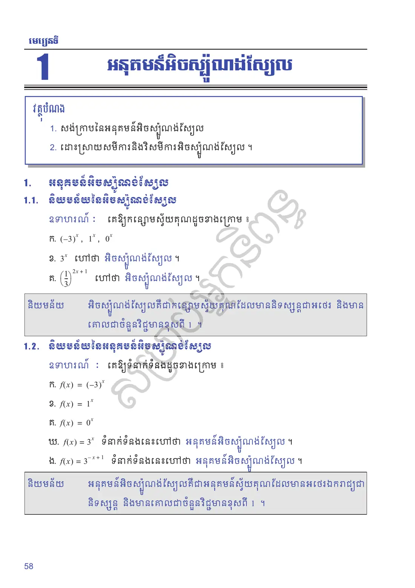
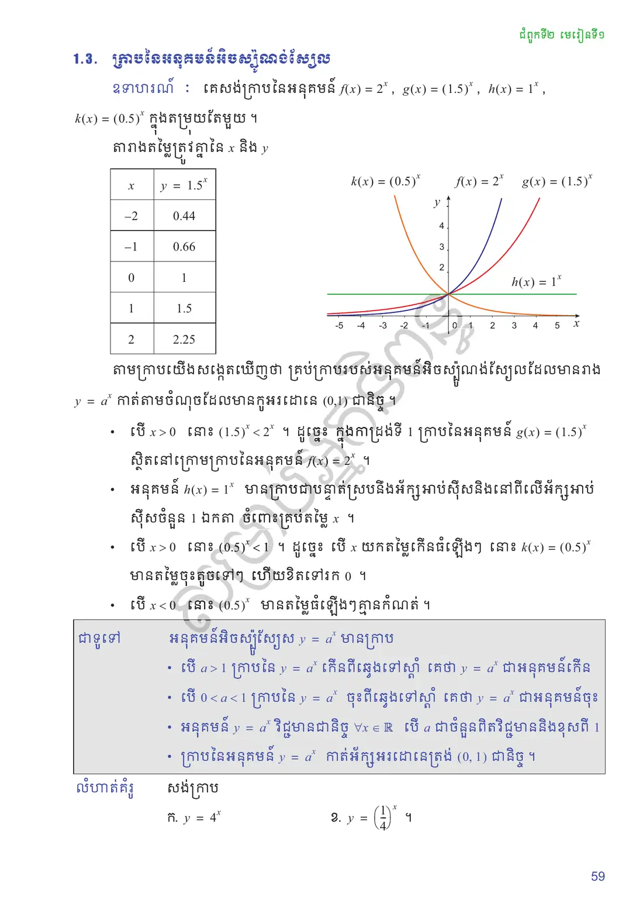
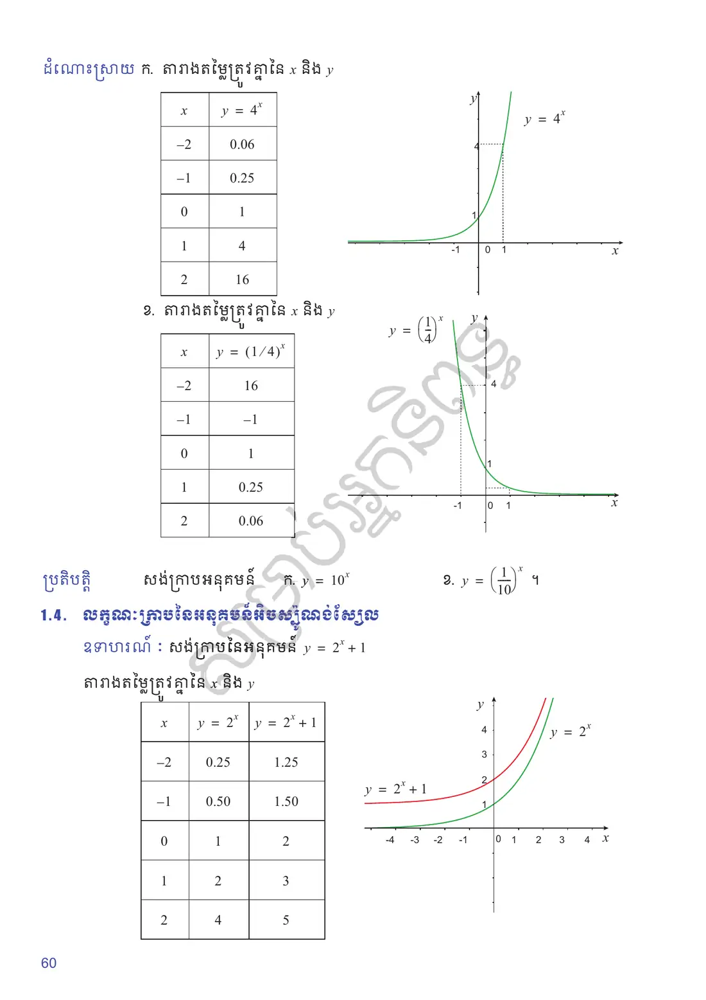
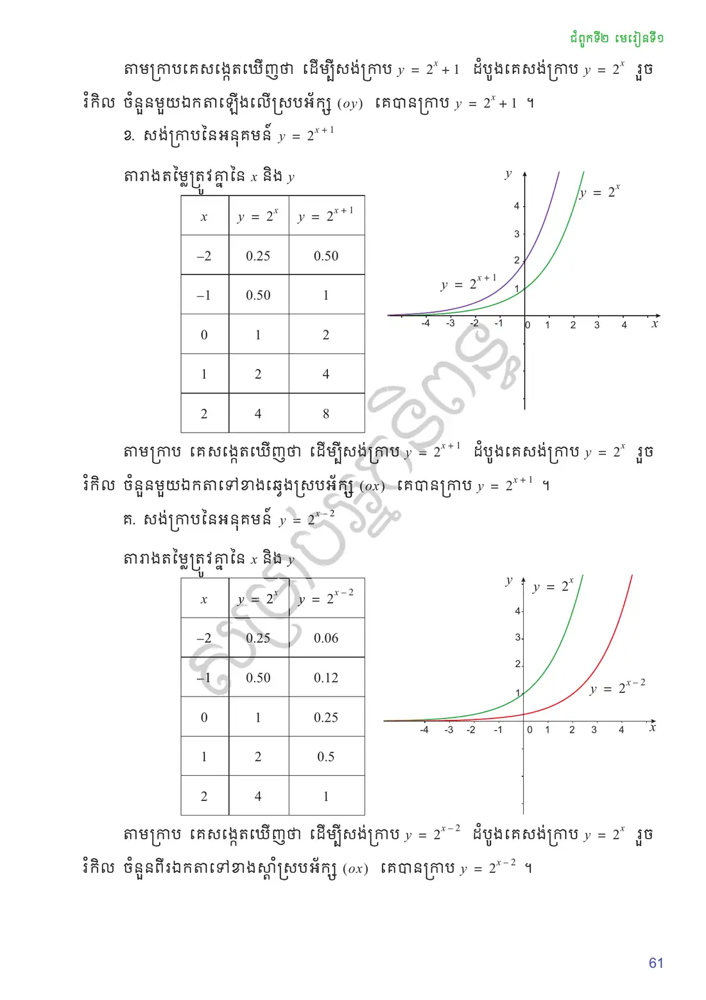
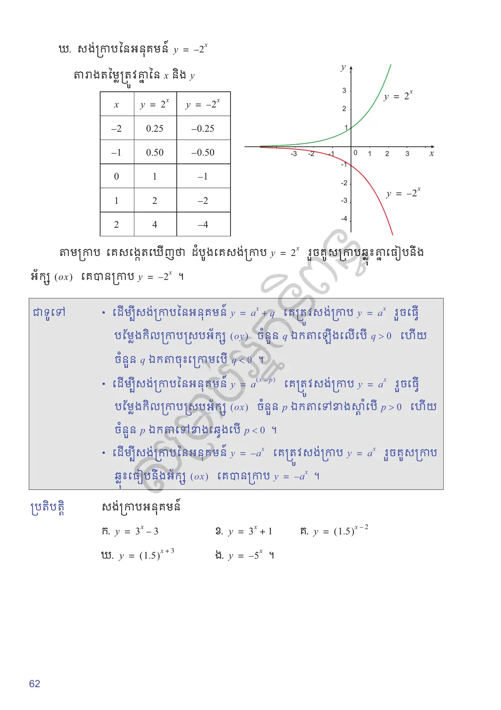
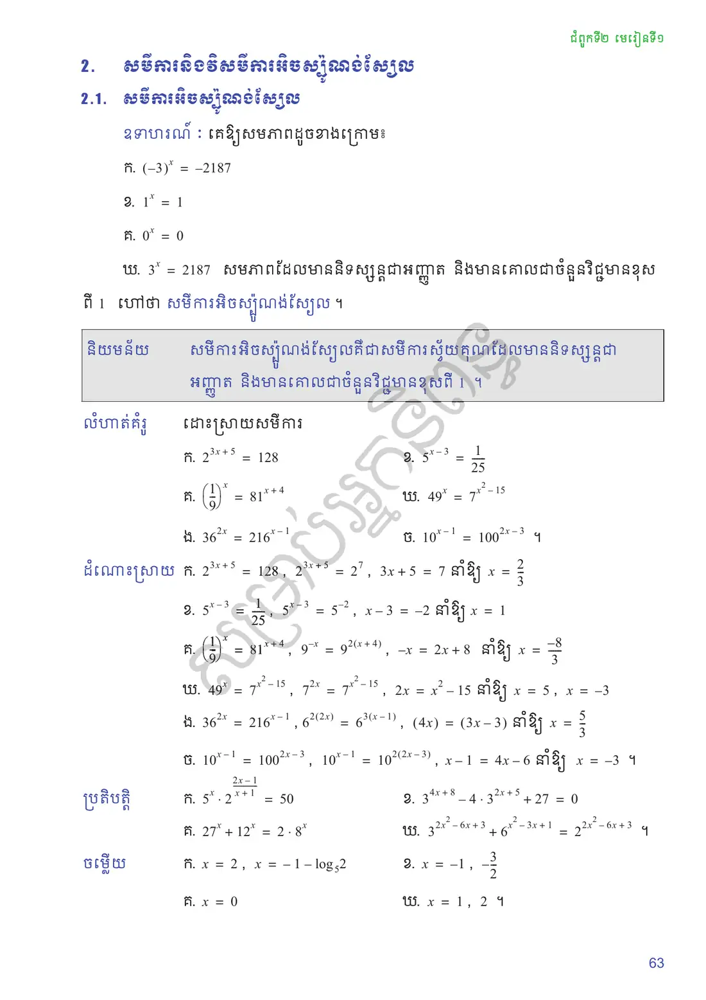
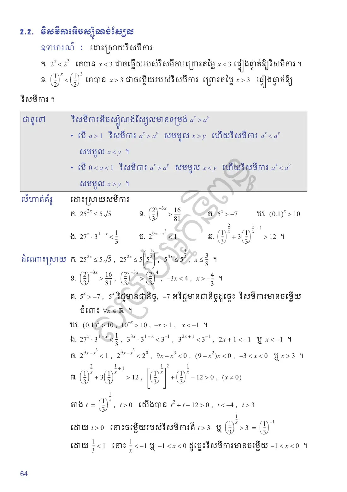
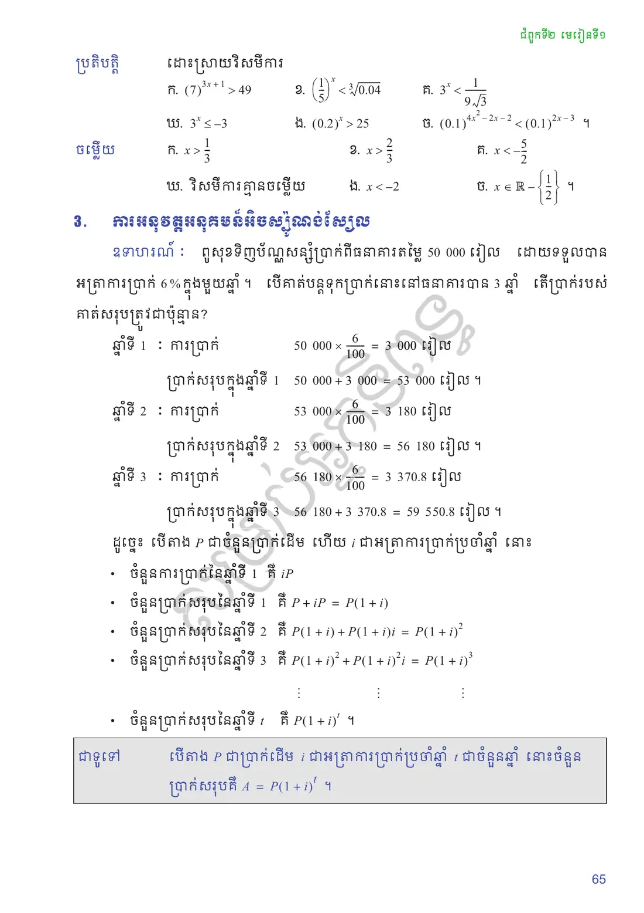
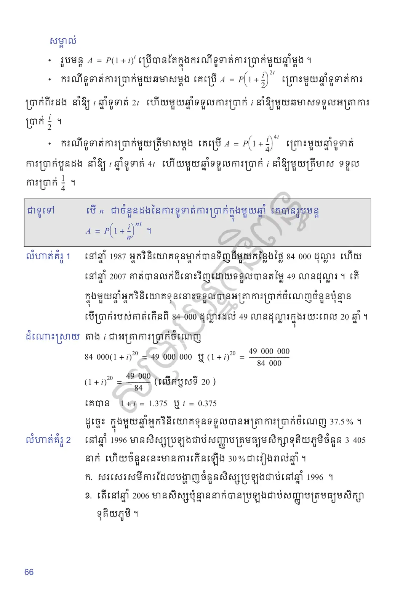
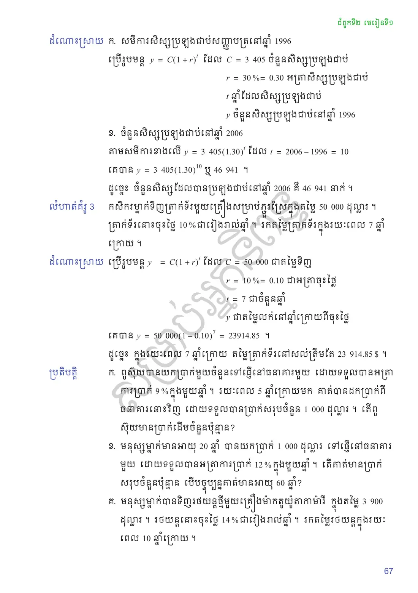
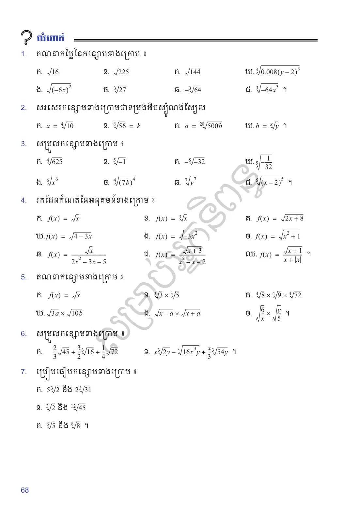
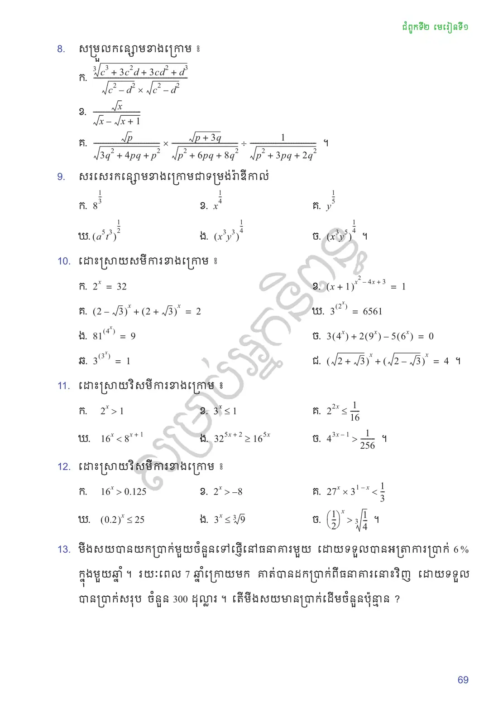
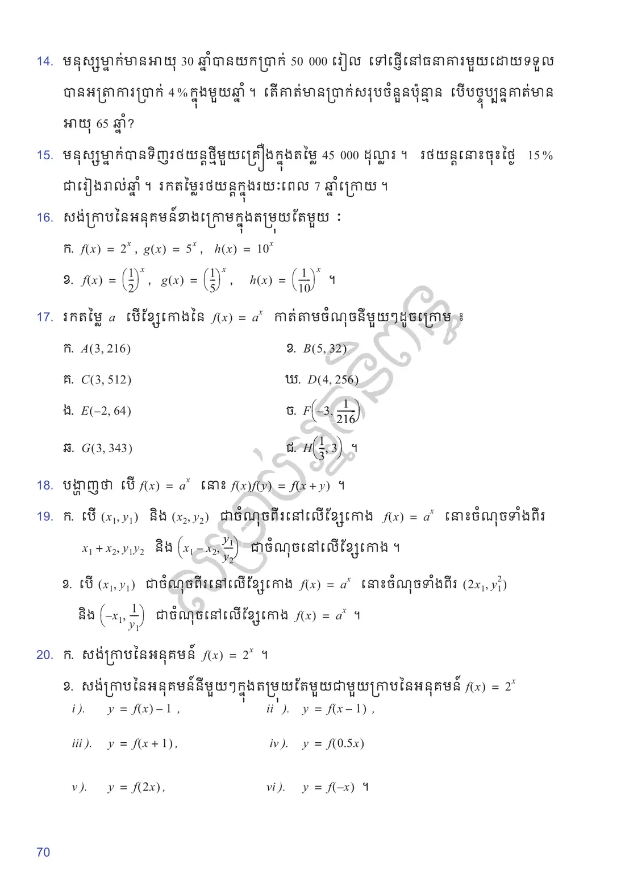
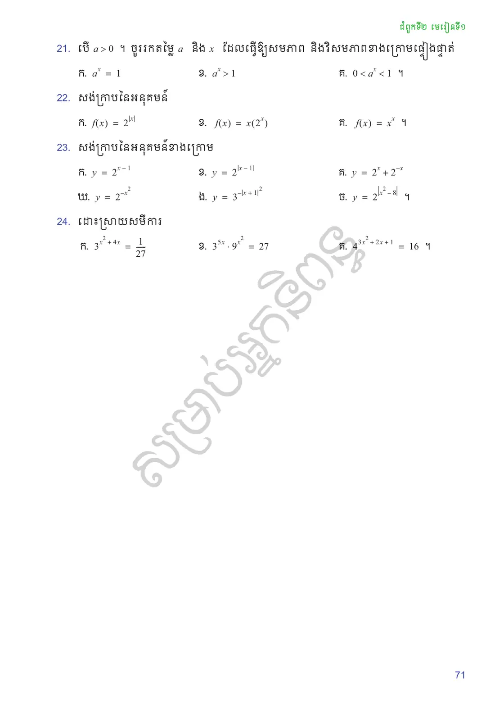
លំហាត់អនុវត្តន៍
គណនាតម្លៃនៃកន្សោមខាងក្រោម ៖
\(\sqrt{16}\)
\(\sqrt{225}\)
\(\sqrt{144}\)
\(\sqrt[3]{0.008(y - 2)^3}\)
\(\sqrt{(-6x)^2}\)
\(\sqrt[3]{27}\)
\(-\sqrt[3]{64}\)
\(\sqrt[3]{-64x^3}\) ។
សរសេរកន្សោមខាងក្រោមជាទម្រង់អិចស្ប៉ូណង់ស្យែល
\(x = \sqrt[4]{10}\)
\(\sqrt[8]{56} = k\)
\(a = \sqrt[28]{500h}\)
\(b = \sqrt[x]{y}\) ។
សម្រួលកន្សោមខាងក្រោម ៖
\(\sqrt[4]{625}\)
\(\sqrt[5]{-1}\)
\(-\sqrt[5]{-32}\)
\(\sqrt[5]{-\dfrac{1}{32}}\)
\(\sqrt[6]{x^6}\)
\(\sqrt[4]{(7b)^4}\)
\(\sqrt[7]{y^7}\)
\(\sqrt[5]{(x - 2)^5}\) ។
រកដែនកំណត់នៃអនុគមន៍ខាងក្រោម ៖
\(f(x) = \sqrt{x}\)
\(f(x) = \sqrt[3]{x}\)
\(f(x) = \sqrt{2x + 8}\)
\(f(x) = \sqrt{4 - 3x}\)
\(f(x) = \sqrt{-3x^2}\)
\(f(x) = \sqrt{x^2 + 1}\)
\(f(x) = \dfrac{\sqrt{x}}{2x^2 - 3x - 5}\)
\(f(x) = \dfrac{\sqrt{x + 3}}{x^2 - x - 2}\)
\(f(x) = \dfrac{\sqrt{x + 1}}{x + |x|}\) ។
គណនាកន្សោមខាងក្រោម ៖
\(\sqrt{x}\)
\(\sqrt[3]{3} \times \sqrt[3]{5}\)
\(\sqrt[4]{8} \times \sqrt[4]{9} \times \sqrt[4]{72}\)
\(\sqrt{3a} \times \sqrt{10b}\)
\(\sqrt{x - a} \times \sqrt{x + a}\)
\(\sqrt{\dfrac{6}{x}} \times \sqrt{\dfrac{y}{5}}\) ។
សម្រួលកន្សោមខាងក្រោម ៖
\(\dfrac{2}{3}\sqrt{45} + \dfrac{3}{2}\sqrt[3]{16} + \dfrac{1}{4}\sqrt{72}\)
\(x\sqrt[3]{2y} - \sqrt[3]{16x^3y} + \dfrac{x}{3}\sqrt[3]{54y}\) ។
ប្រៀបធៀបកន្សោមខាងក្រោម ៖
\(5\sqrt[3]{2}\) និង \(2\sqrt[3]{31}\)
\(\sqrt[3]{2}\) និង \(\sqrt[12]{45}\)
\(\sqrt[6]{5}\) និង \(\sqrt[8]{8}\) ។
សម្រួលកន្សោមខាងក្រោម ៖
\(\dfrac{\sqrt[3]{c^3 + 3c^2d + 3cd^2 + d^3}}{\sqrt{c^2 - d^2} \times \sqrt{c^2 - d^2}}\)
\(\dfrac{\sqrt{x}}{\sqrt{x} - \sqrt{x + 1}}\)
\(\dfrac{\sqrt{p}}{\sqrt{3q^2 + 4pq + p^2}} \times \dfrac{\sqrt{p + 3q}}{\sqrt{p^2 + 6pq + 8q^2}} \div \dfrac{1}{\sqrt{p^2 + 3pq + 2q^2}}\) ។
សរសេរកន្សោមខាងក្រោមជាទម្រង់រ៉ាឌីកាល់
\(8^{\frac{1}{3}}\)
\(x^{\frac{1}{4}}\)
\(y^{\frac{1}{5}}\)
\((a^5t^3)^{\frac{1}{2}}\)
\((x^3y^3)^{\frac{1}{4}}\)
\((x^3y^5)^{\frac{1}{4}}\) ។
ដោះស្រាយសមីការខាងក្រោម ៖
\(2^x = 32\)
\((x + 1)^{x^2-4x+3} = 1\)
\((2 - \sqrt{3})^x + (2 + \sqrt{3})^x = 2\)
\(3^{(2^x)} = 6561\)
\(81^{(4^x)} = 9\)
\(3(4^x) + 2(9^x) - 5(6^x) = 0\)
\(3^{(3^x)} = 1\)
\(\left(\sqrt{2 + \sqrt{3}}\right)^x + \left(\sqrt{2 - \sqrt{3}}\right)^x = 4\) ។
ដោះស្រាយវិសមីការខាងក្រោម ៖
\(2^x > 1\)
\(3^x \le 1\)
\(2^{2x} \le \dfrac{1}{16}\)
\(16^x < 8^{x+1}\)
\(32^{5x+2} \ge 16^{5x}\)
\(4^{3x-1} > \dfrac{1}{256}\) ។
ដោះស្រាយវិសមីការខាងក្រោម ៖
\(16^x > 0.125\)
\(2^x > -8\)
\(27^x \times 3^{1-x} < \dfrac{1}{3}\)
\((0.2)^x \le 25\)
\(3^x \le \sqrt[3]{9}\)
\(\left(\dfrac{1}{2}\right)^x > \sqrt[3]{\dfrac{1}{4}}\) ។
មីងសយបានយកប្រាក់មួយចំនួនទៅផ្ញើនៅធនាគារមួយ ដោយទទួលបានអត្រាការប្រាក់ \(6\%\) ក្នុងមួយឆ្នាំ ។ រយៈពេល \(7\) ឆ្នាំក្រោយមក គាត់បានដកប្រាក់ពីធនាគារនោះវិញ ដោយទទួលបានប្រាក់សរុប ចំនួន \(300\) ដុល្លារ ។ តើមីងសយមានប្រាក់ដើមចំនួនប៉ុន្មាន?
មនុស្សម្នាក់មានអាយុ \(30\) ឆ្នាំបានយកប្រាក់ \(50\,000\) រៀល ទៅផ្ញើនៅធនាគារមួយដោយទទួលបានអត្រាការប្រាក់ \(4\%\) ក្នុងមួយឆ្នាំ ។ តើគាត់មានប្រាក់សរុបចំនួនប៉ុន្មាន បើបច្ចុប្បន្នគាត់មានអាយុ \(65\) ឆ្នាំ?
មនុស្សម្នាក់បានទិញរថយន្តថ្មីមួយគ្រឿងក្នុងតម្លៃ \(45\,000\) ដុល្លារ ។ រថយន្តនោះចុះថ្លៃ \(15\%\) ជារៀងរាល់ឆ្នាំ ។ រកតម្លៃរថយន្តក្នុងរយៈពេល \(7\) ឆ្នាំក្រោយ ។
សង់ក្រាបនៃអនុគមន៍ខាងក្រោមក្នុងតម្រុយតែមួយ ៖
\(f(x) = 2^x\), \(g(x) = 5^x\), \(h(x) = 10^x\)
\(f(x) = \left(\dfrac{1}{2}\right)^x\), \(g(x) = \left(\dfrac{1}{5}\right)^x\), \(h(x) = \left(\dfrac{1}{10}\right)^x\) ។
រកតម្លៃ \(a\) បើខ្សែកោងនៃ \(f(x) = a^x\) កាត់តាមចំណុចនីមួយៗដូចក្រោម ៖
\(A(3, 216)\)
\(B(5, 32)\)
\(C(3, 512)\)
\(D(4, 256)\)
\(E(-2, 64)\)
\(F\left(-3, \dfrac{1}{216}\right)\)
\(G(3, 343)\)
\(H\left(\dfrac{1}{3}, 3\right)\) ។
បង្ហាញថា បើ \(f(x) = a^x\) នោះ \(f(x)f(y) = f(x + y)\) ។
បើ \((x_1, y_1)\) និង \((x_2, y_2)\) ជាចំណុចពីរនៅលើខ្សែកោង \(f(x) = a^x\) នោះចំណុចទាំងពីរ \((x_1 + x_2, y_1y_2)\) និង \(\left(x_1 - x_2, \dfrac{y_1}{y_2}\right)\) ជាចំណុចនៅលើខ្សែកោង ។
បើ \((x_1, y_1)\) ជាចំណុចនៅលើខ្សែកោង \(f(x) = a^x\) នោះចំណុចទាំងពីរ \((2x_1, y_1^2)\) និង \(\left(-x_1, \dfrac{1}{y_1}\right)\) ជាចំណុចនៅលើខ្សែកោង \(f(x) = a^x\) ។
សង់ក្រាបនៃអនុគមន៍ \(f(x) = 2^x\) ។
សង់ក្រាបនៃអនុគមន៍នីមួយៗក្នុងតម្រុយតែមួយជាមួយក្រាបនៃអនុគមន៍ \(f(x) = 2^x\)
\(y = f(x) - 1\)
\(y = f(x - 1)\)
\(y = f(x + 1)\)
\(y = f(0.5x)\)
\(y = f(2x)\)
\(y = f(-x)\) ។
បើ \(a > 0\) ។ ចូររកតម្លៃ \(a\) និង \(x\) ដែលធ្វើឱ្យសមភាព និងវិសមភាពខាងក្រោមផ្ទៀងផ្ទាត់
\(a^x = 1\)
\(a^x > 1\)
\(0 < a^x < 1\) ។
សង់ក្រាបនៃអនុគមន៍
\(f(x) = 2^{|x|}\)
\(f(x) = x(2^x)\)
\(f(x) = x^x\) ។
សង់ក្រាបនៃអនុគមន៍ខាងក្រោម
\(y = 2^{x-1}\)
\(y = 2^{|x-1|}\)
\(y = 2^x + 2^{-x}\)
\(y = 2^{-x^2}\)
\(y = 3^{-|x+1|^2}\)
\(y = 2^{|x^2-8|}\) ។
ដោះស្រាយសមីការ
\(3^{x^2+4x} = \dfrac{1}{27}\)
\(3^{5x} \cdot 9^{x^2} = 27\)
\(4^{3x^2+2x+1} = 16\) ។
សំណួរពហុជ្រើសរើស
ជ្រើសរើសចម្លើយត្រឹមត្រូវតែមួយ រួចចុច «ពិនិត្យ»។ ចម្លើយរបស់អ្នកត្រូវបានរក្សាទុកក្នុងកុំព្យូទ័រនេះ។
✎ សំណួរទី ១–១០
✎ សំណួរទី ១១–២០
តេស្តសមត្ថភាព ៖ មេរៀនទី ៧ អនុគមន៍អិចស្ប៉ូណង់ស្យែល (វិទ្យាសាស្ត្រ) — ២០ សំណួរ · ៣៥ នាទី